| 瑠璃色にボケた日常 02 | |
| 伊達康 | |
| KADOKAWA / メディアファクトリー (2013) | |
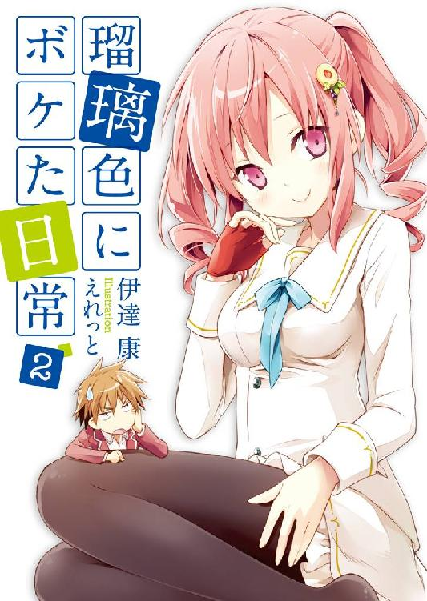
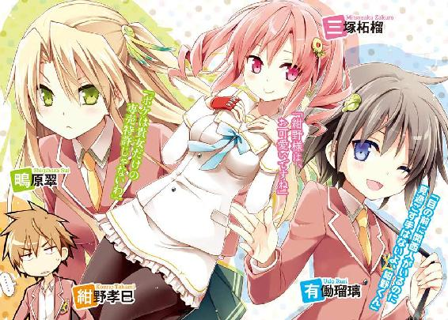
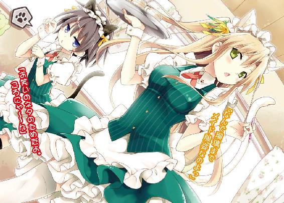
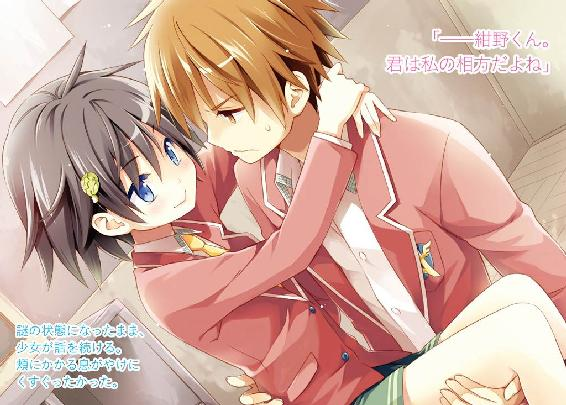
ＭＦ文庫Ｊ
瑠璃色にボケた日常２
伊達康
口絵・本文イラスト●えれっと
「刑務所の皆さん、こんにちは。私たちは青鶴高校の『お笑い研究会』です。今日はちょっと忍び込んだので、漫才をやらせて頂きます」
「ここの警備体制を問うんじゃない。ちゃんと入口から来たんだ」
「看守たちを倒すのに苦労したけどね」
「許可を貰って入ったんだよ。何で漫才のために強行突破しなきゃいけないんだ」
「そういやそうだったね。では改めまして皆さん、お勤めご苦労様です。気付けばもう十月、すっかり秋となってきたわけですが」
「ベタな話題から始めたな......まだまだ暑いけどな」
「世間では色々な秋があるよね。食欲の秋。運動の秋。芸術の秋」
「収穫の秋なんてのもあるな」
「農家にとっては忙しい時期だもんね。刈り入れの秋。脱穀の秋。精米の秋」
「そこまできたら秋は付けなくていいよ」
「そして出荷の秋。町へ行商に行く秋。そこに襲い来る山賊の秋。命が惜しければ積み荷をよこせッの秋。どうか、どうか幼い娘の命だけは......の秋」
「何か事件起きてるぞ！」
「娘は見逃してやろう、だがお前はここで死ね！ グサッ！ ウ、グ......ガクッ。パパ！ パパァー！ の秋」
「どんな秋だよ！」
「その後、父を失った少女は謎の錬金術師に助けられ、くの一としての人生を歩み始めた」
「知らん！」
「美しく成長した彼女は、やがて自分が王家の末裔だったことを知る。さらにはサタン率いる地獄の悪魔たちの復活を知り、世界の命運を懸けた戦いに巻き込まれていく」
「展開が急過ぎるぞ！」
「しかし、くの一はまだ知らない。正体不明の宇宙艦隊が地球に向けて迫っていることを......」
「方向性をまとめろ！ 世界観が取っ散らかり過ぎだ！」
「そんな秋だ」
「秋とかもう関係ねぇよ！ くの一どうなったんだ！」
「何やかんやで死んだ」
「適当かよ......」
「続き考えるの飽きちゃった。えへ」
「可愛くないぞ」
「とまあ、そんなこと言いながらやっているわけですが」
「ふぅ......開始一分でもう喉が痛いよ」
「そうそう皆さん。実はこの紺野くん、中学時代は全国優勝までした有名なピッチャーだったんですよ。一時期はプロのスカウトも注目してたとか」
「昔のことはいいよ」
「君はやっぱり運動の秋かな？ 何かスポーツでも始める気はないのかい？」
「いや、今はなかなかな......」
「ハンドボール部とかどう？ 意外と面白いかもしれないよ」
「うーん、体育の授業くらいでしか経験ないからなあ」
「そんな言葉とは裏腹に、紺野孝巳にはハンドボールへの関心がほのかに芽生え始めていた。その数日後、孝巳は伝説のプレーヤー・投田球宏と運命的な出会いを果たすことになる」
「また何か始まったよ......」
「孝巳は彼から、自分が王家の末裔であること、さらにはサタン率いる悪魔たちが復活したことを聞かされ......」
「お前にはその引き出し以外ないのか！」
「しかし、孝巳はまだ知らない......」
「知ってるよ！ 宇宙艦隊が迫ってんだろ！」
「青鶴高校にはハンドボール部がないことを」
「ないのかよ！」
「そんな秋だ」
「もうさっさと冬になってくれ！」
「そんなわけで、皆さんも一緒に秋を謳歌しよう。とりあえず脱獄の秋を！」
「お前もこのまま収監されろ！」
第一章 泣き黒子の霊導師
１
「うむ。まずまずの手応えだ」
本日二回目となる馬鹿馬鹿しいネタ合わせが終了すると、紺野孝巳の隣でそんな声が上がった。
うんざりと向けた視線の先で、制服ブレザーを着た小柄な少女が満足げにほくそ笑んでいた。上機嫌に鼻歌などを唄い、テンション冷めやらぬのかクルクルとその場で回り出す。猫っ毛のショートカットにくっついたデフォルメされた河童のヘアピンが、一緒に弧を描いていた。
「......一応訊いておくが、この漫才を披露する機会があるとでも思ってるのか？」
「もちろんだよ。せっかく作ったんだ、必ず実現させてみせる」
自信満々に頷いたその少女・有働瑠璃に溜息で応え、孝巳はいつもの自分の指定席に腰を下ろした。年季の入ったパイプ椅子が、ミシリと軋みを上げた。
「率直に言って、まだまだの出来ね」
すると、今まで口を閉ざして稽古を見守っていた鴫原翠が、向かいの席からようやくそんな感想をよこしてきた。腰まで届く栗色のロングストレートを優雅に払い、彼女はいつもの淡々とした口調で、歯に衣着せず言い募る。
「笑い所が不明瞭で、テンポが悪いわね。意外性がないし、知性も感じられない。そして何より、ボケ担当に品性がないわ」
「言われてるよ紺野くん」
「ボケはお前だろ」
「あと、ネタ自体に情緒が欠けるのが問題ね。もっとグローバルな、フレキシブルな、コズミックな感じの、何らかのソレをアレするべきよ」
途中から孝巳は聞くのをやめて、背もたれにかけていたブレザーに袖を通し始めた。偉そうに語っているが、きっと本人も何を言っているのかよく分かっていないのだろう。
──窓から吹き込む風が少しだけ冷たくなってきた、十月初旬の夕刻。吹奏楽部の演奏や、運動部員たちの掛け声が遠く届いてくる、安穏たる放課後の一時。
孝巳たちが今いる場所は、そんな青鶴高校の『お笑い研究会』の部室だ。部員たった三名による、非公式の部活動......紺野孝巳はその一員なのだ。
別にお笑いに興味があったわけじゃない。部長を務める有働瑠璃と知人同士だったわけでもない。『お笑い研究会』にやってきたのは、除霊の相談がそもそもの理由だった。孝巳はその頃、怨霊に取り憑かれ悩んでいたのだ。
（思えば、あれが人生の分岐点だったな）
この『お笑い研究会』は、学校内では『お祓い研究会』と誤認されている。「筋金入りのお笑いマニア」であり「凄腕の霊能者」でもある瑠璃は、後者としての知名度の方が圧倒的に高い。孝巳が相談に訪れたのも、その力を当てにしたが故だった。
結果的に孝巳は、彼女のお陰で自分に憑いていた元チームメート・小田切和人の怨霊を成仏させることができた。しかしその代償が、研究会への入部だったのだ。
ごり押し的に有働瑠璃の相方とされてしまった孝巳の毎日は、その時より戦慄と困惑と脱力に満ちたものとなった。笑いをこよなく愛する瑠璃にこれでもかと振り回される苦行の日々......時には老人ホームで漫才、時には夏祭りで漫才、さらには彼女の私的ないざこざに巻き込まれ、百鬼夜行の霊能バトルまでも体験した。
そして彼女が次に画策しているのが、刑務所での慰安漫才らしい。
孝巳にとって有働瑠璃という少女を一言で評するなら、疫病神だった。
「フン、偉そうに言っちゃってさ」
むくれた表情で幼馴染みを一睨みし、瑠璃が椅子に座りヒョイと足を組む。短いスカートから伸びる白い素足に、孝巳は不覚にも目を取られてしまった。
（これでまともな中身をしてれば......）
中学生だと言っても充分に通用するだろう幼い容姿だが、瑠璃は間違いなく美少女の部類に入るルックスを持っている。
長い睫毛に縁どられた切れ長の目、すっきりと整った鼻筋、瑞々しい小さな唇。そのどれもが完璧なバランスで小顔に配置されている。残念ながら体格と同様にバストもミニサイズだが、これからの成長次第では大いに化ける可能性があるだろう。ひとえに性格がそれらを台無しにしているのだが。
「大体、翠みたいな素人にお笑いの何が分かるというんだい」
「私だって暇を見て色々と研究しているもの。副部長となったからには、それも一応の義務だと心得ているから」
瑠璃の視線を正面から受け止め、翠が大きく胸を反らす。その拍子に上下したはち切れんばかりの膨らみに、孝巳はまた不覚にも目を取られてしまった。
（それを言うなら、こいつも同じか......）
新入部員でありながら副部長を自任する鴫原翠は、瑠璃とはまた違ったタイプの正統派美少女だ。
モデルでもやっていてもおかしくない高校生らしからぬプロポーションと、凛と引き締まった西洋人形のごとき絶世の美貌。成績もトップクラスの優等生であり、その神々しさすらある気品も相まって全校男子の憧れの的である。やはり性格に若干の問題があることは、あまり知られていない。
瑠璃の親友であり、かつては宿敵だった彼女は、瑠璃と前述の霊能バトルをやらかした張本人だ。今ではどうにか二人の関係は修復されたが、孝巳はその時の顛末を二度と思い出したくなかった。
「......それじゃあ、悪いけど私はこれで失礼するわ」
ふと翠が扉上部にある時計に目をやり、軽い溜息をついて立ち上がった。
「今日もか？ 最近いつも早いな」
翠がこの『お笑い研究会』に入部して一ヵ月強。実は彼女は、部への出席率があまり良くない。顔を出してもこうやって二十分ほどで帰ってしまうことがほとんどだ。
「ちょっと家の方でゴタゴタしているの。できれば私も、もっとこちらに時間を割きたいのだけど......立場上そうも言えないから」
......鴫原翠は、この世に引き留められた霊を救済する「霊導師」なる仕事をしている。
そんな霊導の名門家の当主を務める彼女には、本当は部活をしている暇などないのかもしれない。クラスにも友達がいないようだし、少し心配だ。孝巳が言えたことではないが。
「なるほど。ここのところ不機嫌な顔をしてるのは、そっちのストレスってことかい。便秘とのダブルパンチというわけだ」
「る、る、瑠璃！」
途端に翠が勢いよく振り返り、真っ赤になって瑠璃を睨みつけた。いつもはクールなのだが、彼女は割と動揺が顔色に出る傾向がある。
「と、とにかく失礼するわ！ 今の私が抱えている案件は、町の治安に関わる問題なの！ それから私、便秘なんかじゃないから！」
孝巳が「落ち着け」と声をかけたものの、翠は顔を合わせようとせず大股で歩き出した。閉まっている扉に一度頭をぶつけ、慌てて戸を開けてそそくさと退出する。
扉が閉じられると、瑠璃が「ベタ過ぎるね」と率直な感想を述べた。
「全く......お前らっていつもこんな感じだよな。もっと仲良くできないのか？」
「私たちは昔からこれがデフォルトだ」
「漫才だって、お前ら二人でやればいいじゃないか。ガキの頃からの付き合いなんだから、息も合うだろ？」
「翠にまだその実力はない。勝手に副部長なんて名乗ってるけど、君もさっきの評論を聞いたろ？ アレはどう見てもボケ側だ。私と翠じゃ、チャゲ＆チャゲだよ」
「チャゲはボケじゃない」
「ブシッ！」
会話の最中、いきなり瑠璃が体を丸め、そんな意味不明の声を発した。
訝しげに窺った孝巳をよそに、さらに「ブシッ！ ブシッ！」と繰り返している。どうやらクシャミのようだった。
「何だ、風邪か？」
「そうかも。喉も少し痛ブシッ！」
言い終わらないうちに、またクシャミをする。
「お前でも風邪引くのか」
「どういう意味ブシッ！」
「腹でも出して寝たんじゃないのか？」
「そんなことないブシッ！」
「......変なキャラになってるぞ」
ようやく治まったようで、瑠璃がブレザーの袖口で鼻をグシグシとこすった。次いで何かを思いついたように、ポンと手を叩いてこちらを見る。
「今のクシャミ、もしかしたらギャグに活かせるかもしれない」
呆れて「はあ？」と眉を下げた孝巳に、カッパ少女は真剣な表情で詰め寄ってきた。
「紺野くん、試しに『かつお』って言ってみて」
「かつおブシッてか？ くだらねぇ......」
「くだるかくだらないかは、私が判断する。さあ」
「ったく......かつお」
「............」
「かつお」
「............」
「かつお！」
「何だい姉さん」
「超くだらねぇよ！」
「ふむ、残念ながらボツだね。クシャミを操るのは無理なようだ。まあいいよ、こんなの単なる暇つブシッ！」
「操るな！」
条件反射でつい突っ込んでしまう。
仕方ない。三ヵ月近くもこんなボケ製造機と一緒にいたら、誰だってこうなるに決まっている。それは孝巳に限ったことではないはずだ。
「紺野くん。体調が良くないので、今日はもうお開きにしよう」
「そうだな。鴫原も帰っちまったし」
「フン。やる気のない人間は必要ないよ。こっちまでモチベーションが下がる」
不機嫌面で吐き捨てた瑠璃に構わず、手早く帰り支度に取りかかる。彼女の気が変わらないうちに、さっさと学校を出てしまおう。
（しかし鴫原が忙しいってことは、それだけこの世には迷惑な霊が多いってことか）
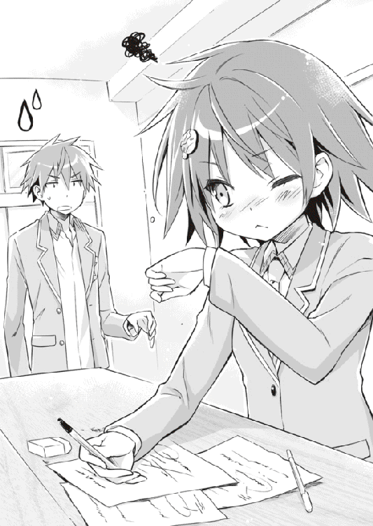
そうなのかもしれない。霊というのは、意外とどこにでもいるものだ。中には災厄を撒き散らす危険で悪質な存在がいることも、孝巳はすでに知っている。
こんな二人と一緒にいる限り、孝巳が幽霊と全く無縁に生きることは難しい。でも、彼女たちは不用意に一般人をそちら側の事件に巻き込むほど浅慮ではない。
以前に孝巳が酷い目に遭ったのも、自ら首を突っ込んだ自業自得だったのだ。もう二度と、同じ轍を踏むつもりはない。霊とは関わらない。
孝巳はそう心に決めていた。その時は、まだ。
２
それから学校を出たのち。
孝巳は自宅最寄り駅の前で瑠璃と別れ、しばしコンビニで立ち読みをしたあと、国道の歩道を一人ブラブラと歩いていた。
瑠璃や翠とは同じ地域に住んでいるのだが、方角が正反対だった。孝巳の家は駅の南側のマンションが林立する住宅地にあり、彼女たちの家は北側にある。そちらは大きな高級住宅ばかりが軒を連ねる山麓地帯で、あまり足を踏み入れたことがなかった。
（たった一駅なんだし、電車通学はやめてランニングにするか）
黄昏に赤く染まった鰯雲を眺めながら、一つ大きな欠伸をする。
青鶴高校は自転車通学が禁止されているので、電車やバスを使わないなら徒歩で行くしかない。こっそり駅前に自転車を停めて通学している生徒もいるが、あえて校則を破る気にはなれなかった。それでなくても孝巳は、泣く子も黙る凶悪ヤンキーと恐れられている。その誤解を解くためにも、素行には配慮せねばならなかった。
傍らの車道を、時おり車がビュンと通り過ぎていく。
それが大型車両だったとき、孝巳の全身は無意識のうちに緊張で強張る。かつてダンプカーにはねられ大怪我を負った、そのトラウマだった。
（一年ほど前までは、自分が野球をやめてるなんて思ってなかったな......）
交通事故によって利き腕の右肩を駄目にしてしまった孝巳は、今でもまともにボールが投げられない。左肩にも事故以来、脱臼癖がついてしまっている。それに絶望して一時期はすっかり腐ったものだが、今は何とか前を向くことができている。
いつかまたスポーツをやりたい。そのためにも体力をつけ直し、初心に戻り、新たな生き甲斐を見付けようと決めたのだ。それが何なのかは、まだ分からないのだけど。
やがて歩道が橋に差しかかると、眼下に緩やかな流れの川面が見えてきた。
国道に交差して南北を縦断するこの川は、隣県まで続く一級河川だ。水深が結構あって、台風になるとかなり増水して流れもきつくなる。なので両岸にある土手はどちらも広く、中学時代の孝巳はよくそこをランニングコースに使っていた。
「ん？」
橋の中央辺りまでやってきたとき、前方に一人ポツンと佇む人影に気付いた。
灰色のジャケットを着た、見た感じ二十代半ばくらいの短髪の男だった。鉄骨の欄干に両手を添え、何やら深刻な表情で川を見詰めている。鞄らしき物は何も持っておらず、やけに身軽な風体だった。
（珍しい魚でもいるのか？）
すれ違い様に男の視線を追ってみたが、川面まではかなりの距離があり、見えたのは緩やかな水流だけだった。
すぐそこまで行けば土手に降りる階段があるのに......と思いつつ、そのまま男から遠ざかる。何の気なしに携帯で時刻を確認すると、午後六時半を回ったところだった。
今日の夕飯は何だろうか。面白いテレビ番組はあっただろうか。明日は試しにランニングで登校してみるか。そんな些事に取り留めもなく思いを馳せていたとき。
ドボン！ という大きな着水の音が聞こえ、孝巳は反射的に足を止めた。
横手を見下ろすと、川面が幾重も波紋を広げている。跳ね上がった水飛沫が小雨のごとくパラパラとその一角に降り注ぎ、間もなく治まった。
（まさか）
嫌な予感に振り返ると、五メートルほど後ろにいたはずの男が消えていた。
橋は長い一本道。この僅かな時間で姿が見えなくなるわけがない。ということは──
「っ！」
呆ける暇もなく、孝巳は走り出していた。男が飛び降りた。自殺だ。あの馬鹿！
全力で土手への階段を駆け下り、転がるように川岸に辿り着く。
（あそこら辺か!?）
鞄と靴を放り出し、そのままザブザブと川へ入る。流れはさして速くない。まだ付近にいるはずだ！
無我夢中でクロールをしながらおおよその地点を目指すと、やがて前方にさっき見た灰色のジャケットがプカリと浮かんできた。
（よし......！）
全身に鞭を入れたが、進みは予想外に遅かった。ブレザーとズボンが水を吸い、手足に重くまとわりついてくる。口に流れ込む水は、何だか少し苦かった。
ブレザーだけでも脱ぐべきだった。こんな状態で、果たして大人一人を抱えて岸へ戻れるのか？ 昔ならともかく、今の自分にそれだけの体力があるのか？ そんな不安が頭をよぎったが、とにかくやるしかない。今さら引き返しては、ただの行水だ。
早くも痙攣し始めた両手足を必死に動かし、何とか目標物へ到達する。
襟首辺りを引っ掴むと、ズンと重い感触があった。幸いなことに、ジャケットだけが浮いてきたわけではないようだ。
男は気を失っているのか、孝巳が体へ腕を回しても無反応のままだった。グッタリと全身を預けられ、危うく一緒に水没しそうになる。必死に立ち泳ぎする爪先に、微かに川底が数度触れた。
「ゴボ！ ゴボゲボ！」
残った左腕で水を掻き、もと来た方向へ引き返す。遅々として前進しなかったが、右腕は塞がっていて使えない。否、それ以前に先ほどの無茶苦茶なクロールで、すでに右肩の古傷が尋常でない痛みを発していた。
（誰か、いないのか......！）
期待はできない。橋から見下ろしたとき、土手に通行人はいなかった。だからこそ孝巳はすぐに川へ入ったのだ。
（まずい......）
息が苦しい。体が重い。右肩がとてつもなく痛い。意識が朦朧とする。
岸はまだか？ この男は生きているのか？ 携帯はちゃんと置いてきたか？
「こっちだ！」
混濁する孝巳の脳内が、前方よりかけられたそんな叫びにたちまち覚醒した。
顔を上げるより早く、左手を誰かに掴まれる。それが膝辺りまで川に浸かった青年だと悟った頃には、孝巳の体は凄まじい膂力で抱えた男ごと引っ張られていた。
「手を放さないで！ もう少しだけ頑張ってくれ！」
言われなくてもこの命綱を放すつもりはない。孝巳は濡れる手で救世主の手を握り返し、残る力を振り絞って一世一代のバタ足を敢行した。
......孝巳から男を担ぎ受けると、青年は彼を土手に寝かせ、すぐさま人工呼吸を開始した。気道を確保し、胸部を何度も押し、躊躇なくマウスツーマウスを行う。その際も「死ぬな！ しっかりしろ！」と懸命に男へ呼びかけ続けている。
孝巳は離れた場所で水死体のように横たわり、ただそれを見守ることしかできなかった。
もはや指一本すら動かす余力がない。青年がいなかったら、あの救命処置も自分がやらねばならなかったことに、今さらながらに気付いた。
しばらくすると、けたたましい救急車のサイレンが近付いてきて、土手の上で止まった。
どうやらすでに青年が通報してくれていたらしい。......それも本来、闇雲に飛び込む前に孝巳がするべきことだった。
（グダグダだな、俺......）
程なくして担架を持った数名の救急隊員が土手を駆け下りてきた。
ようやくポツポツと数人の野次馬が集まってきた中、彼らはテキパキと迅速な動きで未だ意識の戻らない男と、ついでに孝巳を、待機する車両へと運んでいった。
病院へ搬送された孝巳は、軽い診断ののちに一枚の湿布を渡され、早々にロビーへ放り出されてしまった。
診察した医師は、かつて孝巳が交通事故に遭った際、主治医を担当してくれた年配の外科医だった。「おう、覚えとるぞお前さん。相変わらずハードな人生送っとるの」などと言い放ち、彼はビール腹を揺らして呑気に笑っていた。
「はあ、疲れた」
待合室の長椅子に座ると、孝巳は背もたれに体を預けて眉間に手を当てた。
すぐにでも家で休みたい気分だったが、これから警察に事情を説明することになっている。助けた男の容態も聞いておきたい。それが分からなければ、どのみち帰っても眠れはしないだろう。
病院はすでに外来患者を締め切っており、ロビーには孝巳一人しかいない。薄暗い院内で、緑色の非常口案内だけが明々と光っていた。
（明日は筋肉痛だろうな）
両腿をトントン叩きながら、深く溜息をつく。制服はずぶ濡れになってしまったので、今は学校のジャージ姿だ。体育の授業があったのが幸いした。
とりあえず、明日のランニング通学は中止だな......などと考えていたとき、通路から数人の足音が迫ってきた。
現れたのは、背広を着た三人の男たちだった。いずれも厳めしい面相をしており、眼光が異常に鋭い。刑事だろうか。
「やあ、大変やったね」
彼らの一人が、気さくな調子でそんな声をかけてきた。何故か関西弁だった。
「お疲れやろうけど、少しだけ話を聞かせてもらってええかな」
そう言って男が差し出してきたのは、思った通り警察手帳だった。
その後、孝巳に簡単な質問をいくつかすると、刑事たちは「すぐ戻るよ。家まで車で送らせてもらうから、ちょっと待っててな」と、また通路を引き返していってしまった。再び一人、長椅子に取り残されてしまう。
「......しまった、容態を訊くのを忘れた」
孝巳が顔をしかめて唸ったとき、再び通路から足音が響いてきた。今度は複数ではなく単体の足音だった。
「あ──」
やってきたのは、川で助けてくれた青年だった。
あの時は余裕がなかったが、改めて観察すると思わず気後れしてしまうほどの爽やかなイケメンだ。目鼻立ちのくっきりとした端正な顔をしており、スラリと手足が長く、背が高い。レザーのシャツに薄手の上着、黒いカーゴパンツとワークブーツも含め、服装全てがいちいち決まっている。救命活動をしていたときの鬼気迫る表情は今はどこにもなく、彼は涼しげな両目を柔らかく細めてこちらに微笑んでいた。
「やあ、大変だったね」
先ほどの刑事と同じ労いを述べ、青年がゆっくりと近付いてくる。そのまま孝巳の隣に腰を下ろし、慣れた仕草で優雅に足を組んだ姿は、まるで映画俳優のようだった。柑橘系の香水の匂いが、ほのかに漂ってきた。
「高橋さん、どうやら危篤状態は脱したそうだよ」
安堵を込めた青年の言葉に、孝巳はようやく男の容態と、そして名前を知った。
「そうですか。良かった」
「君のお陰だよ。ありがとう」
いきなり青年に礼を言われ、慌てて首を振る。
礼を言うのはこちらの方だ。この青年が来てくれなかったら、孝巳は今頃その高橋さんと一緒に霊安室にいた可能性がある。
「あの、もしかして高橋さんの友達、だったとか」
決まりの悪い心地になり、孝巳は苦し紛れにそんなことを訊いた。実際のところ、そうだとは思っていなかった。男を介抱していたとき、青年は一度も高橋という名を口にしなかったからだ。
「いや、知らない人さ。名前はさっき警察の人から聞いたんだ」
予想通りの返答ののち、ふと青年の顔が翳る。
「でも、容態は楽観視できるものじゃないらしい。溺れただけでなく、頭を川底の岩で打っているそうだ。そちらの怪我の方が深刻で、当分は意識不明の状態だろうと」
「そうですか......」
何とか回復してもらいたい。どんな事情があったのかは知らないが、もう二度と自分から命を捨てるようなことはしないで欲しい。
かつて絶望から飛び降り自殺を図った、一人の少女のことを思い出す。その死が残された人間にどれほどの傷を与えたかを......孝巳は存分に思い知っている。
「きっと大丈夫さ。高橋さんは死んじゃいない、生きてるんだ。それだけで僕は充分だよ。死んでしまったら──元も子もないから」
「そうですね」
とにかく、もう高橋のために孝巳ができることはないだろう。あそこで死なれずに済んだ、孝巳も後悔せずに済んだ......それで良しとするしかない。
ややあって、刑事たちが戻ってくる足音がしたので、孝巳は長椅子から立ち上がり青年に頭を下げた。
「とにかく、ありがとうございました。俺、青鶴高校の──」
言いかけた刹那、青年が片手を伸ばし待ったをかける。
「名前は聞かないでおくよ」
「え？」
「君という少年と、こんな出会い方はしたくなかった。名乗り合うのはいつかまた、違った出会いをした機会に」
３
翌日。想像していた以上の筋肉痛に襲われながらも、孝巳は何とか登校した。
当然ながら、ランニング通学をする余裕はなかった。右肩も湿布一枚でどうにかなるわけもなく、朝からズキズキと鈍重な痛みを訴えている。
「あれ、夏服に戻ってる」
放課後、疲労の残る体を引きずって『お笑い研究会』の部室にやってきた孝巳を見て、瑠璃が開口一番そんな感想をよこしてきた。
「どうしたんだい？ 早くも来年の夏を先取りかい？」
短く「違う」とだけ返し、いつもの椅子に腰掛ける。
顔を出したものの、正直今日は彼女の相手をする気にはなれない。実は扉を開ける直前まで、帰宅してしまおうかと考えていた。
「鴫原は休みか」
「そうなんじゃない？ どうでもいいけど」
にべもなく答えながら、瑠璃は机に広げたノートに何やらシャーペンを走らせていた。今日も鼻をグシグシいわせている。どうやら本当に風邪のようだ。
まあ、本日に限って翠の欠席は幸運かもしれない。どうせ瑠璃と顔を合わせれば、小競り合いを始めるのは目に見えている。仲裁する体力はなかった。
グタリと椅子に背を預けたまま、暇をもてあまし何となく室内を見渡す。
季節的にはもう秋のはずだが、夏の名残が最後の抵抗を続けていて気温はまだ高めだ。にも拘わらず窓が全て閉め切られているのは、おそらく瑠璃の体調の都合だろう。皮肉にも夏服が幸いし、さほど暑さは感じなかった。
「そういや紺野くん。『頭取さん』を知ってるかい？」
しばらくののち、瑠璃が突然そんなことを言ってきた。その顔はノートに向いたままだ。
「頭取さん？ 銀行の話か？」
軽く腕をストレッチしながら、欠伸と共に問い返す。それは確か、銀行のお偉いさんっぽい人の肩書きのはずだ。それ以外の頭取さんを孝巳は知らない。
「で、それは何のネタ振りだ」
「人をタヌキみたいに言わないで欲しいな。単なる世間話だよ」
やっとこちらを見た瑠璃が、プクリと頬を膨らませる。艶やかなショートカットに、今日もカッパ型ヘアピンが居座っていた。
「私が言っているのは、都市伝説の頭取さんのことだ」
「都市伝説？」
そう言われても、さっぱり意味が分からない。孝巳はまとまりのない頭髪に指を突っ込み、ガリガリと掻き回した。川で泳いだせいか、いつもよりパサついていた。
「流行りの頭取さんを知らないとは、とんだ情報弱者だね。夏を先取る前に、今に目を向けたまえ」
理不尽な誹謗をよこしつつ、瑠璃はシャーペンを指先で器用にクルクル回しながら続ける。少し鼻声だった。
「君、九月に起こった首切り殺人は知ってるよね？」
「......潰れた銀行の、あれか」
先月、学校から二駅の場所にある廃銀行で殺人事件があったのは、もちろん孝巳も知っている。
その銀行は、移転した直後に経営が破綻してしまい、長らく放置状態になっていた建物だった。二学期が始まって一週間ほど経った頃、そこで首を切断された男性の死体が発見されたのだ。
凄惨な事件だけに、当然ながら大きく報道され、新聞やテレビで連日取り沙汰された。被害者の身元は特定されたようだが、犯人は未だ見付かっておらず、メディアでは様々な憶測が飛び交っていた。あれから一ヵ月が過ぎようとしている今、すでにその話題は下火になりつつある。
「殺されたその人、そこの頭取さんだったのか？」
「違う。頭取さんは犯人の方だ。あの銀行に棲む殺人鬼なんだ」
言いつつ瑠璃がシャーペンを耳に挟む。競馬場にいるオッサンみたいだった。
「私が噂を聞いたのは五日ほど前だったかな？ 人の首を切ることに喜びを得てしまった、一種の快楽殺人者らしい」
「それが何で頭取さんなんだよ」
「そのまんま、『頭を取る』からだよ」
......なるほど。
詳しく聞くところによると、どうやらそのショッキングな殺害方法と出現場所から発生した、まさに都市伝説の怪人ということらしかった。
犯人が捕まっていないことで、噂が噂を呼びそんなことになってしまったのだろう。気味の悪い出来事が怪奇や心霊と結びつけられるのは、珍しい話じゃない。
「目撃者も数人いるらしいよ。夜中にあの銀行で人影を見たとか、物音や呻き声を聞いたとか、実際に追いかけられたとか」
「それ、野次馬同士が勘違いしただけじゃないのか」
「かもしれないね」
あっけらかんと笑っているところを見ると、瑠璃もあまり信じてはいないようだ。
しかし孝巳は確認の意味を込めて、居住まいを正し彼女に向き直った。
「念のため訊いておくが......幽霊ってことはないよな？」
「頭取さんがかい？ 断言はできないけど、違うんじゃないかな。その廃銀行には夏頃に行ったことがあるけど、霊なんて一体もいなかった。もちろん怪人もいなかったよ。頭取さんはこの間の殺人事件で生まれた、ホヤホヤの噂だろうね」
霊ではない。ならば瑠璃や翠が動くこともないだろう。つまりは孝巳が巻き込まれることもないはずだ。
頭取さんはあくまでも怪人。死人ではなく、生きた殺人鬼なのだ。それすらも、本当にそんな奴が実在すればの話だ。
「しかしお前、何で廃銀行なんかに行ったんだよ。殺人事件の前ってことは、頭取さんとは無関係なんだろ？」
「いい怨霊がいたら、持って帰ろうと思って。ああいう廃墟は、霊にとって格好の居場所なんだ」
「大型ゴミかよ......」
「昔の話だってば。今は新しく霊を飼うつもりはない。その必要がなくなったから」
今でこそ改善されつつあるが、もともとこいつは怨霊を携帯ストラップ感覚で増やそうとする罰当たり人間だったのだ。
とはいえ、その理由にはいささか複雑な背景がある。
霊の存在理由は、生きている者が決定する。仮に生者が「恨み」という意思を与えたなら、霊はそのまま怨霊となる......かつて自分の過失で父を死なせてしまった瑠璃は、罪悪感からその魂を引き留め、自身を呪う強力な怨霊にしてしまった。その霊障から身を守るために彼女の取った手段が、別の霊を何体も憑けて霊障を相殺させるという、型破りの荒業であった。
孝巳と出会い、様々なすったもんだを経て、瑠璃はようやく父をあの世へ還すことができた。だから今の有働瑠璃は、怨霊を必要としていない。そもそも彼女は、そちらの世界に大した興味を持っていない。こいつの興味の九割方は、「心霊」とは正反対の「お笑い」に向けられているのだから。
「つまり何だ、もともと心霊スポットだったわけでもなく、噂が立ったのも事件以降......頭取さんってのはやっぱり霊じゃなくて、生きた人間ってことでいいんだな」
ポケットティッシュで鼻をかみつつ、瑠璃が頭のカッパごと頷いた。
「目撃者によると、ゴム皮のマスクを被った変な男だったそうだよ。君じゃないよね？」
「何で俺なんだよ......」
「だって、皮を被ってるらしいから」
「名誉毀損で訴えるぞテメェ！」
疲れも忘れて憤然と声を荒らげた孝巳に構わず、瑠璃が「さて」と手をパンと叩いた。耳のシャーペンを手に持ち、気合いの入った顔でノートと睨めっこを始める。
「世間話はこのくらいにしとこう。文化祭も迫っているし、早くネタの台本を仕上げてしまわないと」
......何、だって。
さらりと発された瑠璃の言葉に、孝巳は椅子を一つ挟んだ場所で凍結していた。
「今、何て言った」
「文化祭用のネタを仕上げると言ったんだ。君も早いうちに台本が欲しいだろう？」
突きつけられた新たな死刑宣告に、みるみる血の気が引いた。文化祭。ネタ。漫才──
「嘘、だろ......」
「刑務所での慰安漫才のために作ったネタもあるけど、私は使い回しはしない主義だ。やるならば新作を下ろす......それが私の誇り、矜持、ジャスティスだ」
「そんな正義はいらない！」
椅子を蹴って立ち上がり、孝巳は長机をバンと平手で叩いた。
実を言うと、危惧はしていた。文化祭なんていうおあつらえ向きの舞台を、こいつがみすみすスルーするはずがないような気はしていた。ただ、尋ねるのが怖かったのだ。
「いやね、私もどうするかは決めてなかったんだ。やっぱり当初の計画通り、刑務所漫才に集中するべきかな？ と」
「なら何故！」
「実行委員のさっちゃんに相談されたんだよ。どうも今年はステージに出たいという有志が少ないらしくてね、プログラムが綺麗に埋まらないそうだ」
「だ、だからって......」
「そこでこの『爆笑王』の登場というわけだよ」
「引っ込んでろ！」
大勢の生徒の前で盛大に滑り倒し、次の日からどんな顔で登校しろというのか。ただでさえ孝巳は、「学校一のヤンキー」という不本意なレッテルを張られているのだ。これ以上の十字架を負う余裕は、もう孝巳の背中にはない。
（何でこうなるんだ......）
神様。俺はそんなに日頃の行いが悪いのか。昨日、頑張って人を助けましたよ？ お前の査定、おかしくね？ 轢かれそうになった子犬を助けたことだって一応あるぞ？
......気付いたときには、孝巳はいつの間にか駅を降り、歩道をフラフラと歩いているところだった。
部室を出た辺りからの覚えがない。去り際に瑠璃が片手を上げて「ブシッ！」と挨拶をよこしてきたような、そんな記憶だけが朧気にあった。
４
朝起きると、肩の痛みは少しだけ和らいでいた。
その日、孝巳は五分ほど部室に顔を出したのち、「今日は野暮用がある」と早退の旨を伝えた。念のため、もう一度診察を受けておこうと思ったのだ。
瑠璃はネタ作りに熱中している様子で、特に追及もなく「ん」と頷いただけだった。理由を説明するのが億劫だったので、孝巳はこれ幸いと早足で校舎を後にした。
まだ放課後になって間もない時間なので、周りには生徒たちも多い。校門へと歩く孝巳に気付いた前方の人波が、潮を引くように道を空けてきた。
悲しいことに、極悪非道の『人間魚雷』という孝巳の風評は、未だ根強く支持されているようだ。最近は問題など全く起こしていない。授業も真面目に受けているし、宿題だってやっている。多少あざといとは知りつつ、教室隅にある花瓶の水も率先して取り替えている。そろそろ分かってくれてもよさそうなのに......
（目付きが悪いってのは、昔からよく言われてたよな。ポニーのような優しい目になるには、どうしたらいいんだろうか）
益体もないことを考えながら校門を出た、その時。
「──あの、紺野孝巳様でございますか」
不意に横合いからそんな声をかけられ、孝巳はたちまち我に返った。
見ると、門柱の脇に一人の少女が立っていた。
ここら辺では見ない制服を着た、お嬢様然とした少女だった。左目尻にある小さな泣き黒子と、柔らかなウェーブを帯びたツインテールが印象的な、かなりの美少女だ。スラリと細身の体型で、背丈は瑠璃より高く、翠よりは低い......つまり標準的。落ち着いた雰囲気からしておそらく上級生だろう。
「あ......もしかして、間違えてしまいましたか？」
思わず見惚れてしまっていた孝巳に、少女が申し訳なさそうな表情を浮かべる。孝巳は急いで首を振り、「いや、紺野です」と正直に答えた。
面識はないはずだ。過去にこんな美少女と会っていたなら、まず忘れたりしないだろう。
シックで高級感のある純白の上着とスカートは、まるで制服だけで偏差値の高さが窺えてしまうようだった。そんなお淑やかな風貌の中で、右手に填めた真っ赤なオープンフィンガーのグローブだけがやけに浮いている。そちらも気になったのだが、何より特筆すべきは、制服越しにもありありと見て取れる豊満な胸だろう。
（さすが上級生だな。有働が二、三年後にこうなるとはとても......）
「あの、紺野様？」
我知らず胸に釘付けになっていた孝巳は、少女の当惑した声にハッと視線を上げた。
「は、はいっ。紺野ですっ」
間抜けな復唱をしてしまうと、少女がクスリと笑いながら「お伺い致しました」と折り目正しくお辞儀をしてきた。きっと孝巳の不埒な視線に気付いていたはずだが、何とも大人な対応だ。もしかしたら慣れっこなのかもしれない。
「少しお話がしたく、失礼ながらここで待たせて頂いていました」
「お、俺を？」
「はい。生徒の方にお伺いしたら、紺野様は『お祓い研究会』の活動をされておられるので、まだ学校にいるだろうと」
......もしかして、除霊の相談に来たのだろうか。瑠璃は有名な霊能者なので、校外からもそういった相談者が来ることがあると聞いている。
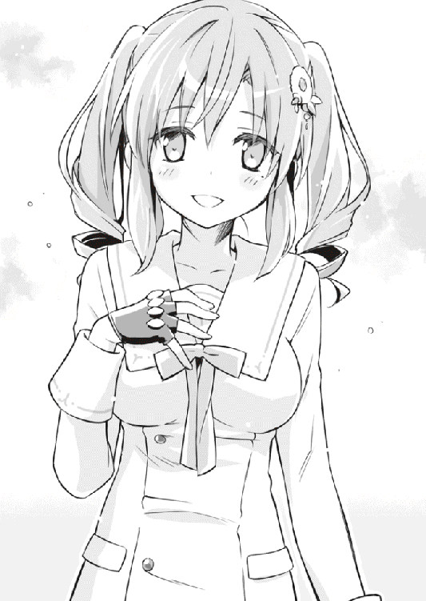
でも彼女は、孝巳を待っていたと言った。ならばもっと嬉しい話だろうか？ いずれにせよ孝巳は、「様」などを付けられるような立派な人間ではないのだが。
「ええと、俺に話ってのは？」
「ぶしつけながら、ご相談したいことがございまして......申し遅れました、私は三塚柘榴と申します。霊導師をしております」
これ以上ない完璧な所作で、三塚柘榴は再び深々と一礼してきた。夕日に赤く染まったツインテールが、フワリと柔らかく揺れる。
「霊導師......」
孝巳の全身に僅かな緊張が走る。
霊導師──霊をあるべき正しき方向へ導く、心霊のエキスパート。
霊の救済・悪用阻止を生業とする彼らは、その全員が強力な霊能者だという。『お笑い研究会』の有働瑠璃と鴫原翠は、まさにその仕事に従事する家の人間だ。
霊導師の力は身をもって知っている。彼女らが起こした天変地異のごとき超常現象を、孝巳は死ぬまで忘れられないだろう。そして、この三塚柘榴なる女性もまた......そんな霊能者の一人だというのか。
「まことに恐縮なのですが、少しだけお時間を頂けませんか」
冬の夜空のように澄んだ瞳で、泣き黒子の美少女は粛然とそう請願した。
三塚柘榴に連れられて来たのは、駅前にあるファミレスだった。
立地条件が良いことから地元で重宝されている店舗で、今も大勢のお客でごった返している。夕食には少し早い時間帯ということもあり、待たされず席に着くことができた。
水を運んできたウェイトレスに、柘榴が「ホットコーヒーをお願い致します」と、丁寧な物腰で告げる。次いで「紺野様、何でもお好きな物を」と言われたので、孝巳はアイスコーヒーを注文した。
下校中の寄り道はあまり誉められたものではないが、よく見れば店内にはポツポツと青鶴高校のブレザーが散見された。たまたま目が合った男子生徒の一人が蒼白になって顔を背けたのを見て、孝巳は暗澹たる心持ちで視線を戻した。
今度は眼前に座る純白の制服の少女と目が合う。彼女は孝巳の瞳を嫣然と見返し、やにわに姿勢を正してかしこまった。
「改めまして、お会いできて光栄です。紺野孝巳様」
慇懃なその態度に恐縮してしまう。孝巳はグラスの水を一つ呷り、無意味な咳払いをしたのちに柘榴に尋ねた。
「あの、どうして俺の名前を？」
「紺野様のご勇名は、今や霊導師の間にも広く知れ渡っております。あの『凶姫』と『鵺御前』を制し、かの有働壮馬様の怨霊を霊導された、未知数の力を持つ逸材であると」
......八月に起こった屋上での一件が、まさかそこまで広まっていたとは。
有働壮馬。それが瑠璃の父親の名前だと聞かされたのは、あの事件の数日後だった。
確かにあの時、孝巳は無我夢中で暴走する彼の怨霊を食い止めた。が、あれはほとんど怪我の功名に近い。もう一度できるものではないし、正直二度とやりたくなかった。
早々に誤解を解いておきたかったが、その前に彼女のセリフの中で引っかかった単語を確認することにする。
「その『凶姫』と『鵺御前』というのは......？」
「我々の世界で、『凶姫』・有働瑠璃様と『鵺御前』・鴫原翠様を知らぬ者はおりません」
さも当然と言わんばかりに、三塚柘榴がにっこり微笑む。
あの二人が霊導師の中でも飛び抜けた力を持つ異才であることは、本人らの口から聞かされている。しかし、『凶姫』に『鵺御前』とは何て大仰な......『ボケその１』と『ボケその２』で充分だと思う。
「そのお二方と渡り合い、今では懇意の間柄であるという紺野様......霊導師の端くれとして、是非とも一度お会いしたいと思っておりました」
「い、いや、俺は別にそんな大層な人間じゃ」
孝巳はたちどころに狼狽し、心の底からそれを否定した。
霊能関係において、紺野孝巳は偶然の産物ながら二つの武器を持っている。《喝破》と《言霊球》だ。
発声によって霊を怯ませる《喝破》と、意思を凝縮したボールによって霊を鎮魂・霊導させる《言霊球》......聞こえはいいが、実はどちらも非常に使い勝手が悪く、デメリットのある霊能だ。どう贔屓目に見ても孝巳は、「未知数の力を持つ逸材」などと評せるような人間じゃない。
「ご謙遜なさる必要はございませんよ」
「い、いや、謙遜じゃなくて本当にそうなんです。俺、全然そんなんじゃ......」
「女性の胸が気になるのは、殿方ならば当然のこと。それだけで紺野様の評価は覆ったりはしません」
「へ......？」
やっぱり気付かれていたか。
嫌な汗をかいて顔を引き攣らせる孝巳を見て、柘榴が赤い革手袋を口に添えて笑った。
「紺野様は、お可愛いですね」
「か、からかわないで下さい。それから、そのことはどうか内密に......」
「承知致しました」
間もなくコーヒーが運ばれてくると、柘榴は砂糖もミルクも入れず、カップを音もなく上品にすすった。何だか一つ一つの仕草が実に洗練されていて格好いい。周囲の男性客がチラチラと盗み見てしまうのも無理はなかった。
「つきましては紺野様に、伏してお頼み申し上げたきことがございます」
カップを置くと、柘榴の顔がこれまで以上に固く引き締まった。
この流れから察するに、おそらく霊関係の相談だろう。正直、気乗りはしない。そっち方面の厄介事には、できれば関わりたくなかった。
が、わざわざ訪ねてきた相手に、聞く耳持たずの門前払いというのも失礼に当たる気がする。できないことならできないと言えばいい。内容によっては、瑠璃や翠に話を取り持つくらいはできるだろう......そう思って身構えた孝巳に浴びせられた言葉は、しかしながらいささか虚を突いた変化球だった。
「紺野様は、頭取さんなる存在をご存知でしょうか」
「と、頭取さん？」
それはつい昨日、瑠璃から仕入れたばかりのタイムリーな話題だった。
廃銀行に潜む、首切り殺人の犯人と噂される怪人・頭取さん。まさかここでその名を聞くことになるとは。
「噂だけは知ってますけど......」
「そうですか。実は、その頭取さんを調査したいと思っているのです」
孝巳は当惑したまま、疑念丸出しのしかめっ面を浮かべてしまった。
グラスの氷が、カタンと一つ音を立てた。
「でもあれは、霊じゃなくて怪人なんじゃ？」
霊導師が頭取さんの調査とは、少し妙だ。霊の可能性は低いと瑠璃も言っていたし、建物自体も特に心霊スポットだったわけじゃない。あの怨霊少女がそう言うのだから、間違いないはずだ。
「その正体を──見極めたいのです」
５
その後。ファミレスを出ると、孝巳は三塚柘榴に請われるまま道案内を務める運びとなってしまった。
自宅とは反対方向の電車に二駅揺られ、おおよその勘を頼りに廃銀行を目指す。実際に行ったことがないので少し遠回りになったが、柘榴は文句も言わず黙々と従ってきた。
すでに日はほとんど沈み、空には大きな満月が薄雲をまとって浮かんでいる。進む道は次第に寂しくなり、前にも後ろにも通行人は一人もいなかった。
暗い歩道に響くのは、孝巳と柘榴の足音のみ。長らく続いたその沈黙に耐え切れず、孝巳は意を決して隣の彼女に話しかけた。
「三塚さんも、霊導師なんですよね？」
柔和な笑みと共に、柘榴が「はい」と従順に頷く。
「私のことは柘榴とお呼び下さい。敬語を使って頂く必要もございません」
気を遣ってくれているのだろうが、それはそれで困る。
向こうが敬語で、しかも様付けなのに、こちらだけタメ口というのは気が引ける。ましてや相手は明らかに年上なのだ。......すると。
「私は高校一年生ですので、紺野様と同学年でございます。お気遣いなきよう」
その予期せぬ発言に、孝巳は思わず「へっ？」と歩を止めた。驚愕に目を剥き、彼女を頭から爪先まで熟視してしまう。
「あんた、高一っ？」
「はい。言い出すきっかけに迷っていたのですが、十六でございます」
冗談を言っているわけではなさそうだ。
絶対に上級生だと思っていた。十六でここまで落ち着いた少女を、孝巳は鴫原翠以外に知らない。否、こちらを手玉に取る余裕と、そこはかとなく漂う色香を慮れば、柘榴はそれ以上に「女性」だ。
すると何だ、自分は同い年の少女にからかわれていたのか。同学年相手に「オッパイをガン見してたの、内緒にして下さい」とお願いしていたのか......今さらながらに顔が熱くなる。
「我が三塚家は代々、関西にて霊導師の役目を果たしております。鴫原家や有働家のように名門ではありませんが......」
孝巳の胸中をよそに、柘榴が語り出す。これまでの言動から分かっている。胸のことで冗談を言ったりもするが、彼女は基本的に真面目な性格なのだろう。
「わざわざ関西から、頭取さんを調べに？」
「少々事情がございまして、個人的にこちらを訪れました。そこで頭取さんの噂を聞き、もしやと」
「三塚さん......三塚は、頭取さんは霊かもしれないと考えてるのか？」
やや抵抗はあったが、孝巳は同年代として彼女に接することにした。本当は向こうにも気安く接してもらいたいのだが、どうもこの物腰は彼女の地のように思える。
「そこまではまだ......ただ、その可能性は高いと考えております」
柘榴がきっぱりと言い放ったとき、前方の坂道に黒く巨大な建物の影が現れた。
頭取さんの住処だという廃銀行は、当たり前だが明かり一つない廃墟だった。
方々で雑草が伸び放題になっており、窓がいくつも割れて辺りにガラス片をばら蒔いている。敷地の入口に張られた「立入禁止」の札がついたロープも、千切れて地面にのたくるように放置されていた。
潰れてからもう半年、すでに管理する人間もいないのかもしれない。
「行こうか」
促されるのを待つことなく、孝巳は先陣を切って建物の中へ足を踏み入れた。
まさか銀行の前まで来て「それじゃあ、お元気で」というわけにもいかない。どのみち探索に付き合わねばならないだろうことは、とっくに覚悟していた。
......高い窓から差し込む月明かりのお陰で、思ったほど内部の視界は悪くなかった。
入るなり現れたのは、ガランとした大きな空間。あちこちにソファーが転がり、筆記台が横倒しになっているが、よくある一般的な銀行の間取りだった。室内は数メートル先で長いカウンターに仕切られており、進むならそこを乗り越える必要があった。
「少し奥へ行ってみましょうか」
耳許で囁いてきた柘榴の小声が、撫でるように頬をくすぐる。同時に桃に似た甘い香りが鼻孔へと届いてきた。
こんな人気のない暗い場所で、あまり身を寄せてくるのはやめて欲しい。こちとらまだ彼女すら出来たことのない白帯なのだ。
──一歩目を踏み出した瞬間。微かな物音と笑い声が二人の耳に届いてきた。
無言で顔を見合わせ、用心深く周囲を見回す。再び上がった物音の方向を見ると、そこに二階へと続く階段があった。
「上、か」
戦慄に身を固くした孝巳に、柘榴が「参りましょう」と提案してきた。一分の迷いもない即断だった。
（この人、怖くないんだろうか）
そりゃ怖がりでは霊導師など務まらないのだろうが、頭取さんはまだ霊と決まったわけじゃない。いるのはタチの悪い人間の可能性だってある。この世の中、死者より恐ろしい生者などたくさんいるのだ。
とはいえ、ここでゴネてしまうと柘榴は一人で行ってしまうだろう。いかに霊導師でも、いかに大人びていようと、彼女は十六の女の子だ。やはり単身では行かせられない。
「俺が前を歩く。三塚は後ろを注意しててくれ」
従者のごとく「はっ」と頷いた柘榴を背に、ゆっくりと階段を上っていく。
......成り行きとはいえ、何だか妙なことになってしまった。
大体、過度に期待されても困る。孝巳は何の修練も積んでいない、一般人に毛が生えた程度の存在だ。もしも相手が怨霊だったときは、悪いが柘榴に頼らせてもらうしかない。
（結局、また首を突っ込んじまったか）
小さな踊り場を折り返すと、すぐ数段先に二階フロアがあった。
暗さは一階とさほど変わらないようだ。ここからではまだ全容は見えないが、そこに明らかに人の気配がする。
もはや仕方ない。孝巳は開き直るように気合いを入れ、一気に階段を上がり切った。
「あん？ 何だテメェら」
辿り着いたフロアは、六メートル四方ほどのロビーのような空間だった。前方と右方に長い通路が伸びており、両方とも奥は暗闇に閉ざされていてよく見えない。
ロビーには、二人の若者がいた。
黄色いジャージを着た丸坊主の男と、キャップを真横に被ったパーカーの男。どちらも缶ビールを片手にしゃがみ込み、口に煙草をくわえていた。
「おいおい兄ちゃん、不法侵入はいけねーだろ。ここは立入禁止だぞ？」
「おっ、いいオンナ連れてるじゃん！」
二人の視線が後方の柘榴に注がれ、たちまち喜色に輝く。
「ははん、なるほど。ホテル代を浮かそうって考えたわけね」
ニヤニヤと笑いつつ、缶と吸い殻を捨てて二人が立ち上がった。
幽霊や頭取さんじゃなかったのはいいが、これはこれで始末に悪い。やっぱり柘榴を一人で行かせなくて正解だったようだ。
「なあ兄ちゃん、俺らも混ぜてくんねぇ？ ここで会ったのも何かの縁ってことで」
下卑た調子で言いながら、二人組が孝巳の前に立つ。間近で見ると、さほど年上ではないようだった。高校生かは分からないが、おそらく孝巳たちと変わらない年齢だろう。
「......あんたら、頭取さんの見物人か？」
彼らの申し出を無視して、孝巳は単刀直入に尋ねた。
「あ？ 見物っつーか、ボコりに来たんだよ。正体拝んで、小遣いでも貰おうかってな......ていうかテメェ、何タメ口利いてんだ？ お前からも小遣い貰ってやろうか？」
凄んだ丸坊主男が、早速孝巳の胸ぐらを掴んでくる。その後ろでキャップ男が愉快げにほくそ笑んでいた。
「紺野様」
「三塚は下がってろ」
不安げに名を呼んできた柘榴に片手を振り、下がるよう指示する。不本意だが、相手がチンピラなら対応は孝巳の役割だ。
（できるなら話し合いで穏便に解決したいところだが......）
キャップ男の方はヒョロリとした痩せ型だが、目の前の丸坊主は筋肉質でいかにも頑強そうだ。これだけ好戦的なところを見ると、それなりに喧嘩の自信があるのだろう。
「ん？ 紺野？ ......おい待て！ まさかそいつ！」
孝巳の名前を聞くなり、何故かキャップ男が顔色を変えた。やけに取り乱し、食い入るように孝巳の制服を刮目している。
「まさか、青高の紺野孝巳か？」
「青高？ どこよ」
胡乱に片眉を下げた丸坊主に、キャップ男が喚くように言い募った。狭いロビーに甲高い声が反響する。
「馬っ鹿、青鶴高校だ！ 武本さんのガッコだろうが！」
「武本さんの？」
思いがけず挙がったその名前は、孝巳の知っている人物のものだった。
武本京也は、青鶴高校の三年生だ。かつては素行のよろしくない生徒たちで徒党を組んでおり、学校内外で幅を利かせる有名人だった。夏に起こった事件で色々とあり、孝巳は少なからず面識がある。
「で、武本さんが何だってんだよ。同じガッコとか別に関係ねぇだろ」
孝巳の胸ぐらを掴んだまま、丸坊主男が面倒臭そうに吐き捨てる。
「馬っ鹿、お前知らねぇのか！ この前、武本さん入院してたろ！ ありゃ紺野孝巳にやられたんだよ！」
捲し立てるキャップ男に、丸坊主男が顔をしかめた。その眼前で、孝巳もまた顔をしかめていた。
「武本さん、言ってたろうが！ 『ウチの紺野孝巳に絡むのはやめとけ』って！ あの武本さんがビビッてんだよ！ マジモンのスジモンなんだよ！」
「そ、それがこの無造作ヘアーだってのか？」
鼻白みながらようやく手を放した丸坊主に、孝巳は「ほっといてくれ」と髪をグシャリと掻き回した。
確かにかつて孝巳は、武本と喧嘩をやらかした。そのことは深く反省している。こんな奴らの耳にまで入っているとは......噂とはつくづく怖いものだ。
「あんたら、武本さんの知り合いか。だったら頼む、大人しく帰ってくれ」
とりあえず頭を下げてみると、二人は元いた位置まで下がり、何やらボソボソと密談を始めた。狭いロビーなので、丸聞こえだった。
「おい、どうする？ こっちは二人いるんだ、何とかなるんじゃ......」
「馬っ鹿、武本さんを半殺しにした奴だぞ！ あの『狂犬』武本を一方的にボコった挙げ句、笑いながら屋上から突き落とした男だぞ！」
「そ、そんなにヤベぇのか？」
「他にも噂は色々聞いてる。中学の頃に全国の学校シメたとか、新聞にも何度か載ったとか、本職からも注目されてたとか」
「マ、マジかよ......」
「紺野孝巳が何て呼ばれてるか知ってるか？ 『人間魚雷』だぞ！ その恐ろしさの想像もつかねぇよ！」
すかさず柘榴に向けて「誤解だからな」と弁解しておく。
それにしても『狂犬』とか『人間魚雷』というくだらないアダ名は、一体誰が考えたものなのか......そんな思いに辟易して嘆息した瞬間。
「紺野様！」
いきなり背後で柘榴が叫びを上げたので、孝巳はビクリと背筋を伸ばしてしまった。
何事かと振り向くと、彼女は異様に鋭い眼光で右方の通路を見据えていた。
「ど、どうした──」
言い終わる前に、孝巳の耳はその音を聞いていた。
それは、遠い通路から近付いてくる足音だった。
トットト、トットトと、やけに不規則な靴音が段々こちらへ迫ってきている。何だか酔っ払いの千鳥足のような足取りだった。
二人組も足音に気付いたらしく、「何だ？」と通路の暗闇へ目を凝らしていた。
この奥がどうなっているのかなど、もちろん孝巳は知らない。向こう側にも階段があるのかもしれないし、そもそも二人組よりも前に先客がいたのかもしれない。
現状で分かることは、まず足音が一人分だということ。二人組の様子から、彼らの仲間ではないということ。そして......柘榴がやけに警戒しているということだけだった。
（まさか、頭取さん......？）
全身を粟立たせる孝巳の、視線の先にある暗黒。程なくしてそこに、一つの人影が浮かび上がった。
やけに縦長の、細いシルエットだ。それが不自然なまでに左右に揺れながら、ゆっくりと向かってくる。
四人の見守る中、ロビーに姿を現したのは──虚ろな目をした中年の男だった。
６
足音の正体は、顔色の悪い、病的に痩せこけた男だった。
孝巳よりもボサボサに乱れた頭髪に、焦点の定まらない濁った両眼。だらしなく半開きになった口は、唇が真っ青だ。時節柄まだ早いヨレヨレの薄汚れたロングコートを着ており、中から背広とネクタイが垣間見えていた。
唐突に登場した男に動転しつつも、孝巳は注意深くその姿を観察した。
（足が、ある）
それに体が透過していない。これまで孝巳が見てきた霊は、人間も動物も一様に足がなく体が透けていた。ならばこの男は、少なくとも霊ではない。
「おいコラ。テメェが頭取さんか？」
張り詰めた空気の中、やがて丸坊主が気勢を取り戻し、孝巳たちを追い越してズイと進み出た。顎をしゃくり上げ、堂に入った睨みで男を威圧する。
「イカレた殺人犯だっていうからどんな奴かと思ったら......おう、何とか言えコラ！」
その恫喝が聞こえているのかいないのか、中年男は無反応のままぼんやりと宙を見詰めるだけだった。どうも意識がはっきりしていないように見える。もしや、薬物か何かの中毒者だろうか？
「テメ......舐めてんじゃねぇぞ！」
ひたすら反応を示さない相手に痺れを切らした丸坊主が、大股で詰め寄り胸ぐらに手を伸ばす。
その瞬間、ようやく中年が動いた。
緩慢な動作で丸坊主の手首を掴むと、次いで両手をグルリと回す。体勢を崩されまいと踏ん張った丸坊主の腕が、ボキリと嫌な音を立ててあらぬ方向に折れ曲がった。
「ぎ......！」
悲鳴を待たず、中年の片手が丸坊主の左耳を摘まむ。そのまま指をひねり、彼はチーズでも裂くようにその耳をブチブチと引き千切り始めた。
「ぎゃあああああ！」
自身に降りかかった非常事態に、丸坊主が半狂乱で暴れ出した。
その絶叫とほぼ同時に、孝巳は走っていた。
中年の両手を殴るように払いのけ、ロングコートを突き飛ばす。直後、パン！ という何かが弾けたような破裂音と共に床を転がったのは、孝巳の方だった。
「な、何？」
もつれるように丸坊主もろとも倒れた孝巳は、即座に上体を起こし中年を瞠目した。
腕の骨が軋みを上げていた。さながらコンクリートの壁を思いきり押してしまったような感覚だ。
中年男は依然としてその場に佇立し、万事を上の空にただ小さく揺れていた。その目は足下の孝巳たちにも、指先についた返り血にも、一切向けられることはなかった。
「ひ、ひぃ！」
後方でキャップ男が腰を抜かす気配を感じつつ、とにかく丸坊主を引きずって中年男から離れる。気を失ってしまったのか、ずんぐりとした図体は予想以上の重量があった。
（今の感覚......）
まるで見えない障壁に阻まれたような手応えと、謎の破裂音──それらと似た現象を孝巳は知っていた。
脳裏に蘇ったのは、有働瑠璃の姿。鴫原翠と対決したとき、彼女は敵の攻撃を見えない壁とラップ音で防いでいた。
（確か、《空礫》とか言ったか？）
霊が発するラップ音を応用した、霊気の小爆発。あれは瑠璃に憑いている怨霊が起こしたものだったはず。ならばこの中年男は、瑠璃と同じ「怨霊持ち」の人間か？ 憑いた霊たちが、敵の攻撃から彼の身を守ったということか？
中年男に動きはない。こちらに敵意があるのかすら定かではない。
とにかく、この中年をこのままにはしておけない。こいつは危険だ。頭取さんである可能性も高い。何やら朦朧としている今のうちに、機先を制すべきだ。
（霊なら《喝破》が効くかも......）
相手が怨霊を使うなら、孝巳の《喝破》によってそいつを怯ませることができるかもしれない。やってみる価値はあるだろう。
ただし、孝巳がそれを発動させるには、一つの問題がある。《喝破》とは言霊。すなわち魂の叫び。孝巳はそれを一定の条件でしか発動できないのだ。
「......この中で今、ボケられる奴はいるか？」
後ろに声をかけてみたが、柘榴とキャップ男からの返事はなかった。
分かっている。この状況でそれを求めることが、どれだけ馬鹿げているかなど。こんな場面でボケられるのは、非常識な、お笑い好きな、何かが欠落した人間ぐらいだろう。
しかし、孝巳の《喝破》はツッコミでなければ発動しない。もちろん、今さら瑠璃を呼んでいる時間もない。状況は切迫しているのだ。
丸坊主を置いて立ち上がり、チラリと柘榴に視線をやる。
しかし彼女は何ら動く様子はなく、ただじっと中年男を観察しているだけだった。傍らではキャップ男がへたり込んだまま、涙を流して震え上がっている。
どういうつもりかは分からないが、柘榴には対応しようとする気配が全く見えない。まさか彼女は、まだ孝巳を凄腕の霊導師だと勘違いしているのではなかろうか。
（仕方ない）
丸坊主を早く病院へ連れていくためにも、まごついてはいられない。今この場で動ける者が孝巳だけなら、イチかバチかやるしかない。......あまり気は進まないのだが。
「もう一度訊くが、あんたが頭取さんか？」
腹を決めて一歩踏み出し、孝巳は咳払いののちに言い放った。
「頭取さんはゴム皮のマスクを被ってるって話だが......普通に素顔だな」
対話は一向に成立しない。しかし孝巳は構わず続ける。
「もしかして、本当にこの銀行の頭取さんか？ ここは怨霊の融資でも始めたのか？ いや、それよりも気になるのは......最近の銀行って、こんな遅くまで営業してるのか？ って、そこはどうでもいい！」
中年男が微弱に反応したのを、孝巳は見逃さなかった。
今、明らかに《喝破》が成功した。どうやら上手くいったようだ。
これが、事態を打開するために孝巳が閃いた苦肉の策。ボケがいないなら、そちらも兼務する──セルフのボケツッコミだった。
「とにかく、あんたと取り引きがしたい。俺たちは一刻も早くここを出たいんだ。あんたはどうしたいんだ？ 俺を殺したいのか？ よし、ならそこの窓から飛び降りて、頭を強く打つことにする。多分死ぬから、それで取り引き成立......するか馬鹿！」
男の反応が小さい。つまりスベった。否、ボケへの自信のなさがツッコミを曇らせたのだ。迷うな、恥を捨てろ！
「分かった。とりあえず一服して、お互い落ち着こう。......なあキャップのあんた、さっき煙草吸ってたよな？ 悪いが二本貰えないか？ え、もうない？ そりゃ仕方ないな」
俺は一体、この状況で何をやっているんだろうか。冷静さを取り戻そうとする心を組み伏せ、孝巳はがむしゃらに漫談を続行した。
「じゃあ三塚、オッパイ二つ持ってたよな？ 悪いが俺の大好物でもあるその推定Ｇカップ、煙草の代わりに吸わせて......最低人間か俺は！」
中年男がビクリとして、初めてこちらを向いた。如実に怯みつつある。もう一息か。
「......取り乱してすまない。つい下心が滲み出てしまった。話を戻すが、あんたと揉める気はないし、揉む気もないんだ。今日のところは胸に収めないか？ それがお互いにバストな選択......下心が滲み出まくりだ！ どんだけオッパイ好きなんだ俺！」
孝巳の咆哮に、とうとう中年が数歩後退した。
今さらなのだが、彼自身がああも《喝破》に反応しているのはどういうことだろうか。怨霊の尻込みが彼にリンクしているのだろうか？
いずれにせよ、この機を逃すわけにいかない。今のうちに銀行の外へ退避するべきだ。そう考え、階段の方向を振り返った瞬間。
──孝巳の脇を誰かが通り過ぎた。
柘榴かと思ったが、視界の端に捉えたのは黄色いジャージだった。
「え......？」
再び顔を前に戻すと、中年男に体当たりをした丸坊主が見えた。
驚いたことに、それは気絶していたはずの彼だった。その突進はやはり障壁に阻まれたものの、それでも中年男にたたらを踏ませることに成功していた。
（何てタフな奴だ！）
いきなり復活し、あれだけの目に遭わされてなお向かっていくとは。並々ならぬ根性だ。
感嘆を漏らしたものの、すぐに我に返る。丸坊主の負傷は軽くない。片腕が折れ、耳が千切れかかっているのだ。
リベンジなどやらせている場合じゃない。何とか彼を連れ戻し、ここは退くべきだ......そう判断した孝巳の踵が、足下の何かにドスンとぶつかった。
「ん？」
目を落とすと、地面に黄色いジャージが横たわっていた。丸坊主男が、そこで相変わらず気を失っていた。
仰天して前方を窺うと、そこにいたのは中年男だけだった。突っかかっていったと思われた丸坊主の姿は、どこにもなかった。どういうことだ？ 幻覚を見たのか？
「──差し出がましいとは思いましたが、ご助勢させて頂きました」
背後で柘榴の声がして、孝巳はまた振り返ることになった。
いつの間にか側までやってきていた彼女が、慎ましく一礼してくる。続き冷然と中年を睨んだその瞳は、気のせいか鮮やかな深紅に染まっているように見えた。
「生邪魔、落トソカ」
ボソリと柘榴が呟く。意味のよく分からない、呪文めいた言葉だった。
すると途端に中年男が身を翻した。現れたときと同様、トットト、トットトと覚束ない足取りで、逃げるように通路を引き返していく。
柘榴は特に追う様子もなく、呆然としている孝巳に向き直ると、豊かな胸に片手を当てて再びお辞儀した。
「紺野様、私の目的は果たせました。一度退きましょう」
「え？ あ、ああ」
孝巳は戸惑いながらも頷くと、柘榴の手を借りて丸坊主を背負った。そこまではよかったのだが、キャップ男までもが腰を抜かして動けないと言うので、さらに彼に肩を貸すこととなった。
正直、それが今夜の一番の大仕事だった。
その後。銀行の外まで何とか戻ってくると、柘榴が携帯でタクシーを呼んでくれた。
やってきた車に丸坊主を押し込み、同乗させたキャップ男に病院へ連れていくよう頼む。
救急車を呼んでもよかったのだが、あまり銀行前で目立っては、また頭取さんの噂が広まってしまいかねない。訪れる野次馬がこれ以上増えるのは危険だった。
「今日見たことは忘れてくれ。お前たちは銀行には来ていない。俺たちとも会ってない。いいな？」
最後に念を押すと、キャップ男は涙目で何度も頷いていた。
タクシーのテールライトが道に消えていくと、孝巳と柘榴も歩き出す。
......何だかんだで、非常に疲れた。あの二人を担いだお陰で、また右肩の痛みがぶり返している。ここ最近、こんなのばっかりだ。
（結局、病院に行くどころかまた肩を酷使しちまった）
吐息を漏らした孝巳に、柘榴が「今日はありがとうございました」と横から謝辞を述べてきた。思わず見入ってしまうような、可憐で楚々とした微笑みだった。
「いや、いいんだ」
「さすがは紺野様。見事な《喝破》でございました」
あまり触れて欲しくない部分を称揚され、顔が熱を帯びていく。
予想以上に恥ずかしい。できれば見せたくなかった姿だ。彼女にも言っておくべきだろうか、「今日見たことは忘れてくれ」と。
「三塚。結局お前の目的って何だったんだ」
「無論、頭取さんの存在、そして正体を確認することでした。頭取さんかどうかはともかく、少なくともあの殿方は私の......生邪魔屋の領分であるようです」
「イチジャマヤ？」
そういえば、さっきもそんな単語を言っていた。聞いたことのない響きだ。霊導師の専門用語だろうか？
月下の夜道に、二人の足音だけが鳴り渡る。
ふと夜風が吹きつけ、柘榴の前髪を揺らした。彼女は素早くオープンフィンガーの右手で額を押さえつけると、うつむき加減に地面を見詰めたまま小声で呟いた。
「生邪魔屋というのは、三塚家の別称、いえ蔑称です。あまりお気になさらず」
口振りからして、あまり語りたくないようだ。だから孝巳は、それ以上追及することができなかった。
あの時、丸坊主が二人同時に存在していたように思えたのだが、あれは一体何だったのだろうか......せめてそれだけでも確認しておくべきだったと悔やんだのは、かなりあとのことだった。
やがて駅前まで戻ってくると、そこで柘榴と別れることになった。
「では紺野様、帰路お気をつけて」
「ああ、それじゃあな」
また会うことがあるかは分からないが、この三塚柘榴という大人びた少女を孝巳は少しだけ気に入っていた。
別に下心があるわけじゃない。その誠実で真面目な人柄に好感を持ったのだ。何より孝巳にとって彼女の最大の魅力は、「必要以上にボケたがらない」ということだ。
そんなことを思っていると、去り際に柘榴が不意打ちの言葉をよこしてきた。
「ちなみに、私はＦカップでございます」
「............」
「紺野様のお好みには、ワンカップ足りませんね」
「酒じゃないんだから......あれはあくまでネタだ、真に受けないでくれ」
失望を込めて突っ込むと、柘榴は口許を押さえておかしそうにクスクスと笑った。
その様はやっぱり奥ゆかしく上品だったが、同時にどこか等身大の女の子らしい可愛らしさも感じさせた。
第二章 廃銀行の頭取さん
１
翌日。
放課後になると孝巳は真っ直ぐ部室へ向かい、廃銀行での一件を瑠璃に報告した。
前後の経緯をはしょって、頭取さんとおぼしき中年男の部分だけを説明したのだが、瑠璃は「ふぅん」とあからさまに気のない返事をよこすだけだった。
「もう少し興味持ってもいいんじゃないのか？ 俺に頭取さんの話をしたのはお前だぞ」
孝巳にとって昨夜の出来事は、久し振りに出くわした超常体験だったのだ。労いか慰めの一言くらいかけてくれても罰は当たるまい。
しかし瑠璃は机に広げたノートをしかめっ面で見据えつつ、ひたすら素っ気ない生返事に終始する。チラリと一度こちらを瞥見した目は、蚊を見るように疎ましげだった。
「そんなアブノーマルな不審者はどうでもいいよ。言ったろ？ あれはただの世間話だって。私はネタ作りに忙しいんだ」
今日はノートの横にボックスティッシュが三箱も積まれている。風邪で具合が悪いのなら、家で作業すればいいのだ。そうすればこっちだって放課後を自由に使えるのに。
孝巳はめげずに、半ば意地になって話を続けた。
「あの中年男は、やっぱり霊じゃなくて生きた人間だと思う」
「ふぅん」
「体が透けてなかったし、足もあったからな」
「へぇ」
「ただ......様子がおかしかった」
廃人のような目に、土気色の顔。《喝破》に反応したこともそうだ。あの男は、どうにも生きた人間らしく見えなかった。孝巳の記憶に沿えば、彼の印象は霊のそれに近い。
（そうだ。山根由香子に似てるんだ）
かつてある人間の守護霊だった、三つ編みの少女霊......それがあの中年男に最も類似した姿だ。自我のない傀儡のような、催眠術でも施されているような、そんな不自然な雰囲気があの男にはあった。
「結局のところ、三塚も何も教えてくれなかったし......」
ほとんど独り言だったのだが、いきなり瑠璃が「三塚？」と復唱してようやくまともにこちらを窺ってきた。
「ああ、三塚柘榴だ。そもそも俺が廃銀行なんかに行ったのは、その三塚に同行を頼まれたからだ。頭取さんのことを調べたい、ってさ」
「柘榴が来てるのかい？」
やけに食いついてきた。大きな黒目を、意外そうに何度もパチパチと瞬かせている。制服ブレザーは少しサイズが大きいのか、袖口が指先までをすっぽり覆っていた。
「お前、三塚を知ってるのか？」
「これでも元・霊導師だからね。昔に何度か顔を合わせたことがある。当時は年の近い子供たちを集めて合同修行があったんだ」
瑠璃がシャーペンを置いて、いよいよ体ごと向き直る。ヒョイと組んだ白い足は、スカート丈が短いせいで正直かなり際どかった。それが風邪の原因ではないだろうか。
（考えてみりゃ、三塚が有働を知ってたんだから、その逆だってあり得るか）
三塚柘榴がそうであるように、有働瑠璃もまた霊導師の家系の少女だ。しかも一時期はその才能を高く評価された、将来有望な器だったという。
（『凶姫』、って言ってたか）
しかしながら、現在の瑠璃は霊導師ではない。父親の霊の成仏を妨げ、さらには幽鬼という大怨霊を六体も従えている彼女は、その肩書きを剥奪されているらしい。
まあ、霊導師の仕事を考えれば、当然の沙汰なのかもしれない。本人は特に気にしている様子はないみたいだが。
孝巳の思考をよそに、椅子を一つ挟んだ場所で、瑠璃が何やら合点したようにコクコク頷いている。天井の蛍光灯を受けて、黒髪の光輪も一緒に上下していた。
「なるほど、それで分かった。君が言った不審者っていうのは生邪魔なんだね。なら足があるのも当然だ」
生邪魔。その言葉自体はすでに知っている。が、詳しいデータは皆無だ。
柘榴はそれを、自分の領分だと言った。霊導師の領分ということは、やはりあの中年男は霊の一種ということだろうか。体が透けていないどころか足音まで立ててやってくる霊など、孝巳の知識には存在しないのだが。
「その生邪魔ってのは何なんだ」
尋ねると、瑠璃はあっさり「生霊のことだよ」と言った。
「生霊って名称くらいは聞いたことあるだろう？ 幽霊になるのは何も死者だけじゃない。そもそも幽霊とは、『死霊』と『生霊』の両方を指すものだ」
語りつつ、瑠璃がティッシュを数枚抜いてズビビと鼻をかむ。よく見れば、足下のゴミ箱はすでにティッシュで溢れ返っていた。象のジョウロじゃあるまいし、どれだけ鼻水を出しているんだ。
「『生きている幽霊』という言葉は、別に矛盾でも何でもない。生者の魂だって幽霊になる。死者のそれと違うのは、そこに至る経緯だ」
「経緯？」
かつて瑠璃から受けた霊の講釈を思い出す。
死霊とは、死んだ人間の魂が生者に引き留められ、成仏を妨げられた存在のことだ。彼らが何故この世に留まってしまったのか......それを決めるのは全て生者たちだ。
恨みや怒りなど「負の意思」を与えられた魂は怨霊に、逆に使命や庇護など「正の意思」を与えられた魂は守護霊になる。その存在理由が強固で明確なほど、霊は強力になる。付け加えるなら、生前の本人や意思を与えた者の霊感も強さには関係するらしいのだが......とにかくそれが孝巳の知る、霊の基本概要だ。
「死霊と生霊で、何の違いがあるんだ？」
「生霊ってのは、存在理由を自ら確立させている霊なんだ。死霊のようにわざわざ他人から与えられなくても、彼らは霊たる理由をすでに持っているのさ」
「すでに持ってる？」
「霊の意思は生者が決める......その大原則は今さら言うまでもないよね？ 彼らはまだ生きているから、それを自力で行えるんだ。言うなればセルフ幽霊だね」
「それがあの頭取さんだってのか？ あれが、霊体......？」
「そのオジサンが本当に頭取さんならね」
そのセルフ幽霊に対し、孝巳はセルフツッコミで応戦したことになる。そう考えると何だか間抜けな話だ。
「そんなだから、生霊には厄介な手合いが多い。存在理由が明確な分、実体化の割合も高く、力も強い。足だって普通にある。飾りじゃない」
「それが生霊......生邪魔か」
「うん。一般では生邪魔なんて呼び方は、沖縄くらいでしかされてないけどね。で、そんな生邪魔の霊導を専門にしているのが、柘榴のとこの三塚家だ。霊導業界では、彼らを生邪魔屋と呼んでいる」
「霊導業界って......」
霊導師には、古くよりその役目を担ってきた血脈があるという。翠の鴫原家や、瑠璃の有働家がそうだ。そして三塚家もまた、そんな霊導師の一族ということか。
「三塚柘榴は、『生邪魔屋は蔑称だ』と言ってたけど、どういうことなんだ？」
「ああ、そういやそんな風潮があったね。生邪魔屋の霊導は少し特殊だから、周りから敬遠されてるんだ。でも、私はそういう偏見は嫌いだ。くだらない差別意識には吐き気がするよ。......それより紺野くん」
突然口調を改め、瑠璃がズイと身を乗り出してきた。
何だかやけに真剣な表情をしている。その態度に気圧され、孝巳は無意識に両拳を強く握り締めていた。頭上のどこかで、蛍光灯がジジッと小さく鳴ったのが聞こえた。
「君、柘榴を見てどう思った？」
「ど、どうって？」
「重要なことだ。彼女の言動の中で、何か気になることはなかったかい？」
そりゃ、確かに謎の多い少女だった。しかし、特に怪しい人間だとも思わなかった。
頭取さんを調べに来たのも生邪魔だと睨んだからだろうし、孝巳に接触してきたのも尾ヒレのついた噂を信じてしまったからだろう。気になる点など「胸はＦカップらしい」ということぐらいだが、もちろんここで言えるはずもない。
答えあぐねていると、瑠璃が「ブシッ！ ブシッ！」とクシャミをした。
すかさず身をひねって、机上のボックスティッシュに彼女の手が伸びる。やがて再びクルリとこちらを向いた鼻の両穴には、丸めたティッシュが詰め込まれていた。......こいつは見た目だけは可愛いのに、何故いつもこうアレなのだろうか。
孝巳の返答を待ちかねたのか、瑠璃が口を開いた。
「三塚家は、関西を拠点にしている霊導師だ」
それは本人から聞いた。
「関西だよ、関西」
「............」
「言いたまえ。柘榴が発したボケの全内容を」
「別にあいつはボケてねえよ！」
呆れ果てながらも突っ込んでしまう。こいつが興味を示すのは、結局そっちか。
「馬鹿な。ボケない関西人などいるわけがない。それはウドンを食べない香川県民と同じだ。そんなふざけた存在がいると思うのかい？」
「偏見全開じゃねぇか！」
孝巳の叫びを無視して、瑠璃がさらに身を乗り出しフンと鼻息を荒らげる。詰められたティッシュが、勢いよくポンポンと飛び出した。
「万物にはあるべき姿というものがあるんだよ。鳥が飛ぶように、魚が泳ぐように、関西人とはボケるものだ。それは太古からの自然の摂理だ」
「その壮大な差別意識を何とかしろ！」
「なら問おう。亀田兄弟が敬語を使い出したとき、君はどう思った？」
「どうもしない！」
「君は今週から、ルフィがベレー帽を被っていたらどう思う？」
「どうもしない！ 少し戸惑うだけだ！」
「君は今週から、サトシがモンスター狩りを始めたらどう思う？ 黄色いネズミの肉をこんがり焼き始めたらどう思う？」
「一旦仕切り直せ！ その方向で膨らますのは限界だ！」
手を突き出して不毛この上ないやり取りを打ち切ると、脱線した会話を軌道修正すべく一つ咳払いをする。こんな話をしたかったわけじゃない。
「とにかく、あの中年男をこのまま放置するのは危険だ」
もし孝巳と柘榴がいなければ、あの二人組はもっと酷い怪我をしていたかもしれない。否、もしあの生邪魔こそが頭取さんならば、第二第三の殺人が起こっていた可能性だってある。関わってしまった以上は、放ってはおけない。
すると、そんな孝巳の思考を読んだように、カッパ少女が負けじと呆れ返してきた。
「また首を突っ込む気かい？ 悪いけど、私はお断りだよ。生邪魔は専門外だ」
生者至上主義の彼女は、死者の霊を驚くほどぞんざいに扱う。「死んだ聖人君子より、生きている悪人罪人の方がまだ偉い」とまで言い切る、生粋の死霊差別者なのだ。まだ本人が生きている生霊への対応が苦手なのは、考えてみれば当然かもしれない。
「でも、あの銀行では実際に殺人が起こってるんだぞ。仮に頭取さんがただの噂だとしても、あそこに中年の生邪魔がいることは間違いないんだ。相手が霊だってんなら、警察じゃなくて霊導師の出番だろ」
「君の見た生邪魔オジサンが殺人犯である確証は、今のところ何もない。中途半端に介入すれば事態を悪化させることになる......いい加減に学習したまえ」
反論の余地が微塵もない。孝巳にはその前科があった。
「そもそも、私は霊導師でも何でもない。ただのＣカップ女子高生だ。多くを求められても困るよ」
「さりげなく盛るんじゃない」
「......うるさいな。とにかく、その件は警察と柘榴に任せておけばいい」
両手で胸を隠してブスリとむくれた瑠璃に、孝巳はなおも食い下がった。
「あの銀行が危険なのは事実だろ？ 遊び半分で来る人間も増えてるんだ。三塚だって、一人じゃ手に負えないから俺に相談しに来たんじゃないのか？」
「柘榴は専門家だよ？ 生邪魔に関して、三塚の右に出る霊導師はいない。それに」
瑠璃がまたもズビーッと鼻をかむ。すでに鼻頭は真っ赤になっていた。
「ご覧の通り風邪気味なんだ。今の状態じゃ、私は《怨団化製作》を満足に使えない」
「......あの骸骨か」
彼女が言った《怨団化製作》とは、孝巳が知る限り有働瑠璃の最大の霊能だ。
ふざけたネーミングではあるが、実態はとても笑える代物じゃない。自身に憑いている六体の幽鬼を強引に融合させ、一つの巨大な骸骨にしてしまうという、究極の霊の悪用方法なのだ。しかもその「六黒」なる合体幽鬼が吐き出す霊気の波動砲は、数キロ先の山まで届くデタラメな射程距離を持つ。その凄まじさは、孝巳も目の当たりにしている。
「どうでもいい生邪魔トークで貴重な時間をロスしてしまった。本業に戻らないと」
そう言って勝手に話を強制終了させると、瑠璃はそそくさと執筆作業に戻ってしまった。鼻をスピスピ鳴らしながら、カリカリと一心不乱にペンを走らせていく。気分転換したことで筆が乗り始めたようだ。
「ウフフ、調子が出てきた。みんなの爆笑する顔が目に浮かぶようだ。いずれファンクラブを創設する必要があるかもしれない」
「ねえよ」
「ステージを観に来ていた秋元的なプロデューサーに、スカウトとかされたらどうしよう。とりあえず名刺だけ貰っておいて......」
「ねえっての」
孝巳の横槍すら無視して、彼女は締まりのない顔でブツブツ言いながら台本作りに没頭している。傍から見ると完全に危ない人だった。
「紺野くん、総選挙の際は是非とも私に票を入れたまえ。ウフ、ウフフフ......あ、蝶々」
「お前、ちょっと休んだ方がいいぞ」
その意欲には感服するが、若干心配になってくる。もしや風邪じゃなくて、もっとヤバい病気なのでは......
孝巳がそんな懸念を抱いていると、不意に部室の扉がカラカラと開いた。
「......お」
目を向けた先に立っていたのは、ブレザーを着た長身の少女だった。
流れるようなロングストレート、一分も乱れなく着こなした制服、スカート丈はぴったり膝上５センチ。
「その一件、私に預けてちょうだい」
当研究会の副部長・鴫原翠は、現れるなり挨拶もなくそう告げてきた。
２
「な、何のことだ？」
翠の指す「その一件」が分からず、孝巳は困惑しつつ説明を求めた。
もうすっかり慣れたつもりでいたが、こうして真っ向から見詰められるとやっぱり心なしか緊張してしまう。夏休みは毎日のように二人で会っていたのに......己の女子に対する免疫の低さが、つくづく不甲斐なかった。
そんな孝巳とは逆に、翠は堂々たる態度で淡々と話を進めた。
「頭取さんのことよ。今その話をしていたでしょう？ 廊下で全て聞かせてもらったわ」
立ち聞きしてないで入ってこいよと言いたかったが、彼女の無駄な威厳に圧されて何も言えなかった。学校一の美人と謳われながら彼氏どころか友達すら満足にいないのも、この高校一年らしからぬ貫禄のせいだろう。
「珍しいじゃないか。二日と置かず顔を出すなんて」
いつの間にやらトリップから帰還していた瑠璃が、ジロリと翠を睥睨する。たった一言そんな嫌味を発すると、彼女はまたプイと執筆作業に戻ってしまった。
「副部長だもの。そんなことより......」
澄ましたまま肩口の髪を払い、翠が改めてこちらに目を向けた。その力強い眼差しに、意味もなく謝ってしまいそうになる。
「紺野くん。貴方が言った頭取さんの一件、おそらく私のゴタゴタと無関係ではないわ」
「どういうことだ？」
問いに答える代わりに、翠がつかつかと近付いてくる。仁王立ちで見下ろすと、続いて彼女は孝巳の鞄を勝手に拾い上げ、グイと押しつけてきた。
「それは後ほど話すわ。さあ、早く行きましょう」
「ど、どこに？」
「決まっているでしょう。カラオケよ」
「寝耳に水だ！」
鞄を持ち椅子を立ったところで、孝巳はようやく翠に従うのをやめて一喝した。
「また練習に付き合ってくれると言ったはずよ。あれは嘘だったの？」
「そうじゃなくて、この流れでそれはおかしいだろ！」
「もう限界なの。禁断症状で貴方がマイクに見えているもの」
「サイズが全然違う！」
「英語の教科書のトムとデヴィッドもマイクに見えていたわ」
「ややこしいボケはやめろ！」
長髪の霊導師が堰を切ったようにボケを連ねてくる。よく分からないが、何やらストレスが溜まっているのだけは理解できた。
「いいから一旦整理させてくれ！ 頭取さんのことからだ」
隣のパイプ椅子を引き、ひとまず座るよう促す。
しかし翠は頑として首を振り、美しい顔をぷくっと膨れっ面にした。
「早くしないと、サービス料金の時間が過ぎてしまうわ」
「こっちの話の方が、何倍も大事だろ？ お前は頭取さんの何を知ってるんだ？」
「だからそれは後ほど、唄いながら話すわ」
「普通にここで話せ！」
そんなやり取りを続けていると、後ろから「待ちたまえ」と、ことさら不機嫌な声が飛んできた。
振り返ると、瑠璃が仏頂面で立ち上がっていた。口をヘの字に固く結び、炯々たる眼光で翠を険しく見据えている。
「入部早々に欠席・早退を続け、現れたと思ったら雑な小ボケの連発......その所業、部長として看過できない」
「模範的な部員だと、むしろ誉めなさい。ボケは貴女だけの専売特許じゃないわ」
火花を散らして睨み合う二人に挟まれ、孝巳はとりあえず椅子に座った。
こうなると長い。彼女たちは互いのことになると必要以上にムキになる。
「しかも幽霊部員の分際で、私の相方まで拉致しようとは。私の目が黒くてつぶらなうちは、そんな狼藉は許さないよ」
「貴女はネタ作りに忙しいのでしょう？ しばらく安静にしてろと言ったのに......今年の風邪はしつこいのよ」
母親のような翠の説教に、瑠璃がさらに怒色を募らせていく。
「そういう偉そうなことは、私より面白いボケができるようになってから言いたまえ」
「......勝負すると言うの？」
「フン、上等じゃないか」
加速度的に剣呑さを増した雰囲気に、孝巳は慌てて腰を上げ「ま、待てお前ら！」と両手を広げた。さすがにまずい。ここまで不穏な空気になるのは、夏休みの決闘以来だ。
しかし孝巳の制止も虚しく、静かに勝負の幕は切って落とされた。
「──禽踊」
先に動いたのは翠だった。
彼女は音もなく数歩下がって距離を置くと、形のよい唇をヒュッと吸った。それは、翠が守護霊の鷹を呼ぶ合図だった。
鴫原翠は、二体の動物霊を守護霊に持つ霊導師だ。鷹の禽踊と、狼の牙穿......数百年もの昔から代々受け継がれ鍛え上げられてきた、名門・鴫原家が誇る忠実な獣霊たち。瑠璃の持つ幽鬼にすら匹敵する、旋風と業火の支配者だ。
（まさか禽踊を出すなんて......）
震撼した孝巳だったが、意外にも鷹はいつまで経ってもその姿を現さなかった。
いつもは翠の吸息ですぐに顕現するのに......孝巳が不審に思う中、やにわに翠がスッと片手を上げた。突き立てた細い人差し指が、扉の上部辺りを示している。
そこにあったのは丸時計だった。教室にある物と同じ、飾り気のないごく普通の物だ。針は間もなく午後五時を指そうとしていた。
意味が分からないまま、一方の瑠璃を窺う。彼女は厳しい顔付きで、黙したままじっと時計を注視していた。
息の詰まるような沈黙が延々と流れる。
それに耐え切れず孝巳が口を開きかけると、時計の針が動いて五時になった。
──その瞬間。いきなり茶褐色の巨鳥が、時計を突き破って猛然と飛び出してきた。
「わあああ！」
あまりの不意打ちに完全に虚を突かれた孝巳は、不覚にも椅子に蹴つまずいて尻餅をつくことになってしまった。弾みで背後の本棚に後頭部を打ち、目の前に火花が飛ぶ。
悶絶する孝巳の眼前を、巨大な鳥影がヒュンと横切った。
「秘技、荒ぶる鳩時計よ」
「備品を壊すな！」
「午後五時をお知らせするわ」
「しかも鳩じゃないだろ！ 鷹だろ！」
頭を擦りながら、ドヤ顔の翠に向かって涙目で怒鳴る。こいつは守護霊を使って何をやっているんだ。お前は霊導師の名門・鴫原家の頭領じゃなかったのか。
見上げると、禽踊が天井を窮屈そうに小さく旋回していた。やがて翠の肩口にフワリと舞い降りると、彼女が再び発した口笛に従い、忠実な鷹はスゥとその姿を消した。......お前も大変だな。
微動だにせず一部始終を見守っていた瑠璃が、腕を組んで低く唸った。眉間に深く皺を刻み、翠をキッとねめつける。
「よもや守護霊を一発芸に駆り出すとは......どうやら本気のようだね、翠」
「どういう解釈だ！」
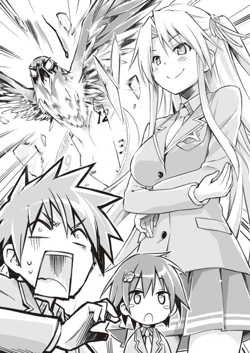
本棚を支えに何とか立つと同時に、その的外れな感想にツッコミを入れる。もう本当に、色々といい加減にして欲しかった。
「いいだろう。ならば私も、嫌がる幽鬼くんたちにアツアツのおでんを食べさせるまでだ」
「幽鬼を虐待するな！」
「そのおでん、どうせ本当はヌルいのでしょう？」
「指摘すべきはそこじゃない！」
後頭部を押さえつつ、今度は翠に突っ込む。
「さあね。ただこれだけは言える。私はハンペンが好きだ」
「訊いてねえ！」
今度はそんな瑠璃へのツッコミ。
「私は蒟蒻が好きよ」
「訊いてねえって言っ──」
「蒟蒻は幽鬼くんのものだ」
「んなことはどうでも──」
「なら大根を頂こうかしら」
「黙れ！ お前ら速いんだよ！ 一つずつ処理させろ！」
力ずくで割って入り、喚きながら二人をブレイクさせる。
「ボケりゃいいってもんじゃないだろ！ 追いつかねぇよ！」
「頑張りなよ」
「頑張ってるだろ！」
「貴方がどれだけ頑張ろうと、大根は渡さない」
「そのドヤ顔やめろ！」
その日、孝巳が見舞われた疲労は、廃銀行でのそれを遥かに凌駕するものだった。
３
あくる日。孝巳は『お笑い研究会』を欠席し、やっと病院に行くことができた。
昨日は結局あれから翠にカラオケボックスへと連行され、アニソンメドレーをしこたま聞かされる羽目になった。ちなみに孝巳は一曲も唄っていない。それでワリカンなのだから、嫌がらせ以外の何物でもなかった。
が、そのあと彼女から聞き出した情報は、それなりに有益なものだった。
......一ヵ月ほど前に廃銀行で起こった殺人事件の被害者は、フリーランスの霊導師だったらしい。どうも霊導師とは、同業者たちで組織された共同体に属している者と、個人で自由に活動している者がいるそうなのだ。
組織は古くから世襲制を敷く家々を中心に構成され、基本的にそれぞれが管轄する土地にて霊導を行っている。一方、個人で活動する霊導師は、後ろ楯を持たない代わりに場所を気にせず動くことができる。お互い対立しているわけではなく、情報交換や共闘も多いという。大型老舗チェーン店と個人商店程度の違いのようだ。
そして今回、頭取さんに殺害されたのが、そんなフリーの霊導師だった。どうして心霊スポットでもない銀行へ行ったのかは定かではないが、とにかく彼はそこで頭取さんと出会い、無残に殺されることになった。所属者の死ではないとはいえ、組織はこの一件をかなり深刻視しているそうだ。
（だから鴫原はゴタゴタしてたってわけだ）
診察室を出た孝巳は今、外来患者で賑わう待合室を横切って出口へと歩いていた。右肩は軽い炎症だったようで、やっぱり数枚の湿布を渡されただけだった。
元気に駆け回る幼児が、母親にどやしつけられている。視線が合って泣かれないよう、伏し目がちで足早に通り過ぎることにする。
（もしかして三塚が関西から来たのも、そのゴタゴタが理由か？ いや、違うな）
柘榴は、個人的な事情でこの地を訪れたと言っていた。そこで頭取さんの噂を聞き、もしやと思ったと。つまり、廃銀行の殺人事件が理由で来たわけではないことになる。
三塚柘榴については、腑に落ちないことが実はもう一つある。
翠が、彼女が来ていることを知らなかったのだ。「柘榴が来てるの？」......孝巳の話を聞くと、あの美少女霊導師はそう言って、瑠璃と同じく意外そうに目を瞬かせていた。
鴫原家は、霊導業界の中でもかなりの地位にある家だ。そこの当主である翠が知らないというのは少し変じゃないか。この地は遠く古来より、鴫原家の管轄地だという。関西から来た柘榴が勝手に動き回って、問題はないのだろうか。
（うーん、よく分からない）
推察に窮し、頭をガシガシと掻く。
まあ、部外者の自分が悩むことじゃないのだろう。孝巳が気にしなければならないことは、頭取さんのことだ。素人同然の自分に、これから何ができるかという──
「また会ったね」
いきなり背後からかけられた声に、孝巳ははたと我に返った。
気付けば自動ドアを抜け、病院の外に出たところだった。最近は日が落ちるのも早くなり、辺りはすでに薄闇に包まれている。院内より漏れた明かりが、暗い地面をいくつも四角く切り取っていた。
......振り向くと、そこにいたのは見覚えのある若者だった。
四日前、川に飛び降りた高橋を助けた、爽やかなイケメン。名も聞かずこの病院で別れた、涼しげな瞳をしたあの青年だった。
「そうか。君、肩を傷めてしまったのか」
孝巳が病院へ来た理由を説明すると、青年が表情を曇らせた。
街灯に照らされる歩道を、スタイリッシュな優男と、無造作ヘアーの高校生が並んで歩いていく。ちょうど彼も病院での用事を済ませたということで、駅までの道中を共にすることになった。
「別に高橋さんの一件のせいじゃないんです。もともと古傷がありまして」
「でも、炎症を起こしたのは泳いだせいだろう？ ......悪いことをした」
まるで自分の過失のように悄然と語る青年に、孝巳は「とんでもない」と首を振った。肩の不調はどちらかと言えば、廃銀行でのドタバタの方に原因がある。
そんな孝巳に軽く頷いて礼を示し、青年が髪を掻き揚げた。清潔感のあるサラサラの前髪が、指先で柔らかく躍る。つくづく爽やかな仕草だった。
すれ違った二人の女子高生が、「今の人、見た？」「超イケメン！」「ツィートしちゃう？」などと色めき立っていた。やはりこの青年のルックスは、かなり目を引く秀麗なものらしい。残念だが、彼女たちは隣の男のことには一切触れてくれなかった。
「そうそう、高橋さんのことだけど」
女子高生たちの黄色い声をまるで無視して、青年が白い歯を見せて笑った。
「まだ意識は戻らないけど、容態は安定しているそうだ。一安心といったところだね」
「そうですか」
あれからこの青年は、入院している高橋をほぼ毎日見舞っているのだという。今日やってきたのもそのためだったらしい。
「本人には余計なお世話かもしれないけど、やっぱり気掛かりだからね。失われていい命など、この世には一つもないんだ」
立派な人だ。悔しいが、内面でも全く勝てる気がしない。
行きがかりで助けた人間に対し、ここまで親身になれる......一体どういう育ち方をしてきた人なのだろう。孝巳など正直、色々あったお陰で高橋氏のことなど頭の片隅に放置していた。いや、そのことで神様の査定に文句までつけたような気がする。
（俺って薄情者なんだろうか）
卑屈な自己嫌悪に陥る孝巳の心中を知る由もなく、不意に青年が真面目な面持ちになってこちらを覗き込んできた。
「ところで、君は聞いているかな？ 高橋晴一郎さんが自殺を図った理由」
「え？」
当然ながら、そんなものは知らない。あの日以来、警察が連絡してくることもなかった。それはそうだ、孝巳はただ自殺現場に居合わせただけの、単なる通行人だったのだから。高橋晴一郎というフルネームだって、今この場で知った。
孝巳の反応を予想していたのか、青年が肩をすくめて小さく苦笑する。飾り気のない、しかし気品のある笑顔だった。
「僕も警察から聞き出すのに苦労したよ。興味本位の詮索になってしまうけどね......関わりを持った以上、どうして彼が命を絶とうなんて考えたのかを知りたかった」
「はあ」
「実は高橋さん、指名手配されていたようなんだ。殺人容疑で」
「さ、殺人？」
思いも寄らぬその発言に、孝巳は知らず足を止めた。
一瞬だけ頭取さん事件が頭をよぎる。が、青年が言うには高橋が容疑者となっているのは、三ヵ月前に関西で起こった事件だということだった。関西......思わず三塚柘榴の美しい顔を思い出す。
「だから意識が戻り回復したら、そのまま逮捕ということになるみたいだ」
「そう、なんですか」
次に脳裏に浮かんだのは、病院にいた厳めしい三人の刑事だった。そういえば、孝巳を事情聴取した男は関西弁だった。
高橋晴一郎は人殺しだった？ もしや彼は警察から逃げられないことを悟り、だから川へ身を投げたのか？ 孝巳と青年は、それを助けてしまった......？
「後悔したかい？ 彼を助けたことを」
絶句している孝巳を、青年の眸子が静かに捉える。感情の見えない、底深い瞳だった。
「いえ、そういうわけじゃ......」
「僕は全く後悔はしていないよ。たとえそれが、高橋さんにとって迷惑なお節介だったのだとしても、ね」
そうなのだろう。でなければ足しげく見舞いになど訪れたりはしない。高橋の犯罪と、彼の命を救う行為は、青年の中では別問題なのだ。
「いや、仮に彼の素性を事前に知っていたとしたら、なおさら死なせたくはなかっただろう。命は命では償えないんだ」
「それは分かる気がします。死んだところで、高橋さんの罪が許されるとも思えませんから......」
「そうだね。でも、それだけじゃないんだ。僕にはそれ以前に、彼を死なせたくなかった理由があるんだ」
「理由？」
「彼は──哀れな人間なんだよ」
青年の声音が、一層の憂いを帯びる。立ち尽くす二人の間を風が吹き抜けた。
「彼はもともと、決して殺人などを望んでいた人間じゃなかった。でも、彼はそうせざるを得なかったんだ」
青年が歩き出したので、すぐに追従する。
どうやって聞き出したのかは不明だが、青年はかなり深くまで事情を知っているみたいだ。それを孝巳が耳にしていいものか分からなかったが、彼が語る以上は仕方ない。青年の声には、それだけの強い力があった。
「高橋さんは、妹を殺されたんだ」
「えっ？」
「半年ほど前、プラットホームで後ろから背中を押されたそうだ。彼の妹さんは、ちょうど入ってきた電車に轢かれて......」
高橋晴一郎は、かつて妹を何者かに殺された。彼は殺人事件を犯す前に、別の殺人事件の被害に遭っていた。
「犯人は久米美知恵という、若い女性だったらしい。久米美知恵は駅から逃走、数日後に手首を切ったが、すんでのところで発見され何とか一命を取り留めた」
嫌な予感がした。もしや、高橋晴一郎の殺人というのは......
「その後、高橋さんは久米美知恵の病室に忍び込んで......妹の仇を絞殺した。それが彼の殺人だ」
「復讐した、ってことですか」
青年が肯定するように目を伏せる。
やりきれない話だ。高橋がもともと殺人などを望んでいなかったというのは、哀れな人間だというのは、そういうことか。
「高橋さんは指名手配され、この町に逃げてきた。そして──命を絶とうとした」
もしかして高橋晴一郎は、復讐を遂げたのちに、いつかはそうする気だったのかもしれない。久米美知恵を殺したことで罰を受けるくらいなら......と、そう思ったのでは。
「罪悪感だったのかな。橋の上に遺書があったらしいよ。『死んでお詫びする。許して下さい』と」
「お詫び......？」
少し読みが浅かった。高橋は、自身の復讐が過ちであることを理解していたのか。それでも凶行に走る己を止められなかったということか。
返す言葉が見付からず、孝巳は唇を噛むしかなかった。
（間違いだと分かっていても、そうせざるを得ない、か）
孝巳は、自分が直情系の人間であることを自覚している。だからもし自分の大切な誰かが殺されたなら、高橋と同じ行動を取るかもしれない。
が、彼のように罪悪感を抱いてお詫びのために死ねる自信はない。自分なら「どうして詫びなど入れなきゃいけないんだ！」と開き直ってしまいそうな気がする。
「正直だな、君は」
見透かしたように青年がそう言ったので、孝巳はギクリと顔を上げた。
心優しい善良な人間だと思っていたが、こうやって長く話してみると、どうにも掴み所のないミステリアスさを感じさせる青年だ。高橋の話に、孝巳がどんなリアクションを見せるか......それを観察されているような疑心に囚われる。
「でもね、そうじゃないんだ。おそらく彼は、復讐自体を悔やんでいたわけじゃない」
「え？」
「高橋さんの後悔は、ひとえに犯した殺人行為に対して向けられたものだ。その一点に関してのみ、彼は過ちを認めたのさ。心の底から、命を絶とうと思うほどに」
話が見えない。それはどういう意味だ？
「彼が殺したのは──別人だったんだ。久米美知恵じゃなかったんだ」
青年の告白に、一瞬寒気が走る。吹きつけた風のせいではなかった。
「皮肉にも同時期に、全くの別件で自殺未遂をした女性が入院していてね。高橋さんは間違えたんだ。無関係の人間を手にかけてしまったんだ」
「そんな......」
やりきれないどころの話ではない。「死んでお詫びする」とはそういうことか。殺人行為への後悔とは、そういうことか。
いきなり妹を理不尽に殺され、復讐に及んだ高橋晴一郎。自身の破滅すら承知で果たした彼の行為は、結果的に新たな悲劇の連鎖を生んでしまった。そしてその途方もない罪悪感は、いつしか復讐心をも呑み込み──彼を押し潰してしまった。
「もちろん、彼のしたことは許されないことだ。彼は裁かれるべき人間だ。でも......やっぱり哀れだとは思わないかい」
青年がそう繰り返したときには、いつしか駅の前だった。
てっきりここで別れるのだろうと思っていたのだが、孝巳を待っていたのは彼の意外な一言だった。
「少し付き合わないか、紺野孝巳くん」
４
やはり、断るべきだった。青年と共にプラットホームへ降り立つまでに、孝巳は何度もそう悔恨した。
家とは逆方向にある、オフィス街に囲まれた駅。そこは先日訪れたばかりの場所だ。その時とは反対の立場となり、暗い夜道を青年に連れられていく。進む道もまた、あの時とほとんど同じだった。
落ち着かない。脳がしきりに危険信号を伝えている。この先に店や民家はないはずだ。あるのは、あの廃銀行くらいのものだ。
用事を思い出したと、今からでも退散するべきか。だが、それはそれで心に靄が残る。
この青年は、何故孝巳の名を知っているのか？ 何故わざわざ高橋の事情などを聞かせたのか？ ......ここに至るまでに何度も尋ね、はぐらかされ続けてきたこの疑問が解けない限り、どのみち帰るに帰れなかった。
孝巳は名乗った覚えはない。否、一度名乗ろうとして止められたのだ。だからこの青年の名前も知らない。この男は、一体何者なんだ？
「君は恋人はいるのかい？」
ふと青年が前を向いたまま、出し抜けにそんな問いを投げてきた。
「......いえ、いません」
「なら、好きな子は？」
「いません」
青年は短く「そう」とだけ返すと、再び沈黙してしまう。
これはただの世間話だろうか。その割には妙に声音が無機質で、街灯に浮かぶ白い横顔は蝋人形のように感情が窺えなかった。
しばらく行くと、数メートル先にポツリと光を灯している自動販売機が見えた。近付いていくと、ジュースの並ぶディスプレイに一匹の蛾が止まっていた。
こんな時期にまだいるのか......と孝巳が思った瞬間、青年が通り過ぎ様に、指でピンと蛾を弾いた。無慈悲な一撃を受けた蛾は、そのままポトリと地面に落ち絶命した。
無意識の行為のようだったが、とても命の貴さを語った人間のやることじゃない。この青年の本質が見えない。それが心を余計に不安定にさせる。
人には、様々な顔がある......蛾の死体に目を向けながら、孝巳は彼への認識を改めることにした。
それから数分後。連れて来られたのは、果たして廃銀行だった。
つい一昨日、三塚柘榴と訪れた場所。中年男の生霊と遭遇した場所──
「待って下さい！ ここはまずい、ここには......」
平然と敷地内へ踏み入ろうとする青年を、慌てて止めにかかる。
しかし彼はいつも通りの涼しげな眼差しを向け、柔らかく笑うだけだった。
「君に会わせたい人たちがいるのさ、紺野くん」
階段を上がり、一昨日と同じロビーに到着した。
当たり前だが、丸坊主とキャップ男はいなかった。殺風景な空間で目につくものは、空き缶と吸殻、そして右方の通路に残る僅かな血痕のみ。あれは丸坊主の血だろうか？ それとも、九月の首切り殺人によるものだろうか......
孝巳を置いて数歩行ったのち、青年がクルリとこちらに振り返る。三メートルほどの距離を隔てた先で、彼は口を三日月のように歪めていた。
「君は、頭取さんに興味があるのかな？」
「！」
息を呑む孝巳に、青年は構わず質問を重ねる。
「この前も、白い制服の女とここに来ていただろ？ 彼女は君に何を話したのかな？ 素性は聞いたかい？ 目的は聞いたかい？」
「あ、あんた......」
何故そこまで知っている？ どうやってそれを知った？ あの二人組からか？ タクシーの運転手からか？ それとも......青年はあの時、ここにいたのか？
思考を迷走させる孝巳の前で、青年がズボンの後ろポケットへ手を伸ばす。取り出されたのは、丸められたゴム皮のマスクだった。
「それは......」
頭取さんは、ゴム皮のマスクを被っているらしい──そんな瑠璃の言葉が去来した。
「その節は出迎えもせず、失礼したね」
またも孝巳の心を見透かしたように、青年は低く笑いながらマスクを地面に捨てた。
「頭取さん。なかなか良い名前だと思わないか？ 実はこの名前には少し自虐が篭められているんだ」
「まさか......まさかあんたが......」
「それでは紹介しよう」
蒼白になって呟いた孝巳を無視して、青年がパチンと指を鳴らす。
直後、その傍らに人影が浮かび上がった。
ヨレヨレのロングコートに、生気のない無表情。虚ろな目と半開きの口。まるでずっと前からそこにいたかのごとく佇んでいるのは、紛れもなくあの中年男だった。
「と、頭取さん!?」
「違うね。頭取さんはこの僕......彼の名は吉永透さんだ」
呆れた口調で言うと、青年がまた指を鳴らす。
すると新たな人影が青年の横に現れた。
長い髪を後ろで束ねた、年若い小柄な女。やはり表情がなく、脱け殻のように宙を見詰めている。間違いなく幽霊なのだが、体が透けておらず足があった。
「先ほど話した、久米美知恵さんだ」
久米美知恵。それは高橋の妹を殺したという女の名前だ。高橋が殺し損ねた仇だ。
「そして」
青年がさらに指を鳴らす。
最後に現れた三人目には、はっきりと見覚えがあった。
灰色のジャケットを着た、二十代半ばの男。思い詰めた様子で川を見下ろしていた、橋で見かけたこの顔は。
「高橋晴一郎。僕と君が助けた指名手配犯だ」
......たった数秒の間に、廃銀行の二階ロビーの人数は二人から五人に増えていた。
愕然と目を剥く孝巳に対し、立ち並ぶ四人の男女。
中年男・吉永透。
若い女・久米美知恵。
自殺未遂者・高橋晴一郎。
そして、その三人を召喚した謎の青年。
（どういうことだ？）
高橋晴一郎がどうして幽霊に？ 彼は意識不明ではあるものの、病院で確かに生きているはずだ。
いや、そんな疑念は今さら抱くまでもないことだ。目の前の高橋は明らかに霊であり、そして中年男・吉永と同種の存在であることも間違いない。ならば。
「生霊、か......」
「ご名答。さすがは噂の紺野孝巳くん」
青年が破顔したまま、人を食ったように拍手で応える。
「彼らは生者であり幽霊、つまり生邪魔だ。吉永透、久米美知恵、そして高橋晴一郎......実はこの三人は、互いに因縁浅からぬ間柄でね」
青年が久米美知恵の肩をポンと叩いた。宙を掻くことなく、その手はまるで実体に触れたように彼女の華奢な肩に置かれていた。
「まず、この久米美知恵。高橋晴一郎の妹をホームから突き落とした張本人......高橋が本来殺すはずだった仇だ」
高橋の妹を殺した、本当に復讐すべきだった相手。しかし高橋はそれを間違え、無関係の女性を手にかけてしまった。だから久米美知恵は、まだ生きている。ここにいる彼女もまた生邪魔なのだ。
「実は彼女が手首を切った理由は、高橋晴一郎と同じなんだ。久米美知恵は、罪悪感から死んで詫びようとしたのさ」
青年は愉快げに、笑い話のごとく語る。
「そもそもどうして久米美知恵は、高橋の妹をホームに落としたか？ それはね、復讐だったんだよ」
「復讐だと......？」
「久米美知恵には、自分の人生を台無しにした、憎んでも憎み切れぬ相手がいた。彼女はかつて、ある男に恋人を刺し殺されているんだ」
「............」
「発端は、とある女子高生への傷害事件だ。その容疑者とされていたのが、久米美知恵の恋人だったのさ。もっともそれは濡れ衣だったんだけどね」
自身の過去を暴露されながらも、久米美知恵は無反応だった。弛緩した顔で、喜怒哀楽もなく、ただひっそりと忘我に身を委ねている。
「久米の恋人は、暴行犯の容疑を着せられた挙げ句、被害者の父親に刺し殺された......だから久米は、曖昧な供述をした被害者の少女を恨んでいた。ある日、その女子高生を駅で見付けた彼女は......復讐を実行した」
復讐。また復讐か。
「突き落としたのは、言うまでもなく高橋晴一郎の妹だ。だが──それは全くの人違いだった。久米美知恵が本当に殺したかった少女は、その少し横に立っていたんだ」
人違い。また人違い？
「それを知った久米美知恵は絶望し、無関係な人間を手にかけた罪悪感から自殺を図った。もちろん、死ぬ前に助けたけどね」
「あんた、何を言ってる......？」
ジリリと僅かに後退しながら、孝巳は唸るように声を絞り出した。
そんな孝巳を捨て置き、青年は滔々と言葉を紡ぐ。
「さて、最後だ。久米美知恵の恋人を刺し殺したのは、被害者である女子高生の父親だと言ったが......それがそこにいる吉永透だ。君が頭取さんだと思っていた男だよ」
もはや孝巳は話に追いついていくのがやっとだった。
「親として、娘の人生を滅茶苦茶にした犯人に何としても復讐したかったんだろうね。......でも、吉永透もまた間違えた。久米美知恵の恋人は、さっき言ったように濡れ衣だったんだ。人違いだったのさ」
人違い。ここでも人違い。何だこの誤解の連鎖は。
「それを知った吉永透は、もう察しがついているかもしれないが、やはり罪悪感から自殺未遂をした。今も関西の病院で意識不明となっている。吉永透、久米美知恵、高橋晴一郎は、三人とも昏睡状態にある殺人犯ということだよ」
この三人の生霊は、悲劇の糸で一つに繋がっている。そんな偶然が起こり得るのか？
「さて。質問があるならどうぞ、紺野孝巳くん」
汗の玉を額に浮かべる孝巳に、青年が慇懃に片手を差し出し促してみせた。
「......何でここにその三人の生霊がいる？」
「この誤解による悲劇を演出したのが、僕だからだ」
青年が事もなげに答える。
「といっても、別に法を犯したりはしていないよ。僕はただ、彼らにそれとなく情報を吹き込んだだけ。彼らがそれを正しく受け取らなかっただけだ」
やはり一連の悲劇は、作為的に仕組まれたものなのだ。そしてそれを行ったのが、この青年......立派な人だと孝巳が敬服したはずの、必死に高橋を助けたはずの、この青年。
「何で......何でそんなことを！」
「強い負の情念を抱える、良質な生邪魔が欲しかったからさ」
「な......」
「どうやら生邪魔に対する知識はあるようだから、簡潔に言おう」
今や完全に覆された孝巳の評価などどこ吹く風で、青年は普段通りに前髪を掻き揚げた。
「常軌を逸した負情念は、時に人を生きながらに霊にする。そういった生者の霊を扱うエキスパートが、僕たち生邪魔屋だ」
その称号を孝巳は知っている。
三塚柘榴──あのツインテールの美しい少女が、自身を指してそう言った。
「霊の強さとは、与えられた意思の強さに比例する。ならば自分自身の強い意思によって霊となっている生邪魔が強力なのは、当たり前の帰結......霊導師の世界には、そんな生邪魔の霊導を専門としている家があるんだよ。幽鬼を専門とする有働家のようにね」
「......三塚、か」
孝巳の干上がった呟きに、青年が片目を小さく細める。
「ほう、やはり柘榴から聞いていたかい。それとも情報源は、有働瑠璃か鴫原翠かな？」
挙げられたその名に、鼓動が早まった。
柘榴どころか、瑠璃と翠のことまで......この期に及べば、もはや青年がそちら側の人間であることは疑いない。いや、それは彼が自身を「生邪魔屋」と称した時点で決定的だ。
「お前は──何者だ」
問いかけた孝巳に向けて、青年がひときわ楽しげに相好を崩した。次いで折り目正しく一礼してみせた姿は、あの泣き黒子の少女に酷似していた。
「ようやく名乗るに相応しい機会が来たね。僕は三塚昂大。三塚家の嫡男だ」
「三塚、昂大？」
「改めてよろしく。──そしてさようなら、紺野孝巳くん」
青年が言い終わると同時に、三体の生邪魔が動いた。
ぎこちない歩調でワラワラと孝巳へ群がり、方々から捕獲せんと腕を伸ばしてくる。まるでゾンビのようだった。
「クソ！」
必死にその手を掻い潜り、何とか撤退するべく階段を目指そうとする。が、すかさず回り込んだ高橋晴一郎によって、進行方向が塞がれてしまった。
「どけ！」
セルフツッコミを行う暇もなく、怒声と共に拳を放つ。が、それは彼に届かなかった。固い壁を殴ったような衝撃が走り、左手が弾かれる。《空礫》か！
怯んだ孝巳の首根っこを、背後に迫った吉永透が掴んだ。冷えた粘土を押し当てられたような感触に思わず身をすくませてしまうと、続いて久米美知恵が捨てられた恋人のように足にしがみついてきた。
「チッ、お前らは触り放題かよ......！」
忌々しく吐き捨て、とにかく無茶苦茶に暴れて抵抗する。その体格からは想像もできない力で捕獲してくる二人を、孝巳は身体能力のみで辛うじて引き剥がした。
今度こそと階段に向き直ろうとした瞬間、視界が回転した。
腹部の衝撃と共に、横壁に体ごと叩きつけられる。高橋の拳を食らったのだ。
「ぐっ......！」
呼吸ができない。目の焦点が合わない。胃液が喉に逆流してくる。まるで硬球のストレートを土手っ腹で受けたような気分だった。
（これが、生邪魔か......）
念動力などを駆使する死霊と比べて、攻撃がずいぶん直接的だ。そして力が強い。警戒はしていたつもりだが、まさかここまで進退きわまる状況になろうとは......銀行までノコノコとやってきたことを、孝巳は改めて後悔した。
「ははは、まるで喧嘩だな。勿体振らずに言霊を使った方がよくないかい？」
地面に這いつくばった孝巳の背中に、三塚昂大の哄笑が浴びせられる。
顔を上げると、彼は悠々と腕を組んで事態を傍観していた。その端正な顔を燃えるように睨み、孝巳は歯を食い縛って何とか起き上がった。
「何故こんなことをする？ 三塚家ってのは、霊導師じゃないのか！」
「実は僕、霊導師を廃業したんだ。これからは呪殺師として裏社会で成り上がるつもりだ」
「呪殺師......？」
「簡単に言えば殺し屋だね。とはいえ、犯罪者になるつもりはない。殺しは全て生邪魔にやってもらう。この三人は、僕の商売道具というわけさ」
高橋たちは肯定も否定もなく、思い思いに佇立しながら昂大の命令を待っている。階段はその向こう。ダメージを負ったこの状態で、包囲を突破するのはまず不可能だ。
「苦労したよ。僕自身の手を汚さないまま彼らを破滅させ、自殺未遂に追いやり、昏睡状態に仕立てるのには。生邪魔は、意識のない状態でしか抜くことができなくてね」
本人が意識のない状態。それはつまり、自殺未遂による昏睡状態か。
だから必死に高橋を助けたのか。あれは高橋本人のためでなく、彼の生邪魔を手に入れるためか。「死んでしまったら──元も子もないから」......それがあの言葉の真意か！
「しかし甲斐はあった。お陰で因果の強い、一級品の生邪魔を三体も得ることができた。愚かにも僕を止めに来た無名の霊導師がいたが、僕の作品の前には赤子同然だったよ。どうやって首を落としたのかは企業秘密だけど、いずれ柘榴からバレてしまうかな？」
それは九月に起こった、首切り殺人のことだ。
この男はすでに人を一人殺している。吉永透と久米美知恵の生邪魔に取り返しのつかぬ罪業を背負わせ、そこに高橋晴一郎を加え、さらなる罪業を生み出そうとしている。
「言っておくけど、三人を哀れに思っているのは本当だよ。彼らは同情すべき存在だ」
「よくもそんなことを......！」
「目覚めたところで苦しむだけだ。もしかしたら、彼らはまた命を絶とうとするかもしれない。ならこのままでいいじゃないか。これはね、僕なりの霊導なんだよ」
口振りから分かる。きっとこの男は、心からそう思っている。三人の人生を狂わせておいて、その一方で何食わぬ顔をして彼らを哀れんでいる。
「高橋がこの町に逃げて来たのは、僕にとって実に好都合だった。僕はもともと、この地に来る目的があったからね。その一つが君だよ」
昂大の声に言い知れぬ冷ややかさが篭った。刃先のごとき眼光が、孝巳の全身を貫く。
「君がどういう男なのか、非常に興味があった。あの『凶姫』が隣にいることを許した、紺野孝巳という男を知りたかった」
またそれか。どいつもこいつも、一体何なんだ。
「足がつくリスクを冒してまで頭取さんなどという噂を流したのは、君を釣るためでもあった。本命の瑠璃が釣れなかったのは残念だが......こういう演出、彼女はお嫌いかな？」
「有働、だと？」
「お喋りはこんなところだね。では死んでもらおう」
「......お前は許せねぇ」
長い高説を賜ってくれたお陰で、少しだけ回復した。
逃げるのはやめだ。高橋ら生霊はともかく、三塚昂大は生身の人間のはず。こうなったら、その顔に一発入れることくらいはしてみせる！
「おおぉぉぉ！」
痛みを怒りに塗り替え、玉砕覚悟で昂大に突貫する。
対する彼は慌てることもなく、腕組みをしたまま僅かに半身になっただけだった。勢いよく飛び込んだ孝巳の腹部に、絶妙なタイミングで膝頭が突き上げられる。
「ぐぇ......！」
先刻と寸分狂わぬ箇所に激痛が走り、孝巳はなす術もなく前のめりに倒れた。無我夢中で地面を転がり、追撃を避けるために距離を取る。
──強い。優男かと思っていたが、とんだ食わせ者だ。生身同士ならどうにかなると考えたのは大間違いだった。これは......いよいよまずい。
辛うじて上体を起こした孝巳に苦笑しつつ、昂大が再び前髪を掻き揚げる。
「なかなか楽しい男だな、君は......とはいえ、少しばかり期待外れだ」
「くっ......」
「動きがまるでなっていない。霊力の使い方も素人同然だ。瑠璃が認めた男が、この程度ということはないはず」
とんだ見当違いだ。瑠璃が孝巳を認めたのは、漫才の相方としてに過ぎない。未知数の霊能者である紺野孝巳など、そもそもどこにもいない。
「もしかして君は、極限まで追い詰められなければ真価を発揮しないタイプかな？ だとしたら、近しい友人の一人か二人でも始末しておくべきだったか......アプローチの方法を間違えたようだ」
その発言に背筋が凍る。
脅し文句で言ったつもりじゃないのだろう。きっとこの男は、何の躊躇いもなくそれを実行する。こいつは目的のためなら平気で他人を殺せる人間だ。
瑠璃や翠は別として、今の孝巳には友人と呼べる存在はいない。が、そんなことは何の安心にもならないだろう。「孝巳の知っている人間」......昂大にとっては、おそらくそれだけで充分なのだ。
自分が目を付けられたばかりに、自分が原因で、誰かが殺される──それは孝巳が殺したも同然だ。巻き込まれた自分が他人を巻き込み、そして誰かが死ぬ。殺されて死ぬ。
「ふざ、けんな......！」
痛みも恐怖も忘れ、孝巳は咆哮を上げた。
「テメェはここで、絶対ぶっ倒す！」
「──ほう、霊力が上がったね。でも、まだまだだ。君の底を、僕に見せてく──」
「いいえ。紺野様のお手を煩わせるまでもありません」
刹那、昂大の言葉を遮って玲瓏な女性の声がロビーに響いた。
階段下より、足音を伴い声の主が上がってくる。段々と姿を露にしていく細身のシルエットの正体を、孝巳はすでに悟っていた。
いつかと同じ純白の制服姿。月光に浮かぶ幻夢のごとき麗容──三塚柘榴だった。
５
階段を上がり切った柘榴は、事態を確認するように一度ゆっくりとロビーを見回した。
高橋、久米、吉永、そして孝巳へと順番に巡った視線が、最後に三塚昂大へ固定される。その瞳は苦渋の色を湛えており、唇は強く噛み締められていた。
「三塚、お前......」
「紺野様。あとは私にお任せを」
決然と言い放ち、柘榴が一歩踏み出す。
同時に三体の生邪魔が、気圧されたように後退した。覚束ない足取りで下がり続け、そのまま主たる昂大の元へと帰還する。
そんな高橋たちに目もくれず、昂大もまた柘榴を真っ向から見返していた。すでに笑みはなく、一切の感情を遮断したその面容はまるで生邪魔の一体のようだった。
昂大と柘榴──同じ三塚姓を名乗る二人の生邪魔屋は、挨拶の一つも交わさず無言で互いを見詰め合っていた。
長い沈黙ののち、先に口を開いたのは昂大だった。
「柘榴。お前が直々に追って来るとはね」
「三塚昂大。三塚家当主代行として、貴方を拘束します」
淡々と宣言した柘榴に答えず、昂大はそのまま視線を彼女の右手に向けた。
「覚えておいでですか。この手袋を」
真っ赤なオープンフィンガーをゆっくりと掲げ、柘榴がパチンと指先を鳴らす。それは、昂大が高橋らを呼んだときと同じ仕草だった。
一瞬、柘榴の両眼が赤く発光したように見えた。次いで艶やかな髪がざわりとうねると、彼女の手がその前髪を軽く押さえつける。
そういえば確かこの前も、柘榴の瞳が深紅に染まっていたように感じた。彼女があの目をしていたとき、何が起こったか......そう、頭取さんだと思っていた吉永透に、気絶していたはずの丸坊主男が突進していった気がしたのだ。
あれはやっぱり柘榴の霊能だったのか。生邪魔屋は、意識のない生者から魂を抜くことができる──あの時、彼女は丸坊主の魂を一時的に抜いたのか。
ふと気付くと、いつの間にか柘榴の隣に誰かがいた。
口周りに豊かな髭を蓄えた、和服姿の初老の男だった。住職のように頭が剃り上げられており、大柄で胸板が厚い。本当はかなりの威圧感があるだろう厳めしい面構えは、しかし高橋たち同様に脱け殻のごとく空虚だった。
「それは......」
昂大の声音に、微かな喫驚が混じる。
食い入るように刮目する彼に、右手を下ろした柘榴が静かに告げた。
「三塚永堅......貴方が手にかけた三塚の当主です」
その言葉に、孝巳は知らず「え......」と漏らしていた。三塚の当主？ 手にかけた？ まさか昂大は、以前にも人を殺していたのか？
いや、現れた初老の霊には、高橋たちと同じく足がある。体も透けておらず、そこに実存しているような存在感がある。ならば彼も生邪魔だ。本人が死んでいないのだ。
そんな孝巳の思量を裂いて、いきなり昂大の高笑いがロビーに響き渡った。
「ははは！ そうか！ あの馬鹿親父、死に損なった挙げ句に自ら生邪魔になったか！」
かつて見た好青年の面影は、今やどこにもない。コンクリートの壁床に反響するその笑い声は、どこか狂気すら感じさせる薄ら寒いものだった。
「お前などを次期当主に選んだ耄碌ジジイだ、さすがにやることが狂ってる！ 生邪魔屋が生邪魔になってどうするんだ？ クッククク......！」
ひとしきり揶揄を終えると、一転して昂大が真顔に戻った。
体温のない、爬虫類のような目。寸毫の躊躇いもなく人を殺めるだろう、血の通わない怪人─頭取さん─がそこにいた。
「いいぞ柘榴。ここではっきりさせようじゃないか。僕とお前、どちらが三塚の当主に相応しい力を持っているのかを」
ユラリと昂大が進み出る。
「お前が──二つ目の首だ」
殺害予告を通達した次の瞬間、しかし昂大はバックステップで後ろに飛び退いた。
彼が寸前までいた場所を、巨大な鳥影が横様に突き抜ける。影はその先にいた久米美知恵の首をクチバシで貫き、容赦なく喉笛を切り裂いた。
普通の人間ならば確実に致命傷だろう一撃に、久米が前後左右に傾く。倒れることなく体勢を持ち直した彼女を尻目に、その半透明の鷹は階段方向へと飛び去っていった。
「獣霊だと!? まさか──」
昂大から余裕が消えていた。いや、泡を食ったのは孝巳も、そして柘榴も同じだった。
鷹が消えた階下から、さらなる来訪者を告げる足音が届いてくる。
規則正しいその音と共に現れたのは、またしても孝巳のよく知る人物だった。
「──荒ぶる鳩時計が、午後七時をお知らせするわ」
颯爽とロビーに立った鴫原翠は、まずそう言って自身の獣霊を誇示してみせた。
柘榴に続いて登場した翠は、やはり同じようにまず周囲を見回した。
柘榴よりもいくらか適当に観察を終えた彼女は、目の前でやけに身を固くしている柘榴と、その隣の生霊・三塚永堅を差し置き、壁際の孝巳に視線を向けてきた。
「紺野くん、ここは潰れた銀行よ。金目の物なんて何もないわ」
「......いい加減、場の空気を読むことを覚えてくれ」
嘆かわしげに応えた孝巳をそのままに、次いで翠が柘榴に向き直る。
とても十六とは思えない、二人の大人びた女子高生。しかも双方が比類なき超絶美少女だ。が、彼女たちの態度は全く正反対だった。
「ご、御前様......」
柘榴が恐縮したまま、おずおずと頭を下げる。殺人鬼・昂大を前にしても眉一つ動かさなかった彼女が、蛇に睨まれた蛙のように畏縮していた。
「柘榴。鴫原の管轄地で何をやっているの」
「......申し訳ございません」
目すら合わせられず、柘榴はひたすら平身低頭に徹する。
「まあいいわ。先に仕事を済ませましょう」
直立不動でおののいている柘榴から、翠の視線が昂大へと移る。身構える彼を冷たく見据えつつ、少女は栗色の髪を一つ払い、唇をすぼめてヒュッと息を吸った。
それを合図に、その払ったばかりの肩に先ほどの鷹が再び顕現した。守護霊・禽踊だ。
「三塚昂大、覚悟はいいかしら？」
禽踊が一度だけ、大きく翼を羽ばたかせた。たったそれだけの挙動に、昂大と三体の生邪魔が圧倒されたようにさらなる距離を取る。
「三塚家の当主に選ばれなかったことを逆恨みし、当主である三塚永堅さんを襲撃して逃走。その後も生邪魔を私的に作り出し、無益な罪業を背負わせた」
感情もなく、翠が地獄の閻魔のごとく昂大の罪状を縷々と連ねていく。
「この鴫原家三十七代目・鴫原翠が──貴方にどのような処断を下すか分かるかしら」
「く、『鵺御前』......ッ」
「その名はやめて。呼ぶなら『キュア・エメラルド』にしてちょうだい」
「図々しいぞ！」
張り詰めた状況であるのは理解していたが、つい突っ込んでしまった。
孝巳の大声に、高橋たち三体がビクリと反応したのが分かった。今さらながら《喝破》が効いたようだ。よく見ると、禽踊と三塚永堅氏までもがこちらを窺っていた。
「さすがにこれは分が悪いな」
舌を打ち、昂大がボソリと独りごちる。
彼の背後には、もう一つの細長い通路がある。ジリジリとそちらへ下がりながら、昂大はおもむろに一本締めのごとく両手をバチン！ と大きく打ち鳴らした。
──その乾いた音を契機に、ロビーに混乱が訪れた。
「な！」
孝巳たちの前に、突如として無数の人間が現れた。
老若男女が、ウジャウジャと、狭いロビーに満員電車のごとくひしめき合う。彼らは特に向かってくるでもなく、それぞれがその場でフラフラと蠢いていた。
「な、何だこいつらは！」
唐突に出現したその人だかりに、視界が遮断された。迂回して翠たちに駆け寄ることもできない。眼前の一人を押し退けてみたが、手は不可視の障壁に弾かれるだけだった。
三十人を軽く超す生邪魔の群れ。微塵も人いきれを感じない、冷えた密集。高橋たち以外にも、三塚昂大はこれほどの人間の魂を抜いていたのか！
「備えもなしに鴫原の土地にやってくるほど、僕は馬鹿じゃない。関西からここまでの道中、病院などいくらでもあったからね」
狼狽する孝巳の耳に、嘲るような昂大の声が聞こえた。
「紺野くん、近くまた会おう。次に僕を失望させるようなら......分かっているね？」
声が遠ざかる。人垣の向こうで、柘榴の「兄様！」という悲痛な叫びが上がった。
６
昂大が撤退すると、眼前にごった返す生邪魔の団体も煙のように掻き消えてしまった。嘘みたいに静寂を取り戻したロビーには、孝巳と翠と柘榴だけが残されていた。
緊張の糸が切れて、思わずその場に膝をつく。
もはや孝巳の精神は限界に近かった。昂大の豹変に端を発する、事態の相次ぐ急展開......最後に至っては、まるでイリュージョンでも見せられた気分だ。
へたり込んでいる孝巳に、ふと横合いからそっと繊手が添えられてきた。
「紺野様、大丈夫ですか」
鼓膜をくすぐる柔らかな声と、鼻孔をくすぐる甘い芳香。顔を確認するより先に目に飛び込んできたのは、制服越しの豊満な胸だった。
「三塚......」
「どこか痛む箇所はございますか」
言いながら、柘榴がペタペタと細い指を体中に這わせてくる。
他意はないのだろうが、やけに妖しい動きだった。そのまま下腹部に移行されては大惨事になると思い、孝巳は「大丈夫だ」と早々に彼女から離れた。
そうこうしていると、翠もつかつかとこちらに歩み寄ってきた。いつもより一層しかつめらしい表情で、柘榴を上から射すくめる。
「しばらく振りね柘榴。元気そうで何よりだわ」
たちまち柘榴が素早く反転し、跪座のまま改めて深く頭を垂れた。埃っぽい地面に構わず膝をつけ、家臣のごとく翠に叩頭する。
「御前様。鴫原家の管轄地での勝手な振る舞い、伏してお詫び申し上げます」
「全く、貴女自身が出張ってくるなんて......」
翠は両腕を抱くように組んだまま、堂々たる佇まいで彼女を見下ろしている。その腕に乗っかる立派な胸は、柘榴のそれ以上に迫力があった。
「此度の三塚家の騒動は、私から他の家々に説明しておいたわ。次期当主に正式に指名された、三塚柘榴への理解と協力も含めてね」
柘榴が蚊の鳴くような声で「ありがとうございます」と謝意を述べる。
それにしても、柘榴のこの態度。名家とは聞いていたが、翠は霊導界でどれほど凄い立場にあるのだろうか。その世界の格式など全く知らないが、ここまでの上下関係は学校の部活動には存在しなかった。
とりあえず人心地ついたので、孝巳は立ち上がろうと足に力を入れた。
腹部が痛んで顔をしかめると、すかさず柘榴が「紺野様、ご無理をなされては」と甲斐甲斐しく肩を貸してきた。......気のせいか、翠の視線が妙に痛かった。
ひとまず一階に下り、比較的綺麗なソファーを選んで腰を下ろす。並んで座った孝巳と柘榴の前で、相変わらず翠がやたら不機嫌に仁王立ちしていた。
「三塚。お前さっきあいつのこと、『兄様』って言ったよな」
「......三塚昂大は、私の腹違いの兄なのです」
両足を揃え肩を落としながら、柘榴が暗然と語り始めた。
「兄は前妻の子、私は後妻の子でして......年は六つ離れています」
ということは、昂大は二十一、二歳か。
「父の方針で兄は親類に預けられ、私たちは別々に幼少期を過ごしました。その頃より、もしかしたら兄は疎外感を抱いていたのかもしれません。嫡男であるはずの自分が遠ざけられたのは、父に疎まれているからではないのかと......」
その上、三塚家の次期当主は妹の柘榴に決定した。昂大の不審は現実となったわけだ。
（だからって、腐り過ぎだ）
孝巳だって野球の道を断たれたとき、それなりに腐った。野球ができなくなることは、孝巳にとってアイデンティティーの崩壊を意味していたから。
しかし、それでも昂大ほどに荒むことはなかった。幾人もの人生を破滅させ、殺人まで犯すなんて──どんな事情をもってしてもまかり通るものではない。
「私は三塚の人間として、妹として、三塚昂大を止めねばなりません。そして、兄の生邪魔とされた方々を、元の肉体に還して差し上げねばなりません」
毅然とした横顔に強い決意を湛え、泣き黒子の霊導師は両手を握り締めた。
つまり柘榴は、兄を追ってやってきたのか。何を手掛かりにして来たのかは不明だが、とにかく彼女はこの地で頭取さんのことを知り、兄との関連性を疑った。堂々と孝巳に接触したところをみると、鴫原家に気付かれることも覚悟していたのだろう。
「それにしても三塚昂大の奴、あんなに生邪魔を従えていたなんてな......一時期は有働の奴も大量に霊を憑けてたけど、あいつはそれ以上だ」
いきなり出現した生邪魔たちは、目算だけでも三十人以上いた。翠と柘榴が数体は退けたらしいが、さすがに全てには対処できなかったようだ。
高橋ら三人だけでも脅威なのに、さらにあの数......軽い目眩に襲われる。
「兄には、生邪魔屋としての豊かな才能がありましたから」
そりゃあ、並大抵の霊感であれだけの霊を統率するのは無理だろう。さすがは生邪魔屋の嫡男だが......しかし、それなら何故、妹の柘榴が次期当主に選ばれたのだろうか？ 現当主である三塚永堅は、息子の歪んだ本質を見抜いていたのだろうか？
「確かにあれだけの数の生邪魔は、私も想定外でした。とはいえ、単に意識のないだけの状態で魂を抜いても、上級の生邪魔にはなりません。限りなく死に近い状態にある、負情念の強い魂ほど、強力な生邪魔となるのです。兄の主力はあくまで吉永様、久米様、高橋様の三体......他の生邪魔らは、即席の駒だと考えるのが妥当かと」
そんな柘榴の説明に次いで、口をつぐんでいた翠が重く嘆声を発する。
「昂大が東へ向かって逃亡していたのは知っていたけど、まさかこんな目と鼻の先に潜伏していたなんてね......どうして報告をしてこなかったの」
咎めるような翠の詰問に、柘榴は「申し訳ありません」とまた陳謝した。
「これはあくまで三塚の問題、他家を頼るわけにはいかぬと思い......まことに勝手ながら、フリーの霊導師である紺野様をお頼りした次第で」
針のむしろといった感じで釈明する柘榴に、翠がきっぱり言い渡す。
「柘榴。貴女は一つ思い違いをしているわ。他の家々にも伝えたのだけど、紺野くんは霊導師ではないの。修練など一切積んでいない、ただの一般人よ」
柘榴が顔を上げ、目をパチクリさせた。呆けながらこちらを向いた彼女は、普段よりも少しあどけなく見えた。
「私と瑠璃を負かしたとか、瑠璃の小父様を霊導したとか、色々と誇張された噂が広まっているけど、あれはただの偶然よ。まぐれの、たまたまの、ラッキーのハッピーなの」
「は、はあ」
「紺野くんには貴女に協力できる力なんてない。下手に巻き込めば、すぐに死んでしまうわ。すぐによ」
「そうだったのですか......」
呟きながらも、柘榴は何かを納得したようだ。
前回と今回、さっぱり活躍してくれない孝巳を見て、きっと彼女は疑問を抱いていたのだろう。やっぱりちゃんと真実を告げておくべきだったのかもしれない。
「紺野様、私はそうと知らず、貴方を危険な目に......」
申し訳なさそうにうつむいた柘榴に、笑顔を繕って首を振ってみせる。
「気にしないでくれ。俺が自分から首を突っ込んだんだ。三塚が悪いわけじゃない」
「でも」
「結局、何の役にも立てなかったし。謝るのは俺の方だよ」
「紺野様......」
柘榴がようやく表情を和らげ、体ごとこちらを向いた。その拍子に掌が孝巳の手の甲に重なると、彼女は慌てて手を引っ込め、コホンと咳をして正面に向き直った。
見れば、翠の視線がまた一段ときつくなっていた。親の仇のごとく、ギロリとこちらを睨んでいる。腕組みしているその指先が、トントンとやけに早いリズムを刻んでいた。
「......柘榴。そういうわけだから、この男は腐ったエリンギ程度に認識しておきなさい」
必要以上に棘のある物言いに、柘榴がツインテールを左右に揺らす。
「そ、そのようなことは。紺野様はとても頼りになる殿方でございます。先日もここで、不良の方々から私を守って下さいました」
「それは劇団の人たちよ」
「雇ってねぇよ！」
心外な指摘に声を荒らげる。あれが全て演技なら、あの丸坊主男はオスカーに値する。
「本当の紺野くんは、目を見張るほどのヘタレよ。何度か稽古相手を務めてもらったけど、驚きの弱さだったわ」
......確かに一時期、翠の武道の稽古に付き合わされたことがある。まるで歯が立たなかったのも事実だ。でも、わざわざここで柘榴に話すことはないだろう。
「ちょっと投げただけで、面白いほど宙を舞うの。手加減が大変だったわ」
「あれのどこが手加減だよ......」
「もしかして貴方、ワイヤーで吊られてた？ 次の公演はピーターパン役なの？」
「俺は劇団員じゃない！」
疲労を押して突っ込む。負傷しているこちらのことなどまるでお構いなしだ。こいつはこんなところだけ、どんどん瑠璃に似ていく。
「──とにかく、俺はこのまま引き下がれない」
一旦会話を元に戻すため、孝巳は大袈裟に姿勢を正し、そう宣言した。それは三塚昂大に怒りを覚えた瞬間から、孝巳の心に明確に生じた決意だった。
「鴫原。俺の《喝破》と《言霊球》、もう少しマシにならないか」
孝巳の真剣な眼差しを受け、翠が驚きに目と口を小さく開く。
「貴方、霊導師になるつもり？」
「そんなつもりはないけど......ただ、三塚昂大の一件に俺はもう無関係じゃない。あいつは俺に言った、『近くまた会おう』って」
もう自分は、この事件の渦中にいるのだ。
二度と幽霊関係の騒動に関わる気はなかったが、今やそういうわけにもいかない。昂大は、霊能者としての孝巳を知りたがっている。その力を示すことができなければ、頭取さんは宣告通り、孝巳の周囲の人間を害するかもしれない。
逃げることはできない。もはやこれは自分の問題だ。ここからは孝巳自身の意思で関わるのだ。
「あいつだけは──絶対に止める」
第三章 アドバイザー求ム
１
踏み出した足が絶妙のタイミングで払われ、孝巳の視界がグルリと一回転した。
直後に背中から床に叩きつけられ、衝撃で呼吸が一瞬止まる。めげずに跳ね起きようとしたとき、たちまち眼前に寸止めの拳が振り下ろされた。
「......また負けか」
「お怪我はありませんか？」
突き出していた拳を開き、制服姿の柘榴が手を差し伸べてくる。厚意に甘えて掴まりながら、孝巳は疲労を押して立ち上がった。
「ふう。なかなか上手くいかないもんだな」
仕方ない。まだ四日目なのだ。一朝一夕で身につくほど、霊力のコントロールは甘くはない。それでなくても孝巳はズブの素人、野球以外に取り柄などなかった人間なのだから。
「これで何敗目だっけ」
「えっと......」
「三十三敗目か」
「おそらく、それくらいかと」
きっと彼女も覚えていて、その上で気を遣ってくれているのだろう。情けなくなる気分を強引に切り替え、両頬を叩いて気合いを入れ直す。
「さあ、もう一回やろうか」
身構えた孝巳に、しかし柘榴が申し訳なさそうに首を振る。背後に向けた彼女の視線に倣うと、道場の壁にかけられている時計が午後十時前を指していた。
「......もうこんな時間か」
「はい。今日はここまでに致しましょう。何かお飲み物を頂いて参ります」
静々と出ていった柘榴を見送り、そのまま木板の床にペタンと腰を落とす。座り込んだまま見回した薄暗い道場は、何だかやけに索漠としていた。
（本当は、もう少しやっときたいんだけどな）
とはいえ、明日も学校だし、さすがに帰らなければまずいだろう。野球部だった中学時代はこの時間くらいまでの自主練習は日常茶飯事だったが、何といってもここは他人の家だ。あまり図々しいことはできない。
──この数日、孝巳は学校が終わると翠と共に鴫原邸へ直行し、離れの道場を借りて霊力制御の鍛練を続けている。
さすがに独力でできるものではなく、特訓には翠や柘榴の協力が不可欠だった。なのでこうしてお邪魔させてもらっているのだが、毎日夜遅くまで道場を占拠する得体の知れない無造作ヘアーを、家人たちはどう思っているのだろうか。
（いつかちゃんと挨拶しないとな。でも......今はこれを続けるしかない）
霊力の使い方は教わったものの、孝巳はまだまだ素人の域を出ていない。
拳や蹴りを放つときに、腕や足に霊力を注ぐ作業が追いつかない。攻撃を見切るとき、両目に適量の霊力が集められない。一瞬ごとに様変わりする状況でそれらをこなすのは、想像以上に難しいものだった。
今はまだ、昂大に対抗できる力はない。もしかしたらそのレベルに至るには、数年の鍛練が必要なのかもしれない。
が、やらないわけにいかないのだ。昂大に失望されたら、奴は孝巳の周りの人間を手にかける......それを考えると、焦燥でいても立ってもいられなかった。
（やれるだけのことをやるしかない。家でだっておさらいくらいはできる、睡眠時間を目一杯削りゃ......）
そんなことを考えていると、間もなく柘榴がお茶の乗ったお盆を両手に戻ってきた。
「申し訳ありません紺野様。冷たい物を頂こうと思ったのですが」
盆の上には二つの湯飲みと急須があった。湯飲みから盛んに沸き上がる湯気を見て、孝巳は知らず顔をしかめてしまった。
「御前様にお頼みしたら、『練った霊力が体内に残っているなら、体を冷やしてはもったいない』と......」
「それも訓練の内だってんなら全然構わないさ。嫌がらせなら文句を言いに行くけどな」
笑って言ってやると、柘榴もクスリと微笑んだ。
それから壁に背を預けて並んで座り、しばし熱い玉露を味わう。渇いた喉に少しずつしか流し込めないのが、何とももどかしかった。
「鴫原の親御さん、迷惑してないかな」
「大丈夫ですよ。御前様のお父君は、『若く才能ある者が霊導に目覚めてくれるのは、願ってもないこと』と仰っておられました。言霊使いは、霊導師の中でも稀な存在です。紺野様にとても期待されておられるかと」
霊導師になりたいわけじゃないとは、とても言えない状況だ。
「ともあれ、霊力のコントロールはすぐに慣れるものではございません。あまり根を詰められませぬよう......」
労るように告げてきた柘榴の髪は、長らく手合わせに付き合ってもらったせいで少し乱れていた。彼女もまた高まった霊力が残っているのか、隣にいるとほのかな熱がこちらの肩へと伝わってくる。
「それは分かっちゃいるんだけどな......でも、のんびりしてもいられない。今のままじゃ話にならないからな」
霊力の特訓は、何も単純な戦闘力を上げることだけが目的じゃない。翠からの受け売りだが、それは《言霊球》を投げるためにも絶対に必要なものなのだ。
孝巳自身もそれは確信している。まだ特訓を始めたばかりだが、体内の霊力を常に意識して過ごすだけでも効果は明らかだった。右肩に霊力を注いだとき、動かした際の痛みが確かに少ない。......そのコツを掴むだけでも、今日までかかってしまったが。
──翠や柘榴が言うには、「霊感」「霊力」「霊気」というのは、それぞれ異なる概念であるらしい。
『まず霊感とは、霊に関するあらゆるポテンシャルのことよ。霊の感知も、彼らに与える影響力も、霊能力の駆使も、全ては本人の霊感に左右されるの。これは修行で鍛えることのできない、持って生まれた才能よ』
『次に霊力ですが、これは謂わば生命力のことでございます。生者が体内に秘めている、気功に近い概念だとご認識下さい。こちらは訓練によってある程度の増強・コントロールが可能で、使い方を覚えれば五感や運動神経を強化することができます』
『最後に霊気。これは逆に幽霊の持つエネルギーよ。そもそも霊とは霊気の結晶なの。ラップ音やポルターガイストといった現象も、その迸りによるものと考えてもらっていいわ。生前の本人や、意思を与えた生者の霊感が源になっていて、当然それが濃いほど強力な霊に......ちょっと、虚ろな目をしないの。ちゃんと話についてきなさいっ』
霊力の使い方によっては、人間は物凄い力を発揮するらしい。それは通常、「火事場の馬鹿力」や「神憑った状態」と言われるものだ。孝巳もかつて無意識に霊力を操り、壊れた肩で現役時代以上のボールを投げることができた......この特訓をやり遂げれば、きっと前回のような大惨事にはならないはずなのだ。
（有働や鴫原が生身でもやけにバカ強いのも、奴らが霊力の使い方に長けてるからだ。俺にもそれができれば......）
ちなみに、霊力を肺に溜め、声に乗せて吐き出すのが《喝破》の仕組みだ。これをマスターすれば、もう一人ボケツッコミなどという羞恥プレイを晒さずに済む、と翠も言っていた。霊力修行は、それら全てのための基礎訓練ということらしい。
脳内でそんな反芻をしている孝巳の横で、柘榴は上品に湯飲みをすすり「かなり上質な茶葉ですね」などと唸っていた。
彼女は変わらず制服姿だが、今は上着を脱いでブラウスのボタンを二つも外している。どうしたことか、そのいつもより無防備な胸元、そして背中からは、夏に女生徒が浮かしてしまうラインが全く見て取れなかった。......もしかして取ってきたのだろうか。彼女は今、ノーブラなのでは？
「紺野様、何か？」
孝巳の視線に気付き、柘榴が湯飲みを置いて小首を傾げてきた。
即座に我に返り、「い、いや、何でもない」と高速で首を振る。しかし彼女はこちらの邪心などお見通しとばかりに、悪戯っぽく含み笑った。
「フフ、お顔に書いてありますよ。紺野様は嘘が苦手ですね」
「ち、違う！ 俺はそんな不謹慎なことは......」
「お気になるのであれば、お確かめになりますか？」
色っぽい声音と共に、柘榴の白い手がゆっくりと胸元に伸び──るのかと思ったら、お盆の急須を持ち上げた。
「......やはり備前焼のようです」
「俺の顔に何て書いてたんだ！」
全力で突っ込んでしまうと、柘榴が再びおかしそうに笑った。絶対に分かってやっている。孝巳が最も苦手とするからかわれ方を、すでに彼女は理解している。
そんなやり取りが一通り終わると、また道場内を沈黙が支配した。
聞こえるのは、戸外の秋の虫の遠い合唱、風に揺れる木々のささめき、時おり上がる微かな鹿威し。鼓膜に柔らかく届いてくる音にしばし耳を傾けていた、そんな時。
「私は紺野様にとって......迷惑極まりない存在だったのかもしれませんね」
と、ふと柘榴が神妙にそう呟いてきた。
「私が勘違いをして協力を頼ったりしなければ、こんな苦労をなさることも......」
「いや。どのみち三塚昂大には目を付けられてたんだ。それに、これは俺の意思だ」
そんな言葉にも、柘榴の顔は晴れなかった。
「そうだ、一つ訊いていいか？ 三塚昂大は、有働を釣るために頭取さんなんて怪人をでっち上げたみたいなんだが......やっぱりあいつも有働のことを知ってるのか？」
「はい。兄は──以前より瑠璃様を尊敬しておりました」
尊敬。本当にそれだけなのだろうか。彼がああも孝巳のことを知りたがるのは、瑠璃が認めた霊能者だからという、それだけの理由なのだろうか。
「幼い頃、夏休みや冬休みに霊導家の子供たちを集めた合同修行なるものがありました。当時より御前様、瑠璃様、そして兄は、飛び抜けた才能を持つ存在でした」
「お前は違ったのか？」
「私などはとても......その合同修行が兄と会える唯一の機会でしたので、そのことだけで胸がいっぱいでした。兄は、私の自慢でしたから」
その昂大を、今や彼女は倒さねばならない。孝巳のことまで気に病んでもらっては、きっとパンクしてしまうだろう。
「その頃より兄は、瑠璃様のことを高く評価していました。彼女は天才だ、霊導師の長い歴史を紐解いても彼女ほどの逸材はいない、と。久し振りに会う私のことなど見向きもしてくれなくて......」
柘榴が一旦言葉を切り、小さく息をつく。やがて彼女は項垂れたまま、床の一点を見詰めてまた訥々と語り始めた。
「すでに紺野様もご存知の通り、三塚家とは『生霊の霊導』に特化した家です。その得意分野から生邪魔屋と仇名され、いささか孤立しております」
「どうしてなんだ？ 生邪魔だって霊には違いないだろう。それを専門にしているからって、蔑まれる理由はないはずだ」
それは以前から気になっていたことだった。瑠璃もそれを差別意識だと言っていた。
「無論、霊に罪業を背負わせず、正しき方向へと導く役目は、他の霊導師と何ら変わりありません。ただ、生邪魔というのは死霊に比べ圧倒的に数が少ないのです。私どもとて死者の霊導をしないわけではありませんが......三塚は普段、あまり出る幕がないのです」
生者の幽霊とは、どうやらそれほど頻繁に発生しないもののようだ。確かに巷に溢れる怪談も、ほとんどが死者の霊の話だ。
「それに生邪魔の......生者の霊導というものを、霊導師は極力やりたがらないのです」
「やりたがらない？ どうして」
孝巳の質問に、柘榴はしばらく無言を貫いた。暗い室内で月明かりを受ける彼女の横顔は、いつも以上に綺麗で、そして儚げに見えた。
「人は生きている限り、自分自身を霊導できるものですから」
「............」
生霊とは、霊となった理由を自分で自分に与えている。ならばその意思を自身で見詰め直すこともできるということか。
魂の迷いとは、心の迷いだ。だから本来は他人に尻拭いさせるべきではない。本人が解決するのが一番いいのだ......瑠璃も翠も、以前そんなようなことを言っていた。
「だから生邪魔の霊導は、時に傲慢で、独善的で、さしでがましい行為になり得ます。まして私たち生邪魔屋は、今の私や兄のように......生邪魔を一時的に自身の武器とすることがあります。白眼視されるのも無理からぬ話です」
昂大の生邪魔──吉永透、久米美知恵、高橋晴一郎。そして、その他大勢の生者たち。
柘榴の生邪魔──父である現当主、三塚永堅。
瑠璃が幽鬼を、翠が獣霊を使役するように、彼らもまた生霊を「力」として扱うのか。
「生者は、自分で自分を霊導できる、か」
「しかしそれは、あくまで当人に自己を見詰める機会があればの話。昏睡状態にある兄の生邪魔たちには、その機会がありません。魂が戻らぬ限り、肉体は目覚めることができない......兄に魂を捕らわれている限りは、自身の霊導も不可能なのです」
「三塚昂大を何とかすれば、高橋さんたちは目を覚ますのか」
確認すると、柘榴が大きく首肯した。
「私は生邪魔屋として、何としてもそれを果たさねばなりません。それまでは帰れません。最初は近くに宿を取っていたのですが......」
廃銀行での一件のあと、翠はこの屋敷に柘榴を招き、滞在期間中の寝所を提供した。これだけ巨大な邸宅ならば客間などいくらでもあるのだろう。
何せ武家屋敷のようなこの家は、学校よりも広いのだ。離れには道場だけでなく多数の蔵があり、庭にはプールのごとき池、自然公園のごとき竹林までもある。背後にそびえる裏山すら私有地だという。この広大な土地に翠と父母、祖父の四人しか住んでいないというのだから、何とも羨ましい話だ。
「幸い三塚は、鴫原と有働の二家とだけは懇意にさせて頂いております。こうして御前様より身に余るご厚意を頂けるのも、そういった次第でございまして」
「......鴫原家や有働家って、そんなに凄いのか？」
柘榴の態度を考えれば歴然なのだが、それでも孝巳にはいまいちピンとこなかった。確かに翠と瑠璃は規格外の霊能者だ。が、普段の彼女たちはお世辞にもそんな天上人には見えない。ただのボケたがりな女子高生だ。
すると柘榴が突然こちらへ向き直り、「もちろんでございますっ」と大きく身を乗り出してきた。開いた胸元の谷間がズイと迫り、一度大きくブルンと揺れた。
その不意打ちにたじろいだ孝巳は、弾みで親指をお茶の中に突っ込んでしまった。
「アヂィ！」
「その二家は最も古き歴史を持つ、組織の要でございます。本来は霊導家に序列は存在しませんが、我が三塚をはじめほとんどの家が、両家を霊導界の支柱と認めております」
「ゆ、指が......」
根元まで思いきり浸してしまった。ある意味、今日一番のダメージだった。
「もっとも、有働家は数年前に当主であった有働壮馬様がお亡くなりになって......後継の瑠璃様も、今では霊導界から放逐された状態ではございますが」
瑠璃は父・有働壮馬を怨霊にし、その霊障を六体の幽鬼で防いできた。それだけでは対抗できないと分かるや、無関係の怨霊たちを次々と自身へ憑け始めた。その霊導と正反対の蛮行は、とても看過されるものではなかったのだろう。
「ですので今の霊導界は、実質的に鴫原、鴇田、鳰森からなる『獣筋』三家の天下と言えます。獣を守護霊とし、あらゆる霊導に卓越した選ばれし血脈......それが御三家であり、その総帥が鴫原翠様なのでございます」
「あいつ、そんな雲の上の人間には見えないけどなぁ」
ようやく親指の痛みが引くと、とりあえず率直な意見を述べる。
「そうでしょうか？ 私は御前様の前に立つと、今でも体がすくんでしまいます」
「だって鴫原って、割と普通の女の子というか......あいつとカラオケ行ったことあるか？」
「ま、まさか。そのような恐れ多い」
「じゃあ、今度行ってみるといい。御前様なんて呼ぶのがアホらしくなるぞ」
「は、はあ」
当惑したまま「御前様も、カラオケなどに行かれるのですね......」と感慨深げに唸っている柘榴に対し、孝巳は湯飲みを床に置くと膝を正して改まった。
「なあ三塚。お前も大変な身だろうけど、機会があったら一度あいつと遊んでやってくれないか？」
「えっ？」
「カラオケでも遊園地でも、茶店で喋るだけでもいい。それで、御前じゃない鴫原を知ったらさ......良かったら友達になってやってくれよ」
「と、友達だなんて！」
柘榴が滅相もないとばかりに、ブンブンと首を振る。同時にまた胸がぷるぷる揺れた。
しかし孝巳は、彼女を真っ直ぐに見詰めたままズイと体を寄せ返した。もう胸元に目は行かなかった。
「あいつはきっと、そういうのに飢えてんだよ。組織の要なんて重責を背負って、いつも肩肘張って、まともな友達がクラスに一人もいない。学校には俺や有働がいるけど、できれば霊導界の方にも気を許せる人間がいて欲しいんだ」
そうすれば、翠のストレスも少しは緩和されるはず。同年代の柘榴なら適役だ。
「......よくお分かりになっておられるのですね、御前様のことを」
唐突に言われ、孝巳は思わず「へ？」と鼻白んだ。
「もしや紺野様は、御前様の恋人なのでしょうか？」
柘榴がそう言った瞬間、いきなり頭上で大きな物音がした。
ゴン！ ガッ！ ドタン！ と何かがぶつかる音が立て続けに起こり、直後に天井の一部が崩落する。板の破片と共に落下してきたのは、翠だった。
「鴫原っ？」
「御前様！」
翠は何とか両足から床に着地したものの、勢いに負けてそのまま尻餅をついた。ドズンという重い音が道場内に轟いた。
「っつ......！」
しばし腰を擦って悶えていた彼女は、唖然としている孝巳と柘榴の視線に気付くと、すぐに慌てて立ち上がった。寝間着に薄いカーディガン、そしてポニーテールという完全なプライベート姿の彼女は、いつもの謹厳なイメージとは著しくかけ離れていた。
長髪の霊導師が、お尻を押さえながら忙しなく目を泳がせている。二人からの注目を決まり悪そうに受け止め、やがて彼女は赤い顔でコホンと一つ咳払いをした。
「............」
「............」
「屋根裏に大きなネズミがいて......」
「お前のことだろ！」
孝巳のツッコミを力ずくで無視して、翠が肩口の髪をクールに払おうとする。が、髪を束ねているのを失念していたのか、その手は虚しく空振りすることになった。......こいつ、盗み聞きしてやがったな。
「──貴方たち、今日はもう切り上げなさい。ここは由緒正しき鴫原の屋敷、規律には従ってもらうわ」
「屋根裏を徘徊するのも、ここの規律なのか」
呆れた声で言ってやると、たちどころに翠がムキになって抗弁した。
「た、たまたまよ！ 私は屋根裏に教科書を忘れたから、それを取りに来ただけよ！」
「どこで勉強してるんだよ」
「見なさいこの蜘蛛の巣！ お風呂上がりなのに、どうしてくれるのっ？」
「知らねぇよ！ どんな逆ギレだ！」
「さてはもう一度お風呂に入らせて、覗こうという魂胆ね？ そうはいかないわ！」
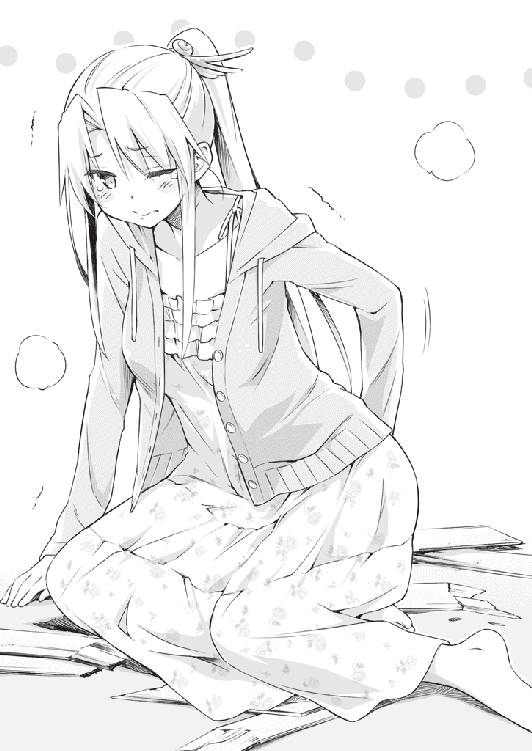
「覗いてたのはお前だろ！」
孝巳と翠のやり取りに、呆気に取られていた柘榴が不意に小さく吹き出した。
「可愛らしい御前様を、初めて拝見致しました」
行儀よく口を押さえたままひとしきり笑い終えると、彼女は興味深げにそう言った。
２
「紺野くん。君の理想とする女性のタイプを言ってみたまえ」
「タ、タイプ？ 何だよいきなり」
「君はこの青鶴高校において、極悪ヤンキーと恐れられている暗黒魔王だ。彼女の一人も出来れば、少しは丸くなるかもしれない」
「俺は別にヤンキーじゃない。ヤンキーがこんな風に、文化祭で漫才するかよ」
「だったら今こそチャンスだよ。この体育館には今、これだけのギャラリーがいる。一人くらい君の恋人に立候補しようという妖怪がいるかもしれない」
「何で妖怪に限定した！」
「ほら。あそこの砂かけババアなんてどうだろう」
「客を敵に回すな！ 失礼だろ！」
「あそこの鬼ババアは？」
「指を差すな！」
「あそこのババアは？」
「ただの中傷じゃねぇか！」
「あそこの壁のシミは？」
「シミだろうが！ 妖怪ですらねぇよ！」
「ふう。魔王様はなかなか好みがうるさいようで」
「今のエントリーのどこに選択の余地が......」
「じゃあ言ってみなよ、君のタイプを」
「そ、そうだな......まず、大人しい子がいいかな」
「ふむ」
「少し物憂げな雰囲気があって、だけど微笑みを絶やさない芯の強さもあって」
「ふむふむ」
「いつも優しく見守ってくれる、母性溢れる人っていうか......ハハ、何か照れちまうな」
「つまりあそこのシミだね？」
「ふざけんな！」
「大体、君は言ってることがおかしい。これだけギャラリーがいる中で、どうしてあえて壁のシミを選ぶんだい？」
「言ったのはお前だお前！」
「そもそも、どうしてヤンキーの分際で漫才なんてやるんだい？」
「お前に無理やりやらされてるんだよ！」
「そもそも、どうして世界から戦争はなくならないんだい？」
「急にテーマを重くするな！ 多分お前みたいな自己中がいるからだよ！」
「......紺野くん、心にもないことを言うのはやめたまえ。君は知っているはずだ。私が毎朝欠かさず、平和の祈りを捧げていることを」
「真顔で大嘘つくなっての」
「本当だってば。信じる者は救われる。私のひたむきな祈りは、いつかきっと神に届く。ポセイドン辺りに」
「何でポセイドンなんだよ......」
「ならドセイポンにしよう」
「誰だそいつは！」
「ポセイドンの従兄弟の友達のバイトの先輩に当たる、ゼウスポンの義兄・ドセイポンだ」
「完全にパチモンじゃねえか！ ちゃんとしかるべき神様に祈りやがれ！」
「じゃあ、いい人紹介してよ」
「合コンかよ！ 俺のダチに神はいねぇ！」
「神様の話などもう終わった。今は合コンの話をしているんだ」
「お前どこまで自由なんだよ......」
「一応、私の好みを伝えておく。恥ずかしいから、尻文字で伝えるね」
「余計に恥ずかしいだろ！」
「よいしょ、よいしょ」
「クネクネするなよ、気持ち悪い......」
「はいできた。分かった？」
「いや、さっぱりだ。何て書いたんだよ。優しい奴か？ 頼りになる奴か？」
「イケメン、と書いた」
「最低だなお前！」
「よし、今度ダブルデートしよう。私とイケメン、君とカベシミの四人で」
「一人おかしいだろ！ カベシミって何だ！」
「あそこのシミ付きヌリカベだよ」
「結局妖怪じゃねぇか！」
一週間振りに『お笑い研究会』に顔を出した孝巳を待っていたのは、文化祭に向けてのそんな漫才稽古だった。
特訓に重点を置き、ここのところは放課後になると翠の屋敷へ直行する日々だった。一応その旨は瑠璃に伝えていたのだが、どうも彼女はそれを快く思っていないようだった。
そんな瑠璃を気にしながらも、孝巳は今日まで半ば強引に欠席を貫いてきた。自分は三塚昂大に狙われる身だ。一日も早く霊力の使い方を覚え、せめて最低限のレベルにならねばならなかった。
一週間の集中特訓の甲斐あって、ようやく片足半歩ほどの進歩を自覚できた。だから一度瑠璃の機嫌を窺うため、こうして部室へとやってきたのだった。だが。
「今日はこれでおしまいにする」
台本を手に何度か稽古を繰り返していると、瑠璃が部活を早々にお開きにしてしまった。今日は遅くまで付き合わされるだろうと覚悟していたところへの、意外な宣言だった。
「もう上がるのか？ やけに早いじゃないか」
拍子抜けする孝巳の前で、瑠璃がノートを鞄にしまいつつズズッと鼻をすする。
「今日は人と会う約束があってね」
「人？ 誰だよ」
「私のファンだ」
「トイレに鏡でも見に行くのか」
「言ってくれるね。でも、これはあながち冗談というわけじゃない」
小さく笑い、ヘアピンのカッパごとこちらを向いてくる。別に機嫌が悪くて早退するわけではないようだ。
「知人と会うんだよ。コーちゃんという昔の顔馴染みだ」
「コーちゃん？」
「三塚昂大。柘榴のお兄ちゃんだよ」
え──
彼女がさらりと発したその名前は、今の孝巳にとって最も聞き流せぬ男のものだった。
思わずガバリと立ち上がり、「ど、どういうことだ!?」と勢い込んで詰め寄る。殺気立つ孝巳に対し、しかし瑠璃は何てことないように肩をすくめるだけだった。
「折り入って話があるというんだ。何て言ってたかな、『互いに霊導界から追放された者同士、君を口説くチャンスが欲しい』とか何とか」
「口説くチャンス......？」
それはつまり、スカウトということか？ 奴は、瑠璃を自分の味方に引き入れようとしているのか？ 頭取さんなどという回りくどい真似をやめ、とうとう直接交渉に踏み切ったということか！
「あいつと会うのは危険だ！」
両肩を引っ掴み、激しく揺さぶって喚く。瑠璃がうるさそうに指で耳の穴を塞いだ。
「何でさ。別に喧嘩しに行くわけじゃない。仮にそうなったとしても、私は負けないよ」
「お前、まだ風邪が治ってないだろ！ 六黒を使えないんじゃないのかっ？」
幽鬼統合体・六黒は、制御にかなりの体力と精神力を要するという。つまり今の瑠璃は、切り札を封じられている。「今の状態じゃ、私は《怨団化製作》を満足に使えない」──彼女自身が先日そう言っていたじゃないか！
「あいつは人殺しだ。会っちゃ駄目だ。今はネタ作りに忙しいんだろ？ 文化祭で今のネタやるんだろ？ な、行くのやめとけって」
「あのネタなんだけど、ちょっと終盤で行き詰まっててね。これは私にとってもいい機会なんだ。何せコーちゃんは関西人だ、きっといいアドバイスをくれる」
「かん......」
何ということだ。もしやこいつは、ネタ作りに協力してもらう代わりに三塚昂大と手を組むつもりではないのか。そんな馬鹿なと一蹴できないのが怖い。有働瑠璃は、笑いのためならそれくらいやりかねない人間だ。
愕然としたまま、しばし至近距離で瑠璃と見詰め合う。傍目にはいい雰囲気に見えたかもしれないが、孝巳には照れる余裕などなかった。
「......有働。三塚昂大って奴は、他人の弱い心を利用して、破滅させて、自分の道具にするような男だ。それを分かってんのか」
責めるように問うと、瑠璃はうんざりとした様子で孝巳の両手をよいしょと引き剥がしてきた。
「彼の罪状に興味はないよ。私がコーちゃんに期待するのは、笑いのセンスだけだ。極めてドライな利害関係だよ」
「そんなことやってたら、また鴫原とも疎遠になるぞ！ せっかく仲直りしたんだろ！」
「大丈夫だよ。翠には内緒にするから。忍び足で行くから」
「俺がチクらないと思ってんのか！」
「三塚家のいざこざなんて知ったことじゃない。私はそういうしがらみが嫌で、望んで霊導界を去ったんだ」
取りつく島もなく言い放ち、瑠璃が鞄を手にして背中を向けた。立ち塞がる孝巳を迂回し、長机のあちら側からトコトコと扉へ歩いていく。
「......相方の俺がやめろって言ってるのに、それでも行くってのか」
絞り出した呟きに、ふと彼女の足が止まる。振り向いた横顔は、何だか拗ねたようにむくれていた。
「君だって、相方である私の言葉なんて聞かず、翠や柘榴──霊導関係のことばかりにうつつを抜かしてるじゃないか」
「そ、それは」
「コンビとは一蓮托生なんだ。なのに君ときたら特訓ばかりに没頭して、私なんかほったらかし......今の私には、テニス教室のコーチと浮気する団地妻の気持ちが理解できる」
「理解しなくていい！」
突っ込んだものの、それ以上言葉は続かなかった。
確かに彼女の言う通り、最近の孝巳はずっと『お笑い研究会』を欠席し、特訓を優先してきた。間近に迫った文化祭のネタ作りへの協力など、一切しなかった。
「まあとにかく、アドバイザーは本当に必要なんだ。目の前に関西人がいるのに見過ごす手はないよ」
石像のように固まった孝巳に笑ってそう言うと、瑠璃は「ほなまた！」と片手を振って出ていってしまった。
......部室に一人残された孝巳は、しばらくただ呆然と閉じられた扉を見ていた。
とんでもないことになってしまった。瑠璃が三塚昂大側に付く......それはあらゆる意味で最悪の事態だ。
何故たかが漫才にそこまでする？ あいつは人を笑わせるためなら、人殺しとすら手を組むのか？ ようやく和解できた半身とも言える親友と、平気で決別できるのか？
どれくらい立ち尽くしていただろうか。
不意に扉が音もなく開き、一人の少女が姿を現した。翠だった。
「鴫原......」
瑠璃の親友たる長髪の美少女は、入室する気配もなく扉の前に佇んでいる。やがて薄紅色の小さな唇が開き、彼女は淡々とした口調で孝巳に告げてきた。
「あの子のことは放っておいていいわ」
「え......」
「貴方は今、貴方ができることをやりなさい。さあ、道場に行くわよ」
３
それからまた、『お笑い研究会』とは疎遠の日々が始まった。
放課後から夜遅くまで、翠と柘榴の指南を受けて霊力の訓練に励む。が、ただでさえ集中力を要するのに瑠璃の顔がいちいちチラつき、手合わせの内容は散々だった。
あれから瑠璃は、昂大に会って何を話したのだろうか。危険な目に遭っていないだろうか。部室を出ていく直前の彼女の笑顔は、どことなくいつもと感じが違っていなかったか......考えるほどに不吉な予感は肥大し、気もそぞろになる。
そんな孝巳とは対照的に、翠はあくまでいつも通りだった。
親友が敵から誘いを受けているというのに、心配している様子が微塵もない。瑠璃の話題を出しても、「今は気にするのはよしなさい。上の空で修業してると怪我をするわよ」と一蹴してくるだけ。それが孝巳にはすこぶる不可解だった。
（......気を揉んでても仕方ない。とにかく今は特訓あるのみだ）
渦巻く不安を叩き出し、霊力を知覚するための瞑想を行うべく、背筋を伸ばして正座する。翠が言ったように、今はやれることをやるしかない。
その時、ふと携帯がメールを着信した。
飛びつくように大急ぎで確認してみると、それは瑠璃からの返信だった。何度か連絡を試みていたのだが、これまで一向に応答がなかったのだ。
『鋭意ネタ創作中。期待してて』
書かれていた文章は、それだけだった。
文化祭まで一週間と少しとなった日。
孝巳はとうとう休み時間に瑠璃の教室へ行ってしまった。
翠には放っておけと言われたものの、さすがに限界だった。せめて彼女の状況だけでも知っておきたい......でなければ、とても訓練に身が入らなかった。
瑠璃のクラスである一年Ｅ組の教室を覗いてみたが、そこに彼女はいなかった。集まって談笑している者や、机に突っ伏して寝ている者、孝巳に気付いて震え上がる者。そのいずれにもカッパ型ヘアピンの猫っ毛を見出すことはできなかった。
（トイレにでも行ったか？）
とりあえず誰かを捕まえて尋ねてみようかと思案していたところ、不意に孝巳のすぐ後ろで元気な声が上がった。
「やだ、紺野くんだよね？」
振り返ると、見覚えのない女生徒が立っていた。
お下げ髪の、人懐っこそうな少女だ。身長は瑠璃より少し高いくらいか。クリクリとした大きな両目で、何やら興味津々にこちらを見上げている。
「......あんたは？」
不審を込めてそう問うと、途端に少女が「はわわ」と仰け反った。
「やだ、やっぱ怖いじゃない！ ルリポンが『ただのなんちゃってヤンキー』とか言うから、すっかり油断しちゃった！ やだ、お願いだから殴らないでね」
両手を合わせ懇願してくる少女に、孝巳は当惑しつつ頭を掻いた。怖い顔にならないよう、極力柔和な目許を意識して話す。
「俺はヤンキーじゃないし、好んで人を殴る趣味もない。......そのルリポンってのは、有働のことだよな？」
孝巳の質問に、少女が朗らかにコクリと頷く。畏縮している割にはあまり危機感の窺えない態度だ。臆せず声をかけてきた辺り、実は肝が据わっているのかもしれない。
「そうだよ。私、このクラスの辻早苗っていいます。今度の文化祭の実行委員やってるの」
「実行委員......」
そういえば、瑠璃が言っていた。文化祭のステージに出ることにした理由は、「実行委員のさっちゃんに相談された」からだと。それがこの辻早苗か。
「紺野くん、ステージ出てくれるんだよね？」
「そ、それは」
やっぱり当人のようだ。「あんたが相談なんかしたせいで、こっちは散々だ」と苦情を入れたかったが、とりあえずお茶を濁して質問を重ねる。
「ところで、有働がどこ行ったか知らないか？ 教室にいないみたいなんだけど」
「やだ、ルリポンなら休んでるよ。ここんとこずっと風邪気味だったから」
「......そうか」
学校には来ていないのか。家で大人しくしてくれているなら、願ってもないことだ。
孝巳の胸中を知らず、早苗が呑気に笑う。
「ルリポンはチートな霊能者だから、病気とは無縁だと思ってたんだけど」
「それ、関係あるのか？」
「やだ、ない？ じゃあ普通にただの風邪？ やだ、でもルリポンなら大丈夫か」
「......あんたも風邪とは無縁そうだな」
一応突っ込んでみると、辻早苗は「やだぁ」と照れながら孝巳の肩をバシバシ叩いてきた。気さくなのはいいが、瑠璃とはまた違った意味で変な人だった。
類は友を呼ぶのかもしれない。
大音量のメロディーが鳴り響く狭い一室で、孝巳はソファーに正座して、じっと正面の壁を睨んでいる。
音楽に乗って流れてくるのは、もはやすっかり聞き慣れた少女の熱唱。楽しげなオンステージを続けるそんな彼女を無視して、呼吸を整えることに専心する。
体内で霊力を知覚し、練り上げ、肺胞に押し留める。やがて胸に熱が充満した頃を見計らい、全酸素を吐き出すように、視線の先の一点に向かって──
「ゴルァァァァー！」
ひたすらに雄叫びを放ち続ける。演奏をも凌駕する自身の咆哮に、ここ数日の鬱屈した思いが少し晴れたような気がした。
「紺野くん、今日は少し趣向を変えましょう」──今日も鴫原邸の道場へ行くつもりだった孝巳は、いきなり翠からそんな提案をされた。土曜日なのでみっちり特訓に取り組もうと思っていたところへの、突然の不意打ちだった。
訳も分からず駅前まで引っ張ってこられると、待っていた柘榴と合流し、三人で近くのカラオケ店に入る。そして孝巳は先ほどから延々とこの絶叫......すなわち《喝破》の特訓を行っているのだった。
「なあ、こんなことしてていいのか」
曲が終わったタイミングを見て、改めてそんな意見を述べる。
至極もっともだと思われるその質問に、しかし翠はウーロン茶を傾けつつ肩の髪を払っただけだった。
「屋敷や自宅でしていたら近所迷惑でしょう」
「そうじゃなくて、有働のことだよ。あいつは今......」
メールを見た限り、瑠璃はネタの改稿に手応えを感じているようだ。それはつまり、彼女が昂大の申し出を受諾し、アドバイスを得たことを意味しているのではないか。
ならばこんな所で悠長に遊んでいる場合ではない。一刻も早く引き戻すために動かねばならないはずだ。それでなくとも廃銀行での一件以来、三塚昂大の行方は杳として知れない。彼にこの地を離れられたら、もはや追跡は限りなく不可能に近いのだ。
そんな孝巳の危惧をよそに、翠はリモコンによる曲の検索に終始していた。傍らでは例によって、柘榴が慎み深く端座している。
「幸い三塚昂大は、柘榴との決着に執心してくれているわ。瑠璃に接触したことからも、すんなりとこの地を離れる気はないことが分かる。だから慌てる必要はないわ。貴方は黙って......もとい、喚いて修行なさい」
確かに昂大は、孝巳にも近い再会を示唆している。彼はまだこの町のどこかにいるのだろう。それだけに昂大が何ら動きを見せないのは、かえって不気味だった。
（しかし、こいつらは何故こうも落ち着いてるんだ）
仮にも瑠璃は、『凶姫』の二つ名を持つ稀代の怨霊師だ。幼少時から麒麟児と称され、荒御霊と恐れられる鬼を六体も従えている天才だ。
そんな彼女が昂大の側に付いてしまう事態は、こちらにとって痛恨の大打撃になるはずだ。瑠璃と翠は再び決別し、事の次第によっては柘榴もまた瑠璃と敵対することになるかもしれない。決して呑気に構えていられる状況ではないと思うのだが。
そんなことを考えていると、柘榴と視線がぶつかった。
今日も純白の制服を乱れなく着こなしており、清楚で奥ゆかしい雰囲気を醸し出している。お陰で手に持ったタンバリンとマラカスがことさら浮いていた。
「どうでしょう紺野様。ご休憩がてら、翠様とデュエットなど」
彼女が微笑みながらそう言うと、即座に翠がハッと顔を跳ね上げ、次いで何やらモジモジし始めた。
「そ、そんな、まだ早いわ。恥ずかしいし......」
白い頬を紅潮させ、長く垂れた髪の毛先をしきりにいじくっている。毎度毎度これだけの弾けっぷりを見せておいて、今さら恥ずかしいもないだろ......
「大丈夫です翠様。最初は誰でも緊張するもの」
「でも......」
聞くところによると、今日のカラオケは柘榴の発案したものだったらしい。普段の激しい実戦訓練とはかけ離れたこの特訓の意図を、孝巳は何となく理解している。
確かにこれは《喝破》の訓練でもあるのだろうが、彼女はそれを兼ねてプライベートの翠に触れようとしているのだ。孝巳の頼みを律儀に聞き入れ、友人となる術を模索してくれているのだろう。彼女の翠への呼称が「御前様」から「翠様」に変わっていることからも、それは明白だ。
そしてそのことを察しているだけに、孝巳はこの「鴫原翠リサイタル」に強い抗議ができずにいるのだった。
「ならば顔が見えぬよう、明かりを消しましょう」
困り顔でマイクをこねくり回す翠の姿が、たちまち暗闇に溶ける。柘榴が壁のツマミをひねって照明を落としたのだ。
「待って！ まだ心の準備が」
「私も初めてのときは緊張致しました。でも、社会に出ればいつかは経験せねばならぬこと。実際に臨んでみれば、意外と呆気ないものでございます」
「......デュエットだよな？」
二人の怪しい会話に、孝巳は訝しげに首を傾げた。
「緊張して上手くできないかも......」
「ご心配なく。紺野様がリードして下さいます。防音天井の穴を数えていれば終わります」
「確認するが、デュエットだよな？」
テレビ画面だけが煌々と光る部屋の中、届いてくる彼女たちの声がやけに淫靡に感じられた。デュエットって、他に意味があったっけ......いや、デュエットはデュエットのはずだ。小学生のマナとフクですら、それくらいはやっている。
「ああ、マイクが震える......」
「翠様、あまり強く握られませぬよう。優しく、包み込むように、ゆっくり口に近付けて......あ、歯を当ててはいけません」
「何の指導だ！」
堪らず叫んだが、柘榴は構わず指南を続ける。
「スイッチはオンになっていますか？ では、ゆっくり上下に動かしてみましょう」
「ちょっと待て！」
立ち上がった拍子に、孝巳は脛をテーブルに打ちつけた。グラスを引っくり返してしまったが、幸い中身は空だった。
「ほら、段々と固くなって参りました」
「マイクは元から固いんだよ！」
「先端を少し撫でてみましょうか」
「もうよせ三塚！ 鴫原に下ネタはまだ早い！」
脛を擦りつつツッコミを飛ばし続けたが、二人は止まらない。
「淑女のたしなみとして、匂いも嗅いでおきましょう」
「どういう淑女だ！」
「スンスン......こう？」
「ていうか鴫原！ お前もおかしいと気付け！」
「結構です翠様。これでチン......マイクの準備は完了です」
「完全にアウトだ！ ほぼ言っちゃったじゃねぇか！」
謎の講習を一通り受けたのち、翠が柳眉を吊り上げて力強く頷いた。
「覚悟は決まったわ。私も鴫原家霊導師・三十七代正統......初めての男女の共同作業、見事こなしてみせる！」
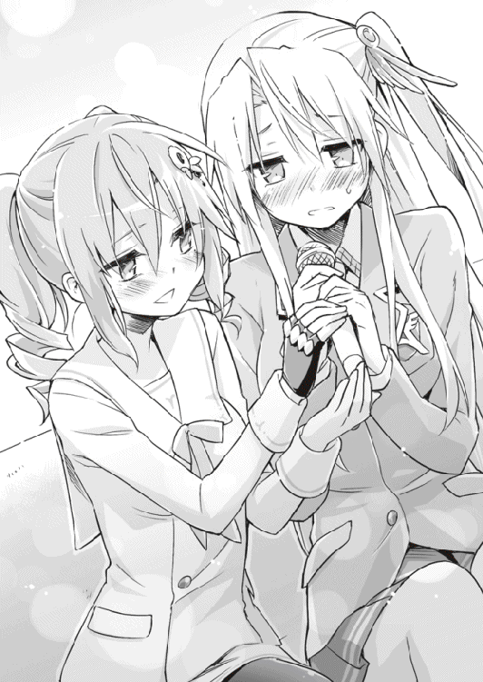
「その意気です翠様！」
孝巳を取り残し、遺憾な主従が盛り上がっている。やはり霊感とは、人をボケたがりにさせるのだろうか......
「柘榴、曲を入れて！ 『静観飛行』よ！」
「はっ」
「俺のパートがねぇよ！」
４
結局ろくに《喝破》の特訓ができずにカラオケが終了すると、孝巳はそのまま道場へと向かった。
意味不明なノリに巻き込まれたお陰で、精神がいささか消耗していたのだが、これぐらいで鍛練をサボるわけにはいかない。昂大はいつ現れるか分からないのだ。
翠と柘榴は、帰るなりさっさと二人で姿を消してしまい、午後十時近い現在まで一度も道場を訪れていない。お陰で手合わせの相手もおらず、霊力を練るための瞑想しかできなかった。これは体内に流れる霊力を感じるための、もっとも効果的な方法だそうだ。
（瞑想だけなら、家でやっても同じだな......今日はもう帰るか）
明日は日曜日なので、翠と柘榴も長く付き合ってくれるだろう。しっかり寝てから仕切り直そう。
そう決めて鞄を取り、扉へ歩き出したとき。
戸が静かに開き、人影が中に入ってきた。
温厚そうな顔立ちをした、痩せ気味の男性だった。栗毛の総髪を後ろで束ねており、まるで陶芸家か何かのような物々しい雰囲気がある。今時珍しく着流し姿という純和風の風体が印象的な、四十代くらいの男だった。
「おや、帰るところだったかな」
突っ立ったままの孝巳に向け、男が口許を柔和に綻ばせる。その顔に、ふと長髪の美少女霊導師の面影が重なった。
「顔を出すのは翠に止められていたんだが......しかしながら、娘が連れてきた学友、それも男の子となると、どんな人間か確認したくなるのは男親の当然なる欲求というもの」
言い訳のように呟き、一人で頷いている。その独り言に彼の正体を確信する。
（この人、鴫原の親父さんだ）
慌てて姿勢を正し、深々とお辞儀をする。知り合いの親、しかも女子の父親......孝巳は知らず全身に緊張が走るのを感じた。
「初めまして。青鶴高校の一年、紺野孝巳といいます。ここ数日ずっとお邪魔していたのに、ろくな挨拶もせず大変失礼しました」
突発的事態だったが、詰まることなく挨拶ができた。
中学時代の野球部はことさら礼儀に厳しく、目上への応対は軍隊ばりに叩き込まれた心得だった。当時は面倒臭かったが、ああいう教育も受けておくものだ。
「ほう、予想以上にしっかりした少年じゃないか。『何だかいつも喚いている』と聞いていたが、これは一本取られた」
（鴫原の奴、雑な紹介しやがって......）
男は次いで、「初めまして。翠の父、鴫原之臣という」と片手を差し出してきた。短い握手ののち、神棚のある壁の下まで連れて行かれる。その一部分だけ、木板ではなく畳になっているのだ。
誘われるままに並んで腰を下ろすと、見渡す道場がやけに広大に見えた。所在なく天井を見上げると、翠がぶち抜いた大穴が相変わらず口を開けていた。
「色々と巻き込まれて、大変な思いをしているようだね」
同情するような之臣の声に、「いえ」と恐縮して首を振る。気まずい空気になることを懸念していたので、彼が喋ってくれたのは有り難かった。
「実はね、孝巳くん。君とは一度、どうしてもこうやって話をしたかったんだ」
「は、はい」
こちらを向いて改まった之臣に、孝巳は正座のまま神妙に頷いた。いつか恋人の実家を訪ねたら、その時もこんな心持ちになるのかもしれない。
「是非とも二つ、お礼を言いたいことがあってね」
予期せぬ言葉に、パチパチと瞬きを繰り返して「お礼？」と復唱してしまう。
「一つは翠の良き友人となってくれたこと。あれは昔から人見知りが激しくてね、学校で上手くやれているのか心配だった」
（ああ、そういうことか）
もっと深刻な内容かと身構えてしまった。その親らしい謝礼に内心胸を撫で下ろし、孝巳は努めて明るい口調で答えた。
「大丈夫です。学校には有働もいますし、きっかけさえあれば友達なんてすぐできます」
学校内外から『人間魚雷』と恐れられている自分を棚に上げ、そう断言する。......今の言葉は、きっと自身に向けたものでもあるのだろう。
孝巳とて、好んで孤高でいるわけじゃない。友達はいくらだって欲しい。かつて周りにたくさんのチームメートがいた頃の記憶が、何倍も美化されて今でもかがり火のように心の片隅に灯っている。
あの頃は友達を作ることなど簡単だった。足掛かりとして『野球』という要素があったからだ。しかしそれを失った今となっては、会話の糸口が皆目見付からない。今しがた容易く口にしたその「きっかけさえあれば」が、本当は最も高いハードルなのだ。
無責任な軽口に自己嫌悪に陥る孝巳をよそに、鴫原之臣は目を細めてしみじみと語り出した。細身に似合わない活力を持った、よく通る胴間声だった。
「ここ最近、娘は明るくなった。あれだけ話題にするのを避けていた瑠璃ちゃんのことも、よく話すようになった。その契機を与えくれたのは孝巳くんなんだろう？」
「いえ、自分は大したことは......もしかして、それが二つ目のお礼ですか？」
「いや。二つ目のお礼は翠の親としてではなく、有働壮馬の友としてのものだ」
......それはすなわち、瑠璃の父のことだ。娘を守り命を落とし、その娘によって怨霊とされてしまった、悲運の霊導師だ。この人は友人だったのか。
「──孝巳くん。壮馬の霊を解放してくれたこと、伏して感謝する」
「そ、そんな」
翠のことはまだしも、そのことに関しては礼を受ける筋合いではない。
あれは瑠璃が自分で決着をつけたことだ。百歩譲ったとしても、孝巳は少しその手助けをしたに過ぎない。
「君がそのきっかけとなったことは間違いない。壮馬の霊は、これまで霊導師の誰一人として還すことが叶わなかった。瑠璃ちゃん自身の強い意思を覆せる人間は、『獣筋』三家にすらいなかったんだ」
「............」
「私と壮馬は長い付き合いでね。霊導師としては彼に敵うべくもなかったが、修行を離れれば兄弟のような間柄だった。家もウチを出たすぐそこだよ」
瑠璃と翠が互いを姉妹同然に思うように、二人の父親もまたそんな関係だったわけだ。
「あの男のくだらない漫談を、夜通し聞かされたことが何度もある。霊導師でありながらお笑い養成所に入ろうとしたのを、必死で止めたこともある。会心のネタを娘に鼻であしらわれたと、居酒屋で酔い潰れたこともあったな」
（かなり楽しい人だったんだな。あの娘にして、この親ありって感じか）
孝巳の口許にも自然と笑みが浮かんでしまった。
「そんな壮馬が命を落とし、しかも怨霊になったと聞いたときは、心が引き裂かれるような思いになったものだ。私はあの時ほど自身の未熟さを呪ったことはない......名門などと祭り上げられていても、所詮は友の魂すら救えぬ凡俗かと」
之臣の吐息に混じり、どこかで鹿威しの音が遠く鳴った。
有働壮馬の悲劇は、何も瑠璃と翠の間だけにあるものではない。彼を取り巻く全ての者たちに等しく見舞われた悲劇だ。孝巳はふと、チームメートだった小田切和人の死を知ったときの虚無感や喪失感を思い出した。
「私にはどうすることもできなかった。だから君に感謝したい。君は壮馬を救い、翠を救い、瑠璃ちゃんを引き戻してくれた。私にとっては恩人だよ」
「有働を、引き戻した？」
「あのまま壮馬、幽鬼、そして多数の怨霊に憑かれる日々を送り続けていたら、きっとあの子はまともな人生を歩めなかった。それを君が引き戻してくれた。それに......君は瑠璃ちゃんの相方なんだろう？」
そう言って笑った之臣に、孝巳は何も返せなかった。蘇ったのは、制止も聞かず部室を出ていってしまった少女の小さな背中だった。
今ここに自分がいることを考えれば、とても「はい」とは言えない。相方と呼ばれるようなことを、今の孝巳は何もしていない。
「血は争えないね。あの子は桁外れの霊感だけでなく、そういうところまで壮馬にそっくりだ。いや、父以上かな」
「............」
「こういう言い方をしては何だが、あの子は霊導界にとって猛毒にも良薬にもなり得る存在だ。あの子は一つ間違えば──三塚昂大をも超える災厄になる」
「そ、そんなことは」
「瑠璃ちゃんのことは、生まれた頃から知っている。とても明るく利発な子であるのも知っている。......が、一方で私たちはそれほど恐れているのだよ。幽鬼すら屈服させる、あの『凶姫』を」
幽鬼。長い月日を経た怨霊が、鬼となった存在。そのアップグレードした霊たちを、瑠璃は自身に六体も憑けている。
最凶の鬼たちをも従わせる魔の少女。おそらくそれが『凶姫』という名の由来だろう。
「きっと君は、あの子が道を外さぬための重要な楔なのだと思う。だから私は、勝手ながら君に期待を寄せている。霊導師や言霊使いではなく、相方としての君にね」
......何だかとても重要な役目を託されている気がする。
（明日、あいつの家に行ってみるか）
稽古はその後でも遅くない。もとより瑠璃のことは、ずっと気掛かりだったのだから。
そんなことを考えていると、之臣が笑顔から一転、ガラリと真剣な表情になった。
「ところで孝巳くん、最後にこれだけは確認しておかねばならない」
鋭利な眼光に射抜かれ、再び体に緊張が走る。孝巳は唾を一つ嚥下し、覚悟を決めて之臣の二の句を待った。またどこかで鹿威しが鳴った。
「瑠璃ちゃん。柘榴ちゃん。そして翠」
「............」
「君の本命は──誰かね？」
「............」
「ま、待ってくれ！ やはり言わなくていい！」
孝巳の返事より早く、たちどころに之臣が首と手を振ってきた。
「いや、落ち着け之臣。まだ翠と決まったわけではないだろう。瑠璃ちゃんと柘榴ちゃんだって、あれだけの器量良しではないか。だが、娘が選ばれないとしたら、それはそれで心外だ。ああ、でも......もし翠が選ばれたとき、私はそのショックに耐えられるか？ 壮馬の恩人を、翠の友人を、くびり殺して庭に埋めてしまわないだろうか......」
頭を抱えブツブツと呟く之臣の懊悩を、孝巳は半ば放心して見詰めていた。
「もうこんな機会はないかもしれない。やはり聞くべきだな。孝巳くん、教えてくれないか。......いや！ いい！ やっぱりよしておく！ その口を固く閉ざすんだ！」
「......あの、お父さん」
「お父さん!? 私のことかね!?」
この世の終わりのごとく悲鳴を上げた之臣に、孝巳は慌てて「し、鴫原さんっ」と言い直した。彼のリアクションに動揺し、つい口を滑らせてしまった。
「──孝巳くん、悪いが諦めてくれ。ウチに娘などいない」
「落ち着いて下さい鴫原さん」
「仮にいたとしても、霊能者に娘はやれない。鴫原家はごく普通の一般家庭だ。私は霊など見たこともない」
「それじゃ今までの会話が破綻します」
「私はそれほど恐れているのだよ。君を」
「とにかく一度、深呼吸をしましょう」
普段のようなツッコミを入れるわけにもいかず、孝巳は根気よく之臣に対処し続けた。
......おそらく空耳だろうが、天井から重い溜息と、クスクスという忍び笑いが同時に聞こえたような気がした。
５
翌朝。孝巳は店を二軒回って花束を一つずつ買うと、まず病院へと向かった。
受付で「高橋晴一郎さんに会いたい」と伝えたが、やっぱり面会謝絶だった。生邪魔となっている彼が目覚めることなどないのは分かっていたが、それでも顔くらい見られたら......そう思っていたのだが。
やむを得ず、間違えないよう確認してから花束の一つを看護師に預け、その足で瑠璃の家に赴く。道に迷いながらも、何とか鴫原邸に程近い閑静な住宅街の一角に「有働」の表札を発見し、孝巳はインターホンを一つ鳴らした。
（結構いい家だな）
大きな二階建ての一軒家。庭もそれなりに広く、優に車が二台は停められそうだ。半開きになった鉄格子の門は西洋風の凝った作りで、薔薇の蔓のようだった。
......その後チャイムを何度か鳴らしてみたが、中からの応答はなかった。家にいるはずだが、もしかして寝ているのだろうか。
覗き込むと、門と同じく家のドアが僅かに半開きになっているのに気付く。不用心にも鍵が開いていた。
意を決して門を通り、ドアの隙間に向けて再び来訪を呼びかけたが、相変わらず人が出てくる気配は微塵もない。手にした花束で軽く肩を叩きつつ、しばし途方に暮れる。
「ん？」
垣間見えた玄関に、ふと一つの違和感を見出す。
靴が一足もない。隙間から漂ってくる空気は何だか淀んでおり、長い間この家が閉め切られたまま換気されていないことを物語っていた。
（誰もいないのか？）
瑠璃の父が死去しているのは知っている。いつだったか兄弟もいないと言っていた。ならばここに住んでいるのは、瑠璃と母親だけになるのだが......靴が全くない上にドアが開け放しというのは、少しおかしい。
五分ほど逡巡してから、孝巳は仕方なく靴を脱いで上がった。
失礼極まりない行為なのは承知していたが、瑠璃は風邪を引いていて、しかも三塚昂大の誘いを受けている身なのだ。ここ数日また連絡が取れていないし、やはり心配だった。
（まさか、こんな形で有働の家に来ることになるとは......）
女子の家にお邪魔するなど、小学三年のお誕生会以来だ。いや、正確には翠の家に毎日のごとく入り浸っているのだが、あれは道場に通っているだけだ。母屋の方には一度も行ったことがない。
家人がいる可能性を考慮して、まずはダイニングへ顔を出してみる。
最低限の調度品が置かれているだけの、小ざっぱりとした広い空間がそこにあった。綺麗に清掃されているのだが、どうにも生活の匂いが感じられない。どこもかしこもガランとしていて、やけに殺風景だった。
そのまま廊下を引き返して二階へ上がると、左右に二つずつドアがあった。
その一つに、ノートの切れ端が画鋲で留められてある部屋を発見する。黄色く変色した古い紙には、小さく「るり」と走り書きされていた。
そういえば、部室の扉に貼られた表札も「おはらゐけんきゅうかい」という適当極まりないものだった。彼女の大雑把さは、私生活でもいかんなく発揮されているみたいだ。
「......有働、いるか？ 紺野だ」
ノックをしてみたが、返事はない。さらに数度呼びかけても応答がないことを確認すると、「入るからな」と断りゆっくりとドアを開ける。
......中を見た瞬間、孝巳は戸惑ってしまった。
思ったよりも広々とした、軽く十畳はある部屋。やはり瑠璃はいなかった。
机にベッドに本棚にクローゼット......部屋模様自体はそれほど特別なものではない。戸惑った理由は、本当にそれだけだったからだ。
机の上には何もない。ベッドには布団すらない。本棚には数冊の参考書があるだけ。微かに開いたクローゼットから見えたのは、一枚のブラウスのみだった。
（これが、有働の部屋？）
中央辺りに立ち、つぶさに室内を眺める。
一階と同じく、ここにも全く生活感がない。整頓された綺麗さとは違う、高校生の少女が暮らすにはあまりに無機的な、脱け殻のような私室だった。
「彼女らしいと言えば、彼女らしいかな」
いきなり背後で上がったその声に、孝巳は小さく飛び上がり即座に振り返った。
ドアを見た瞬間、全身が凍りつく。否、振り向く前から、それが誰なのかは声ですでに分かっていた。
──三塚昂大が、そこにいた。
病院で会ったときと同じ涼しげな瞳で、彼は穏やかな微笑を浮かべていた。以前と変わらないレザーのシャツとカーゴパンツ。手足の長い、スラリとした長躯。前髪から覗く中性的な面立ちは端正ではあるが、あまり柘榴とは似ていなかった。
「三塚昂大......！」
「やあ紺野孝巳くん。君も瑠璃に会いにきたのかい？ 残念ながら留守のようだね」
友人に接するような気さくな口調で言うと、昂大は入口の壁にもたれ腕を組んだ。一度小さく室内を見回し、「つくづく変わった子だ」と率直な感想を漏らす。
「その様子だと、君もここへ来たのは初めてなのかな。少しほっとしたよ」
「テメェ......」
警戒したまま数歩下がった孝巳に、彼はやれやれと肩をすくめてみせた。
「そう構えることはない。せっかくだから、まずは会話くらいしようじゃないか」
「会話だと？」
油断なく昂大を注視しつつ、状況把握に努める。
奴は何故ここへ来た？ もしやまだ瑠璃から色好い返事を貰っていないのでは？ ならば瑠璃はアドバイスを受けることを諦め、結局一人でネタを書いているのだろうか？
いや、そうとは限らない。単に孝巳が尾行されただけかもしれないし、味方に引き入れたからこそ瑠璃の家に来た可能性だってある。
「紺野孝巳くん」
孝巳の思索を遮り、昂大が鷹揚に口を開く。
「君は瑠璃のことをどれくらい知っている？ お父さんが亡くなっていることは、もちろん知っているね？ 何せ、壮馬さんの怨霊を霊導したのは君なんだろう？」
「......霊導したのは俺じゃない、有働自身だ。あいつが自分で決着をつけたんだ」
「では、彼女がたった一人でこの家に住んでいるということは？」
「一人？」
我知らず繰り返した孝巳の囁きに、昂大の楽しげな笑い声が重なった。
「ほう、知らないのかい？ これはちょっとした優越感だな」
「一人ってのはどういうことだ。お袋さんは一緒に住んでないのか」
「瑠璃の母親はすでに他界している。壮馬さんの死より、ずっと前だ」
思わぬ相手から思わぬ事実を開示され、孝巳はにわかに平静を失った。
表下の道路を車がノロノロと通過していく音が、ガラスの窓越しに聞こえた。
「幸い壮馬さんは、資産家であり倹約家だったそうだから、一人になった瑠璃が生活に困ることはなかったらしいけど......それでも彼女の孤独は容易に推し量れるね」
この家に、今日までたった一人で。
瑠璃の父が死んだのは、彼女が小学六年のときだったはず。それから今日までの約四年強、彼女はずっと一人で生きてきたというのか。父を亡くし、霊導界を追われ、つい先日まで翠とも決別したまま。
「親戚や鴫原家が引き取ろうとしたらしいけどね、彼女は頑としてそれを拒否した。それは彼女の誇りだね。瑠璃はくだらない俗物どもの集団に埋没することを嫌い、あえて孤高の道を選んだ......素晴らしいよ」
しかしその結果、彼女は独りぼっちとなってしまった。
（だから、あんなに拗ねてやがったのか......？）
だから彼女は一人にも拘わらず『お笑い研究会』などを作って、毎日学校に居残っていたのでは？ 風邪気味のくせに部室に留まり続けたのも、誰もいないこの家にできるだけ帰りたくなかったからでは？
かつて瑠璃は、「自分がお笑い好きなのは、父の影響だ」と言った。それは嘘ではないだろう。が、そこにはやはり寂しさもあったのではないだろうか。お笑いとは、本人の趣味や父との繋がり以上に、自身の孤独を慰めるためのものだったのではないのか。
（俺は......）
もしかしたら瑠璃にとって、「相方」とは言葉以上の意味を持つ存在だったのかもしれない。一人きりの世界で彼女が求めた、孤独の癒やし手だったのかも。その相方が霊導師の特訓ばかりに明け暮れ出したのだから、彼女がいじけるのも無理はない。
そして三塚昂大は、そんな時に手を差し伸べてくれた人間なのだ。
「......有働と何を話した」
「お互いのより良い今後について提案をしたのさ。瑠璃にとっても、決して悪い話じゃない。彼女の気高い精神には敬意を表すけど、一人で生きるのは辛いものさ」
それはつまり、やはり瑠璃の籠絡ということか。
「三塚。お前がこだわってんのは、本当は俺じゃなくて有働か？」
「............」
「これだけは言っておく。あいつは俺が凄い霊能者だから隣に置いてるわけじゃない。俺はただの、漫才の相方だ」
「君が言霊使いという稀有な存在であることが、本当に無関係と言えるのかな？ 瑠璃の傍にいる以上、君は霊と無縁ではいられない。最低限の霊能者でなければ、とても彼女の相方は務まらないよ」
まるで瑠璃の幻影でも探すように、昂大が再び部屋を見回す。
「子供の頃、瑠璃は僕に言った。『コーちゃんは凄い』と」
「............」
「僕の才能を誉めてくれたんだ。父に疎まれ遠ざけられていた僕は、その一言にずいぶんと救われたものさ」
思えば、昂大には関西の訛りがない。ずっと地元にいた柘榴が関西弁を喋らないのは謎だが、もしかしたら昂大に限っては、預けられた家が他の地域だったのかもしれない。
「僕は結局、最後まで父に認められなかった。でも、瑠璃だけは認めてくれた。彼女の隣こそが、僕のいるべき場所なんだ。そこに今──君という男がいる」
「............」
「僕はそれが許せない。君に瑠璃の何が分かる？ 瑠璃と何を共有できるというんだ？」
「そ、それは......」
「僕には瑠璃が分かる。彼女と僕は似ている。豊かな才に恵まれた故に周囲から疎まれ、異端の烙印を押され、理不尽に追放された哀れな被害者だ。そんな僕たちが引かれ合うのは自然なことだろう？」
「──お前と有働が似てる？」
昂大の言葉は、期せずして孝巳の動揺を静めてくれた。怖じ気など吹き飛ぶほど、それは看過できない言葉だった。
「お前と有働は正反対だ」
「何？」
「前に言ったよな。お前、殺し屋になるつもりだって」
昂大は笑みを崩さない。しかし、その両目はもう笑っていなかった。
「呪殺師のことかい？ 心配しなくとも、その道にまで瑠璃を付き合わす気はない。重要なのは、彼女が僕の傍にいてくれること......それだけだ」
「その呪殺師ってのは、なりたくてなるのか？ それとも、仕方なくなるのか？ お前が本当になりたかったのは、三塚の当主じゃないのか？」
「分かったように語られるのは不快だね」
低く吐き捨て、昂大が指を鳴らした。
たちまち彼の前に、ヒョロリとしたロングコートの男が顕現する。吉永透。娘のため復讐に走り、久米美知恵の恋人を誤って刺殺してしまった、悲しい中年の生邪魔。
（もう少し時間を稼がないと......）
こうして昂大と鉢合わせた以上、会話が終われば戦闘になる。それは分かっていた。
だが、まだ駄目だ。せめて一度だけでも《喝破》が放てる準備が欲しい......孝巳は体内の霊力を練り上げることに尽力しつつ、対話の継続を試みた。
「有働はお前とは違う。お笑いやるのも、鴫原と決別してまで主義を貫いたのも、今でも幽鬼を憑けてるのも、全部あいつが望んでやってることだ」
「何を言うかと思えば......なら僕が呪殺師を志すのも、僕自身が望んだ道だ。たとえ三塚の当主になっていたとしても、いずれ僕は霊導師を捨て、この道を選んでいただろう。こう言えば満足かな？」
「それが正反対だって言ってるんだ」
次第に体内が熱を帯び始める。が、いつもの集中できる環境と勝手が違い、霊力が予想以上に溜まらない。贅沢は言わない。一回分でいい。
「お笑いってのは、あいつの霊導なんだよ。有働は霊導師を辞めちゃいない」
「彼女は霊導師の名を剥奪されている。僕も同じだ。僕たちはもう、霊導師として生きていくことは許されない」
「肩書きがどうした。霊導師しか霊導しちゃいけないなんて道理はないんだ。霊導はそんな大層なもんじゃない。誰かをちょっと笑顔にしてやる、それだけでも立派な霊導だ。あいつは人を笑わせる、お前は人を泣かせる──それが正反対じゃなくて何だってんだ」
「......フン。まさか君に霊導の何たるかを説かれるとはね」
自嘲気味に口角を歪め、昂大が壁から背を離した。これ以上の引き延ばしは無理だ。
「いずれはっきりするさ。僕と君、瑠璃がどちらを選ぶか」
「俺の知ってる有働瑠璃は、お前なんかを選ばない」
「僕の知っている瑠璃は、きっと僕を選んでくれるさ。......会話は終わりだ。さあ、今度こそ君の真価を見せてもらおう。まずは吉永でお手並み拝見だ」
昂大の宣告を合図に、吉永がこちらに迫ってきた。
それに応えるように、孝巳は軽く息を吸い──口笛を一つ鳴らした。
６
両手を伸ばし孝巳に掴みかかってきた吉永透は、しかし目的を果たす前にその足を止めていた。
風にでも吹かれているように、その場で微かに左右に揺れている。無色な表情に変化は見られなかったが、それでも彼は危険を悟ったのかもしれない。突如として孝巳の前方に現れた、黒い獣霊の放つ獰猛な霊気に。
「それは......」
吉永の後ろで、昂大が驚きに目を見開いていた。
いつしか室内の空気が一変していた。窒息するような強烈な圧迫感が部屋に充満し、身震いするほど室温が低下している。
その根源が、孝巳の足下にいた。ライオンサイズの、巨大な半透明の黒狼──翠の守護霊・牙穿だ。
「鴫原の番犬を連れていたか。さすがは『鵺御前』、抜け目がない」
昂大の言う通り、この黒狼は翠から護衛としてつけられたものだ。「もし一人のときに襲われたら、半人前の貴方は木っ端微塵だわ。しばらく守ってもらいなさい」......彼女はそう言って、大切な守護霊の一体を貸してくれたのだ。
遠隔なので力は四分ほどしか出せないらしいが、それでもその全身から放散する膨大な霊圧は、この獣霊が吉永を遥かに上回る戦闘力を有していることを物語っていた。
「しかしどういうことかな？ まさかあれだけの見栄を切っておいて、この局面で鴫原の獣霊に頼るつもりかい？」
「心配すんな。お前をぶっ倒すのは俺だよ」
不可視の四肢で床を這い、牙穿が襲いかかる隙を窺っている。犬歯を剥き出した口端から無音の唸りを漏らし、全身に際限なく戦意を滾らせていく。
その強悍な後ろ足がフローリングを蹴ろうとした刹那、孝巳は咆哮を上げた。
「動くな！」
叫びに反応し、牙穿がビクリと硬直した。
一喝と同時に、孝巳は長い黒毛に覆われた岩のごとき巨狼の背を、跳び箱の要領で飛び越える。目前にいる吉永もまた、マネキンのようにその動きを止めていた。ツッコミでない《喝破》──何とか成功してくれたようだ。
固まった吉永をすり抜け、昂大へ向けて突進する。牙穿に警戒の一切を向けていた青年は、自ら攻勢に出た孝巳にほんの一瞬だけ対応を遅らせた。
ひとまずはそれで充分だ。廃銀行で食らわせられなかった一発──今なら入れられる！
「虚を突いたつもりかい？」
避ける暇はないと悟ったのか、昂大が迎撃に転じようとしている。
「素人の攻撃などが、この僕に」
「分かってらあ！」
身構える昂大に向けて、右手の所持品を思いきり投げつける。瑠璃のために持ってきた花束だった。
「！」
花束が昂大の顔面に命中し、作り物の花弁が飛び散る。直後に中からバネ仕掛けのミニ生首が飛び出し、昂大がビクリと反応した。本来は瑠璃をたまげさせるための物だったが、身銭を切った甲斐があった。
今度こそ明確にできた隙を突き、握り込んだ左拳を猛然と振るう。狙いは顔を庇ってがら空きになった、昂大の腹部だった。
左手にミシリと鈍い感触が伝わると、昂大の顔が歪んだ。その長身が後方へ泳ぎ、廊下向かいの壁に背中から突っ込む。手応えからしてかなりのダメージを与えたはずだ。
「くっ......！」
崩れた体勢ながらも昂大が身をひねり、長い足で蹴りを放った。それは孝巳にではなく、半開きになっていたドアへ向けられたものだった。
大きな音を立て、勢いよく部屋のドアが閉められる。追撃しようと駆け出していた孝巳は、いきなり現れたその樫の壁に顔から激突する羽目になった。
「ぶべ！」
蛙のごとくビタンと扉に張りつき、そのままズルズルと床へずり落ちる。堪らず鼻を押さえると、ヌルリとした鼻血の感触があった。
「クソッ、コントかよ......！」
腹立たしげに毒づいていると、ドアの向こうから昂大の声が聞こえた。
「なかなかやるじゃないか、紺野孝巳くん。今日のところは及第点だ」
「三塚ぁ！」
「残念だが撤退するよ。鴫原家の目と鼻の先でその番犬を相手にするのは賢明じゃない。柘榴だけでなく、いよいよ君とも決着をつけなくてはならないようだ──瑠璃を賭けてね」
「待ちやがれコラ！」
ノブに手をかけたが、ドアはびくともしなかった。あちら側から物凄い力で扉が押さえられている。昂大の生邪魔の仕業か？
「瑠璃は渡さない。彼女は僕のものだ。彼女だけが、僕を笑顔にしてくれるんだ──」
何とかこじ開けようと悪戦苦闘している間にも、彼が廊下を去っていく気配が扉越しに伝わってくる。
それから数秒後、ようやくドアが開いた。
当然ながら昂大の姿はもはやなく、そこには薄暗い廊下があるだけだった。念願の一発は入れられたものの、とんだ消化不良になってしまった。
「痛てて......折れてないだろうな」
鼻骨を摘まみつつ涙目で背後を見やると、吉永透もまた消えていた。
ただ牙穿だけがお座りをして、灰色の目玉で心配そうにこちらを見詰めていた。
第四章 生邪魔屋の文化祭
１
文化祭が三日後に迫ったその日。瑠璃が『お笑い研究会』にやってきた。
「有働......」
呟いた孝巳に普段と変わらず「やあ」と片手を上げると、手にしたノートを誇らしげに見せつけてくる。まだ鼻がグズグズしているが、いくらかは回復しているようだ。
「できたよ紺野くん。一大スペクタクル超大作が」
彼女が長机の上を滑らせるようにノートをよこしてきたので、孝巳はそれをキャッチして取り上げた。とりあえずその場でパラパラと捲ってみる。
丸っこい字でビッシリと綴られた台本は、各パートが赤と青で綺麗に色分けされていた。さらに緑色でボケの趣旨まで詳細に書き込まれており、意外にもコント形式だった。
「可能性を広げる意味でも、軽くコントを織り交ぜてみてはどうかとアドバイスされた」
彼女が発したその言葉に、鼻骨と共に心がズキリと疼く。
それは三塚昂大のことか。やはり瑠璃は奴に、人殺しであるあの男に、むざむざ借りを作ってしまったのか。
「これ、二人で作ったのか」
「アドバイスだけだよ。しかしさすがに関西人、貴重な意見をたくさん賜った。苦労したけど、二人三脚でようやく完成させた」
昂大との共同作。これをやるのは......抵抗がある。
「お前、本当にそれでいいのか」
「何だい今さら」
「あいつは──」
先日の顛末が喉まで出かけたが、すんでのところで思い止まった。
あの時どこに行っていたのかは知らないが、帰宅した瑠璃が侵入者の形跡に気付いた可能性は高い。花弁は全て拾ったし壊した物もないはずだが、それでも自分の家だ。ちょっとした違和感で勘付くことは大いにあり得る。
本来なら素直に白状して謝るべきだろう。でも、それはどうしても憚られた。
（こいつはあの無機質な部屋を、誰にも見られたくなかったんじゃ......）
そんな一抹の迷いに、孝巳は結局言葉を呑み込んでしまった。
「コントとはいえ、劇の一種には違いない。ある程度の演技力がなければお客も白けてしまうだろう」
「............」
「そのために私は風邪を押して、映画のレイトショーを梯子し続けた。そしてその甲斐あって、モーガン・フリーマンばりの演技力を手に入れた」
「大人しく寝てろっての......」
「当分ポップコーンは見たくもない」
「いちいち買わなきゃいいだろ」
「まあそんなわけでさ、君もいい加減こちらに集中してくれないかな。今日からは霊力でなく、せめてスティーブン・セガール程度の演技力を......」
「有働、すまなかった」
饒舌に語る瑠璃に向けて、孝巳は直立したまま深く頭を下げた。
「ん？」
「いや、ここんとこ特訓ばかりにかまけてたのは、確かに身勝手だったからな。お前は風邪引いてるんだし......少しくらいネタ作りを手伝ってやるべきだった」
家宅侵入はともかく、それだけは謝ろうと思っていた。孝巳がもう少し協力的だったなら、瑠璃はアドバイザーなどを求める必要もなかったのだから。
こいつにとって俺は、初めて出来た相方──今や孝巳はその意味を、以前より真摯に受け止めていた。
「紺野くん、君こそ熱でもあるんじゃないのかい？」
しばらく口をポカンと開けて孝巳を眺めていた瑠璃は、やがて腕と足を組んでそう言った。感激するどころか、呆れたような口調だった。
「大体さ、君と関西人のどちらがより良いアドバイスをしてくれると思う？ 君などをアドバイザーにして、あえてクオリティーを下げる必要はないだろう」
「いや、でもな」
言葉を待たず、やにわに瑠璃が椅子を立った。トコトコと近付いてくると、孝巳の眼前で足を止める。
あどけない顔で真っ直ぐ見上げられ、孝巳は気まずさに視線を外してしまった。
「君の仕事はネタを作ることじゃない。私にツッコミを入れることだ。つまり、私の横にいてくれることだよ」
言うなり、瑠璃がいきなりピョンと飛びついてきた。
「ちょっ、お前！」
突然の奇行だった。
慌てて彼女を抱き止めると、お姫様抱っこの形になる。首に両手を回して体を預けてくる瑠璃は、予想していた半分の重さもなかった。
「──紺野くん。君は私の相方だよね」
謎の状態になったまま、少女が話を続ける。頬にかかる息がやけにくすぐったかった。
「夏休みの屋上でも、そう言ってくれたよね」
「あ、ああ」
「前にも言ったけど、コンビというのは一蓮托生だ。私がスベれば君の責任、君がスベれば私の責任でもある」
これまでで一番の至近距離で見た彼女の顔は、何だか普段よりも女性らしかった。切れ長の目に覗く大きな瞳が、魔性のごとく瑠璃色の輝きを放っている。小さな唇はキュッと結ばれ、雪のような白い頬には健康的な朱が差している。
少女のあどけなさと、女性の美しさが、見事なバランスで同居した顔立ち。孝巳はしばし時間も忘れ、その双眸に魅入られてしまっていた。時が再び動き出したのは、彼女が垂れた鼻水をすすったからだ。
「君は嫌だ嫌だと言いながらも、老人ホームも、夏祭りも、そして今度の文化祭でも、いつだって私の横に立ってくれる......それだけで充分だ」
「............」
「私には、君が必要なんだよ」
「有働」
「もちろん、性的な意味じゃなく」
「分かってるっての」
子供のようにシシシと笑い、瑠璃がピョンと孝巳から飛び降りた。そのまま何事もなかったかのように、再びトコトコと席に戻っていく。
よく分からないが、今のは親愛の表現だったのだろうか。
「俺が相方をしてることで、お前の孤独は少しは晴れてるのか？」
ふと呟いてしまったその声を耳聡く聞きつけ、瑠璃が「何のこと？」と小首を傾げてきた。両手にはまだ、彼女の体温が微かに残っていた。
「......いや、何でもない」
「そう？ まあともかくだ、君が相方でいてくれる限り、私は君を裏切ったりしない。少しは私を信用したまえ」
そう言って片目を閉じた彼女は、いつもの意気軒昂な、そしていつもより少しだけ上機嫌な、孝巳のよく知る有働瑠璃だった。
──その日からは、霊力の鍛錬を一時中断し、瑠璃とのネタ稽古に放課後を費やした。
彼女と昂大の関係には懸念があったが、孝巳はとにかく瑠璃を信じることにした。相方である限り、裏切ることはない......そう彼女が言うからには、きっとそうなのだ。それぐらいの絆はもう出来上がっているはずだと、無理にでも思うことにした。
そして気付けば、あっという間に文化祭前日となっていた。
その夜、孝巳はいつか行った駅前のファミレスで、いつかのようにアイスコーヒーをストローで掻き回していた。
以前と位置を変え、今日は柘榴が隣に座っている。正面で小さなチーズケーキと大きなパフェに夢中になっているのは、研究会の誇る『ボケその１』と『ボケその２』。すなわち瑠璃と翠だった。
「なあ、いつまで三塚昂大を泳がせとく気だ？ 居場所はまだ判明しないのか？」
会話よりも飲食に意識を注ぐ前方の二人に、そう声をかける。記憶を辿れば、こうして四人が一堂に会したのは、今日が初めてだった。
この面子が揃った状態で議論すべきは、もちろん明日の文化祭のことなどではない。未だ潜伏先が掴めない三塚昂大のことに決まっている。
「怪しい場所には目を光らせているけど、さすがに隠れるのが上手いわ」
澄まして答えた翠のスプーンが、横からパフェへと伸びてきた瑠璃のスプーンを弾く。キン！ と高く澄んだ金属音が鳴った。
「でも、この町に潜伏している限り動きを封じることができるわ。ここは鴫原のお膝元......生邪魔を補充することも、人を襲うことも、彼にはリスクが高過ぎる行為よ。あとは捕えるお膳立てだけね」
「そのお膳立てってのは、いつ出来上がる？」
「明日よ」
さらりと返してきた翠に、孝巳はくわえかけたストローを離して「どういうことだ？」と顔を突き出した。だって、明日は──
「コーちゃんは明日、文化祭に来る」
質問に答えたのは、その横に座るカッパ少女だった。
「私と約束したから。申し出を受けるか否かの返事は、文化祭でするってね」
それはつまり、瑠璃はまだ昂大への返答を保留しているということか？ ネタ作りに付き合わせておきながら、相手の要望は棚上げしているということか？
瑠璃のスプーンが、再び翠のパフェへと伸びる。球状のアイスクリームに届く直前、弧を描いた翠のスプーンがまたもそれを阻止した。
ムッと唇を尖らせつつ、瑠璃が話を続ける。
「事件は明日で決着だ。あとは『首斬小町』に頑張ってもらうだけだよ」
「く、『首斬小町』？」
瞬きと共にオウム返しした孝巳に、柘榴が歯切れ悪く答えた。
「私の二つ名でございます。あまり呼ばれたくはないのですが......」
柘榴にまで異名があったとは知らなかった。『首斬小町』などという物騒な名前は、この礼儀正しい可憐な少女には全く似つかわしくない。
そんな柘榴の二つ名をひとまず脇に置いて、孝巳は懲りずにパフェを狙っている瑠璃に改めて尋ねた。
「有働、いいのかよ」
「何がだい」
「お前、ネタの助言を受けたんだろ？ それって報酬を受け取ったのと同じじゃないのか」
「うん。それがどうかしたかい？」
「どうってお前......」
呆れ顔の孝巳などお構いなしに、瑠璃がまたも翠のパフェにちょっかいを出す。
翠はもはやスプーンを使うことなく、瑠璃の額に直接チョップを入れた。黒絹のごとき猫っ毛のショートカットが、ヘアピンごと大きく仰け反った。
「痛いじゃないか」
「欲しければ注文しなさい」
両手でおでこを押さえて睨む瑠璃を、栗毛のロングストレートが睨み返す。
子供じみた小競り合いを演じる二人を見て、柘榴がクスリと笑った。
（何でこいつらは、こんなに普段通りなんだ）
翠も柘榴も、どうも瑠璃が敵に回るとは思っていないようだ。確かに瑠璃はこうして、普通にこちら側の陣営に顔を出しているが......
もしや瑠璃は、昂大との契約を一方的に反故にするつもりなのだろうか？ 昂大には怒り心頭だが、それはそれで少し後味が悪い。こちらまで卑怯な手段を使ったら、昂大を討つ大義名分が立たない気がする。そう考えるのは、自分が甘っちょろいからだろうか。
孝巳が葛藤している間にも、瑠璃と翠の低次元な争いは続く。
「君じゃあるまいし、そんなに大量に食べられるもんか。一口だけでいいんだ」
「そう言って今までどれだけのスイーツを私から奪ってきたの。大体、一口で済んだことなんて一度もないじゃない」
「そうやって一人でバクつくから、ホルスタインのように胸ばかり育つんだ」
「そうやってチマチマ食べているから、まな板のように胸が育たないのよ」
憎まれ口で応戦しながらも、翠が巨大パフェを瑠璃の近くへと移動させた。
餌にありついた子犬のごとく、たちまちカッパ少女がパフェに飛びつく。......仲がいいのか悪いのか、よく分からない二人だった。
「私は貧乳じゃない。控え目なだけだ。慎ましいんだ」
「私だって巨乳じゃないわ。少し目立つだけよ。華やかなのよ」
さらにレベルを下げた舌戦に、孝巳は首を小さく振って溜息をついた。「何か言ってやってくれ」という念を込めて柘榴に視線を送ったが、彼女がよこしてきたのは期待外れの、いつかと同じ一言だった。
「ちなみに、私はＦカップでございます」
駄目だこりゃ、と諦観して「......知ってるよ」と頷いた直後。
いきなり瑠璃と翠が血相を変えて、同時にガバリと立ち上がった。
「ど、どういうことっ？」
「紺野くん。どうして君が柘榴のカップを知ってるんだい」
詰問と共に、疑惑に満ちた眼光が突き刺さる。
己の失言を悔やみながら、孝巳は不承不承弁解した。
「前にすったもんだあったとき、たまたま聞いたんだよ。俺から尋ねたわけじゃない」
「吸った......？」
「揉んだ......？」
二人の呟きに、孝巳は発言が歪んで伝わったことを察した。ややこしくなってしまった。
「おいお前ら、勘違いするなよ？ 別にやましいことは何も」
「お二方、ご心配なく。紺野様はあの時、セルフで対応なされました」
「おい！」
横から余計な補足を加えてきた泣き黒子の美少女に、孝巳は思わず腰を浮かせて突っ込んでしまった。何という言葉足らずのフォローだ。
「セルフ？ セルフって、どういうこと？」
「ご自身で処理なされたということです」
翠が鯉のように、無音で口をパクパクさせている。隣で瑠璃が哲学者のような難しい顔で、孝巳の股間をじっと睨んでいた。
「柘榴、貴女......そのセルフ行為を見たの？」
「この目でしかと」
「おいやめろ！」
まずい。柘榴が悪ノリを始めた。もうここに味方はいない。この奥ゆかしい生真面目なツインテールは、何故か時として全く空気を読んでくれない言動をする。
「違うぞ！ セルフってのは《喝破》のこと──」
「その後、少し痛そうにされておりました」
「おいよせ！」
「紺野くん、こすり過ぎだ！」
らしくもなく、瑠璃があわあわと浮き足立っている。その動揺に反応したように、彼女の周囲で小さな破裂音が立て続けに鳴った。ラップ音だった。
「幽鬼ごと取り乱すな！ 肩だよ肩！ 肩が痛くなったんだ！」
「それから病院へ行こうとしたのですが、どう励ましても立たなくなってしまわれて」
瑠璃と翠が「え！」と絶句する。揃って氷像のように凍りついてしまった。
「......立たなく、なっちゃったのかい？」
瑠璃が哀れみの瞳を向けてきた。
翠が耳まで真っ赤になって、「いや！」と顔を両手で覆った。
「銀行にいたキャップ野郎のことだ！ そいつが腰抜かして歩けなかったんだよ！ 俺の肩はそいつらを担いだせいで痛く......というか、一般常識で考えろ！ 廃銀行で、生邪魔を前にして、自家発電おっ始める変態がどこに──」
そこまで捲し立てたとき、孝巳はハッと我に返った。
......気付けば、周囲の客たちが一斉にこちらを凝視していた。
珍獣でも見るようなその視線に、孝巳は唇を噛んでソファーに座り直すしかなかった。柘榴に絶望の目を向けると、彼女は反対側を向いたまま肩を小刻みに震わせていた。
「薄々感じてはいたが、まさかお前が『ボケその３』だったとは......」
「何のことでしょうか、紺野様」
何事もなかったように座り直すと、柘榴はコーヒーカップを優雅に口へ運んだ。
２
その後。そのまま自宅最寄り駅で解散となり、孝巳は自宅への道を一人歩いていた。
何だかんだで、時刻はもう九時を回っている。終盤は身に覚えのない猥褻行為への釈明に終始する羽目になり、明日の打ち合わせなどほとんどできなかった。
（ったく、あいつら事の重大さを分かってるのか？）
交通量の減った車道を横手に、歩道を行きながら明日に思いを馳せる。
多少は鍛えた自覚はあるが、現状の孝巳の力ではとても昂大の期待には及ばないだろう。このままでは昂大は、孝巳の周りの人間に手を出すかもしれない。何と言っても奴は明日、学校に来るのだから。
どうしてわざわざ文化祭の日を......と今さら愚痴っても仕方がない。彼女たちにはきっと考えがあるのだろうし、一日二日くらい先延ばしにしても孝巳の力は変わらない。
（あいつらがいる以上、俺の出番はない可能性だってあるしな。とはいえ楽観視してる場合じゃない。一夜漬けで瞑想だけでもしておくか）
やがて、川を見下ろす橋へと差しかかる。昼間とは雰囲気の異なる長い道路。その下で墨のごとき川面が暗黒を広げていた。
高橋が佇んでいたのは、どこら辺だったか......そんなことを考えていた孝巳は、ふと背後から駆けてくる足音にはたと歩を止めた。
「紺野様、お待ちを」
振り返ると、そこに柘榴の姿があった。彼女は孝巳の前までやってくると、「ご自宅までお供します」と柔らかく微笑んで丁寧にお辞儀をした。
「わざわざ追っかけてきてくれたのか？ 昂大は明日学校に呼び出してるんだし、今日は襲われたりしないと思うぞ」
「いえ、万が一ということもございますので......それに、紺野様と少しお話がしたくて」
そう言われては断る理由もなく、二人並んで橋の上を歩き出す。
頭上では雲をまとった細い三日月が朧に浮かんでいる。その周囲にいくつかの星がポツポツと瞬き、不完全な星座を形成していた。
不意に前方より吹きつけた強い風に、柘榴が素早く前髪を押さえる。
そういえば、前にも似たようなことがあった。よっぽど額を出すのが嫌なのだろうか。
「お気になられましたか？」
「え？」
「実は私、前髪を上げるのが嫌いなのです......一応、女でございますから」
その時、流れた雲から月が顔を出した。同時に夜風が再び柘榴の前髪を舞い上げたが、彼女はもう髪を押さえなかった。
──その額に、小さな傷が刻まれていた。
鋭い曲線を描いた三日月型の傷痕。奇しくも上空の一部を再現したかのごとき、弓なりの月がそこにあった。まるで何かの紋章に見えて格好良く思えたが、美しい白面にアンバランスと言えるその刻印は、彼女にとってやはりコンプレックスなのかもしれない。
「兄と再び暮らし始めて間もなく、稽古で負ってしまいました」
「あいつに付けられたのか」
「故意ではなかったのです。それはあの時の兄の顔を見れば、疑うべくもありません」
昂大を庇うように語りつつ、泣き黒子の少女が右手の革手袋を目の前にかざす。
「それに、兄が私に残した物はこの傷だけではありません。これだって兄様から貰った物なんです」
孝巳の知る限り、彼女はいかなるときも手袋を外さない。よく見ると隅々まで手入れが行き届いており、表面は新品同様の光沢を帯びていた。
「結局のところ、私は兄様のことが一番大事なのかもしれません。生邪魔の方々を救うなどという名分も、兄を止めるための建前に過ぎないのかも......」
「仕方ないさ、兄妹なんだから」
そんなフォローに効果はないのは分かっている。思った通り、柘榴は弱々しく自嘲の笑みを浮かべただけだった。
「兄の犯した罪をすすぎ、もう一度やり直せたら......関係を築き直せたら......私は今でもそんな未練を抱えているのでしょう。身勝手な女です」
その懺悔に、いつかこの橋で見た高橋晴一郎の横顔をふと思い出す。
柘榴の兄への思い。高橋の妹への思い。立場は逆だが、二人を突き動かす根源はきっと同じだ。久米の恋人への思いも、吉永の娘への思いも、きっと同じ。愛する人間のために動かずにはいられない......それは誰もが持ち得る、ごく自然な衝動だ。
明日の文化祭、柘榴は間違いなく昂大と対峙することになる。戦闘になる確率も高い。本当にそれでいいのだろうか？ 兄との殺し合いなどを、彼女にさせていいのか？
渦巻く疑問を心に抱え、孝巳もまた街灯に照らされる深紅のグローブを眺めていた。
「......私は紺野様に謝らねばなりません。貴方を私的な問題に巻き込んでしまったことを」
「よせよ。それは違うって言ったろ？ 俺はどっちみち三塚昂大に──」
「いいえ。私は最初から紺野様を巻き込むつもりだったのです。貴方の前に現れたのは、そのためでした」
力なく右手を落とし、柘榴が項垂れる。覆われた前髪から覗く表情は、声をかけるのが躊躇われるほど深い慚愧に満ちていた。
「言霊使いは、思いを形に変えて相手に届ける術を持つ......そう聞いておりました」
一台のワゴンが、車道を駆け抜けていく。気付けばもう橋を渡り終えていた。この先は街路樹が立ち並ぶ、長い下り坂だ。
「ならば紺野様なら、戦うことなく兄様を止めることができるかも、と」
......だから彼女は孝巳に接触してきたのか。噂の紺野孝巳に会いたかった──その言葉の裏には、言霊使いに対する切実な期待があったのか。
廃銀行で孝巳と昂大が相対したあの夜、もしかしたら柘榴はそんな一縷の期待を込めてどこかから事態を見守っていたのかもしれない。が、実際の孝巳は素人同然であり、とてもその役割を果たせる人間ではなかった。孝巳は結局のところ、昂大だけでなく柘榴をも失望させていたわけだ。
「すまなかったな、役に立てなくて」
「どうか謝罪なさらないで下さい。そもそも兄との決着を誰かに委ねるなど、卑怯で浅はかな考えでした」
ふと、孝巳のブレザーの肘辺りを、柘榴の両手が引き留めるように掴んできた。歩道の真ん中で立ち止まり、自然と向かい合う形になる。
「私は自分の都合で貴方を巻き込んで......命の危険にまで曝してしまいました」
孝巳の袖をギュッと握り締めたまま、やがて彼女は吐息のごとく「──ごめんなさい」と絞り出すように囁いた。
謝られることではない。昂大に目を付けられていた以上、そして奴が周囲の者に害をなす可能性があった以上、孝巳がこの事件に関わることは避けられなかった。
しかし、そんなことは柘榴には無関係なのだろう。彼女の罪悪感は、自身の心の問題なのだと思う。ならば今の謝罪は、昂大にも──孝巳に頼り直接対決から逃げようとした兄へも向けられていたのかもしれない。
「三塚。お前は俺の頼みを聞いて、鴫原と友達になってくれたじゃないか。貸し借りはそれでチャラだ」
「そのようなことでは、とても......」
「初めて会ったとき、ファミレスでコーヒーも奢ってもらった。それから、稽古後にお茶を貰ってきてくれたよな」
「............」
「あとはそうだな......む、胸のサイズも教えてもらった。充分チャラだと思うぞ？」
「......紺野様のお命は、ずいぶんと格安でございますね」
顔を上げた柘榴に、ようやく微笑が戻っていた。よかった、セクハラに近いネタを使ってまで冗談を捻出した甲斐があった。
「確かに俺は霊導師になるつもりはないよ。でも、霊力を鍛えることには意味があると思ってる。まだまだ中途半端だけど、それで守れるものだってあるかもしれないからな」
「............」
「そういう意味じゃ、俺はお前と出会えてよかったと思ってるよ」
言いつつ、明るく笑ってみせる。
「ありがとうな、三塚」
「紺野様......」
足を止めたまま、しばし見詰め合う。彼女の両手はまだ孝巳の袖を握っていた。
「──思えば私、額の傷を家族以外の殿方にお見せしたのは初めてでございます」
「そ、そうか。光栄だよ」
「紺野様になら見せてもいいと、見て欲しいと、素直に思えました。だから私も......貴方に出会えてよかった」
柘榴の瞳が潤んでいる。闇に浮かぶ白い顔は、やっぱり息を呑むほど綺麗だった。
小柄な瑠璃や、長身の翠とは異なる、標準的なサイズの体躯。なのにあの二人より色香を感じるのは、彼女が大人びた冗談を頻発することと、大きめの胸と、そして左目尻の泣き黒子のせいか。
いつしか車の通りは途絶えていた。通行人も誰一人いない。完全に姿を現した三日月の下、二人は無言のままいつまでも互いを瞳に映していた。
「......この状況ですと、キスの流れでしょうか」
「え？」
「それとも、橋桁の下でガバリと押し倒される展開でしょうか」
「......！」
「私、初めてが野外というのは少し抵抗が......」
「頼むからその手のボケはよしてくれ！」
孝巳の大声に、路側の雑草で鳴いていた虫の音がピタリと止んだ。
幸いなことに、完全に普段の柘榴に戻ったようだ。そして不幸なことに、どうやら彼女は孝巳をからかうことに楽しさを見出しているようだった。
「勘弁してくれよ......もうお前も分かってんだろ？ 俺はそっち系のネタは駄目なんだ」
「そうですね。もし本当にそんな関係になったら、翠様と瑠璃様に恨まれてしまいます」
柘榴がようやく孝巳から手を放し、肩をすくめて悪戯っぽく笑った。等身大の女の子が見せる、可愛らしい笑顔だった。
「お前は本当に、つくづく『ボケその３』だよ」
「お誉めに与り光栄にございます」
「いや、誉めちゃいないんだけどな」
出会ったときは、もっとまともな人だと思ったのに。そういう意味では、悪いがこちらもいささか失望している。これで本当に貸し借りはチャラだ。
「では、行きましょうか」
「ああ」
「橋の下、誰もいなければいいのですが......」
「まだ続いてんのか！」
３
不安要素をいくつも抱えたまま、文化祭当日を迎えることとなった。
普段なら授業の真っ最中である時間だが、校内は今、行き交う生徒や一般客たちでごった返している。連なる教室には「お化け屋敷」「ネイルアート」「青鶴町の風土資料展示室」など様々な看板が掲げられ、色とりどりに装飾が施されていた。
孝巳の一年Ａ組は、「占いの館」をやっている。準備期間中、力仕事だけでも手伝おうとしたのだが、「こ、紺野くんはステージにご集中を！」と慎んで断られてしまった。
かくして孝巳は当日も特にやることがないまま、午後二時頃のステージ出演までの時間を一人もてあましている。やるせない気持ちに溜息が止まらなかった。
ちなみに、翠がいる隣のＢ組は「猫耳メイド＆犬耳執事カフェ」だ。彼女もメイドさんに扮しているらしいのだが、「来たら舌を噛むわ」と来店は固く禁じられていた。
（とりあえず、見回りでもするか）
......今日の文化祭には、三塚昂大が来ることになっている。
彼と接触するのは漫才ステージ後らしいので、昼前の今はまだ異常はないはずだ。昂大だって、翠や孝巳がいる青鶴高校への招待には警戒しているだろう。姿を見せるのは時間ギリギリに違いない。
とにもかくにも......今日まで孝巳の周りで被害者が出なかったことは幸いだった。
（ていうか俺、有働がどこに奴を呼び出してるのか教えられてないんだけど）
部室だろうか、他の空き教室だろうか、それとも校舎裏か......そんなことを考えているうちに、孝巳はいつしか階段を上り、屋上の扉の前までやってきていた。
ここへ来たところで、おそらく扉には鍵がかかっているだろう。夏休みの一件で激しく破損してしまったお陰で、現在は立入禁止となっているから。
......が、孝巳の予想は思いがけず外れることになった。ノブを回してみると、いとも呆気なく扉が開いてしまったのだ。
以前と同じ、吹きざらしの殺風景。あちこちに補修工事の跡があり、吹き飛んだフェンスが元通りになっている。黒革のソファーは撤去されていた。
（工事の人が鍵をかけ忘れたのか？）
下方からは賑やかな喧騒が聞こえ、文化祭が滞りなく続いていることを教えてくれた。
携帯を取り出してみると、時刻は正午十分前。もう二時間もすれば、体育館の特設ステージで公開処刑が待っている。腹は決めたつもりだが、やっぱり憂鬱だった。
吹きつけた横風に、無造作な前髪が躍る。......その風に混じって、ふと瑠璃の声が聞こえたような気がした。
（そういや、あいつのクラスは何してるんだろ）
ちょっと見に行ってみるかと踵を返しかけたところ、今度は明瞭に声が届いてきた。
「お～い、紺野く～ん」
面食らって辺りを見渡したが、どこにも彼女の姿はなかった。そもそも屋上には、隠れる場所などない。でも、確かに声が......
キョロキョロと巡らせていた孝巳の視線が、西の空で止まった。そちらから何やら黒い影が飛来してくるのが見えたからだ。
「！」
影の正体が判然とした瞬間、孝巳は金縛りのごとく固まってしまった。
──そこにいたのは、まさしく瑠璃だった。半透明の巨大な鷹にぶら下がった、紛うことなき有働瑠璃だった。
禽踊の不可視の足に両肩を掴まれたまま、小柄な少女が「わーい」と滑空してくる。みるみる高度を下げて孝巳の側まで到達すると、彼女はタイミングを測ってピョンと地面に着地した。勢いよく捲れ上がった短いスカートから、黒いスパッツが見えた。
飛び去っていく禽踊を見送ったあと、こちらに向き直った瑠璃が何食わぬ顔で「やあ」と挨拶してくる。
数拍ののちにようやく放心から帰還した孝巳は、空前絶後の登場をしたカッパ少女に心から突っ込んだ。
「な、何やってんだお前は！」
「今でも私をぶら下げて飛べるとは思わなかった。さすがは禽踊くんだ」
「頼むから常識を踏まえて行動してくれ！ ていうか、何がどうなってそうなった！」
こめかみに青筋を立ててがなる孝巳に、瑠璃が小さな胸を張ってみせる。
「翠に頼んだんだ。スパッツを必ず穿くという条件で」
そりゃそうだ。飛行しているだけでも大概なのに、さらにその少女の局部がフルオープンでは、もはやツッコミも追いつかない。
「私だからこそ可能な芸当だ。残念ながら、翠では重量オーバーだった」
本人が聞いたら怒り狂いそうな瑠璃の発言に、孝巳はふと、翠が天井から落下して尻餅をついたときの轟音を思い出した。確かにあれは......重そうだった。
「君が屋上に向かうのが、別館の窓から見えた。まずいと思って、禽踊くんを借りたんだ」
「まずい？ 何が？」
「ここは立入禁止だから誰も来ないと思って、鍵をこっそり開けておいたのさ。ここを待ち合わせ場所にしたんだ」
待ち合わせ？ こんな場所で？ 誰と？ その答など問うまでもない。
度を失っている孝巳をよそに、瑠璃が手首を返して腕時計を見た。
「まだ時間にはだいぶ早いし、一般客や生徒には手を出さない約束はしてあるけど、生憎と君は一般人じゃない。鉢合わせたら面倒なことになる」
瑠璃が言い終わると同時に、出入口の鉄製の扉がゆっくりと開かれた。
孝巳と瑠璃が、同時にそちらに目を向ける。
重い音を立てて独りでに閉まったドアの前にいたのは、シックなジャケットとダメージジーンズに身を包んだ、一見すると誠実そうな好青年だった。
「やあ瑠璃。風邪は治ったかい？」
柔らかく微笑んで片手を上げたその男は、人の道を外れた生邪魔屋──三塚昂大だった。
「何だい、早いじゃないかコーちゃん。約束はステージのあとのはずだよ」
いきなり現れた昂大に慄然とする孝巳の横で、瑠璃がポリポリと頭を掻いた。大きく当てが外れてしまったような、ずいぶん苦り切った渋い顔をしている。
「君に会えると思うと、じっとしていられなくてね」
破顔したまま臆面もなく言ってのけ、昂大が歩き出した。
のんびりと散策するように屋上を縦断し、フェンスの前で足を止める。眼下に広がる祭りの雑踏を一望しながら、彼は風に揺れる髪を掻き揚げた。
「瑠璃、君の希望通り来たよ。そろそろ返事を聞かせてくれないか」
「言ったろう、それはステージが終わってからだって」
「別に答が変わるわけじゃないだろう？ せっかく役者が揃っているんだ、丁度いいと思うけどね」
昂大が振り向き、孝巳を見る。眉間を貫かれるようなその力強い双眸を、孝巳は何とか睨み返すのが精一杯だった。
「紺野孝巳くんのいる前で、はっきり聞かせて欲しい。君の意思を」
「......いいだろう、じゃあ返事をしよう」
一寸の迷いもなく、瑠璃がきっぱりと断言する。
「悪いけど、コーちゃんとは手を組めないね」
その返事は、昂大にとって落胆すべきものだったはずだ。しかし彼は怪訝に表情を曇らせ、「手を、組む？」と困惑気味に復唱した。
「私は、コーちゃんと契約する必要がなくなった」
「契約？」
昂大が発言の意味を掴みかねている。
漫才へのアドバイスを条件に、昂大の仲間となること。その申し出を拒否する......瑠璃の言葉は、端的にそう告げているだけだ。
なのに、どうして彼はああも不思議そうな顔をしているのか。その理由など、今や孝巳には察しがついている。
「天才怨霊師の私をスカウトしたい気持ちは分かるけど、一足遅かったね。君と会ったとき、私はすでにこちら側と契約を済ませていたんだ」
「それは紺野孝巳のことかな？」
昂大が片目を微かに細める。
すると今度は、瑠璃が不思議そうに小首を傾げた。
「紺野くん？ この人相の悪い無造作ヘアーに、どんなアドバイスができると？」
「アドバイス......？」
「大体、役者はまだ揃っていないだろう。もう一人いるじゃないか、今回の物語の重要な登場人物が」
瑠璃の言葉が合図だったかのごとく、再び鉄製の扉が開いた。
丁寧に戸を閉めると、純白の制服を着た大人びた少女が靴音を響かせやってくる。額を覆う前髪が風に流れ、一瞬だけ三日月の傷が露になった。
孝巳と瑠璃の前で歩みを止めた三塚柘榴は、瞳に静かなる闘志を湛え、自身の兄を真っ直ぐに見据えていた。
遠い地上から届く賑わいの中、柘榴と昂大は廃銀行での一幕を再現するように、しばし黙したまま向かい合っていた。
三塚家の次期当主を託された妹と、その座を奪われた兄。それに反発し凶行に走った兄と、それを阻みに来た妹。そんな二人の決着の舞台となったのは、学校の屋上......奇しくも瑠璃と翠が激突したときと同じ場所だった。
剃刀のごとく張り詰める空気。そこに土足で割り込むように、瑠璃がビシリと人差し指を突きつけ、「コーちゃん、大人しくお縄につきたまえ」と居丈高に言い放った。
正面の妹を無視して、昂大が悲哀に満ちた眼差しでカッパ少女を見る。
「瑠璃、僕はフラれたということかい？ それも、最初から断る気だったって？」
「私が返事を今日まで保留したのは、君をこちらのホームへ引き込むためだ。今日は文化祭だから、部外者が学校に入っても怪しまれないからね」
「それは少しばかり不誠実じゃないかい？」
「えへ」
瑠璃がペロリと舌を出す。あまり反省している態度ではなかった。
「でも、契約を果たすためには仕方なかったんだ。クライアントの意見には逆らえない」
「スカウトとか契約とか、一体どういう意味かな」
昂大の声音に、微かな苛立ちが篭った。
やはり二人の会話は噛み合わない。齟齬の理由は明らかだ。おそらく昂大は、ネタの相談など受けていないのだ。
でも、瑠璃は言っていた。アドバイスを受けてネタを作り上げたと。さすがは関西人だと。それが昂大でないならば──他に関西人は、一人しかいない。
「不肖、三塚柘榴。この度、有働瑠璃様とアドバイザーの専属契約を結ばせて頂きました」
孝巳の推測を決定付けるように、柘榴が粛然とそう申告した。やはりそうか。
当惑して「いつの間にそんなことに......」と呟くと、真横から返答があった。
「あの日、部室で紺野くんと別れたあと、柘榴と道でばったり会ってね。私は......彼女の前に膝をつくことになった」
瑠璃がやけに遠い目でしみじみと語る。
「コーちゃん、断言してもいいよ。柘榴は間違いなく君よりも卓越したお笑いセンスを持っている。少しエロ方面に偏る傾向があるけど、その実力は本物......次期当主に選ばれるのも当然だ」
それは関係ないだろうと口を挟みたかったが、吐息しか出てこなかった。
（鴫原が平然と構えてたのは、こういうことか）
これはおそらく、翠の手回しだ。
彼女は誰よりも瑠璃を熟知している。どういったニンジンをぶら下げるのが最良なのかを、翠は理解していたのだ。「あの子のことは放っておいていいわ」......あの言葉通り、彼女は最初から瑠璃が敵に回ることはないと踏んでいたのだろう。
「そんなわけで、私は柘榴と組むことにした。コーちゃんの敵というわけだよ」
瑠璃がフンと鼻息を噴き出した。微量に鼻水も噴き出した。
黙ってその表明に耳を傾けていた昂大が、やがて嘆息混じりに首を振った。
「瑠璃。僕が一緒に来て欲しいと言ったのは、そういうことじゃない」
「ならどういうことだい。合コンの数合わせかい？」
「......やれやれ。とんだ道化だな、僕も」
色が変わるほど強く唇を噛み、昂大が傷心を浮き彫りにしている。
その心情は明白だ。そもそも昂大は、『凶姫』の力を見込んで招請を持ちかけたわけではない。彼が瑠璃に接触したのは、利害とは無縁の、もっとシンプルな理由だ。
昂大は──瑠璃のことが好きなのだ。霊能者ではなく、一人の少女としての彼女を求めていたのだ。
「まさか当主の座のみならず、瑠璃までお前に奪われるとは......」
昂大の両眼が、柘榴を冷たく捉える。次いで彼は軽く拳を握り、指を立て続けに三回鳴らした。
直後、彼の周囲に三体の人影が現れる。
コートを来た中年、小柄な女、そして灰色のジャケットを着た若い男──吉永透、久米美知恵、高橋晴一郎の生邪魔だ。彼らは例によってただフラフラと揺れながら、従者のごとく昂大の傍に並んで侍っていた。
「柘榴、お前はどこまで僕をコケにする気だい？」
「......共に暮らした期間は短くとも、たとえ母親は違えども、私が兄様の妹であることに変わりはありません。なればこそ止めたいのです。三塚昂大の名を、これ以上貶めたくはないのです」
胸に秘めてきた思いを吐露し、柘榴が最後の説得にすがる。
「いつか兄様がご自身を省みられたとき、当主の座を兄様に譲り、霊導師を引退する......それが父様に出した、私が当主となる条件でした」
「フン、今さら何を」
昂大が大きく柏手を打つ。すると、新たな生邪魔たちが取り巻くように出現した。
廃銀行でも見た、三十人を超す老若男女の団体。が、人数が明らかに少ない。素早く数えてみると、十人しかいなかった。
（どうして全員呼ばない......？）
そんな孝巳の疑問は、昂大自身によってあっさりと解き明かされた。
「この日を期日として承諾したのは、僕としても好都合だったからだよ。これだけの人が集まっているんだからね。君ら、学校にいる全ての人間を守り切れるのかい？」
つまり残りの生邪魔は、すでに校内中に潜ませているということか。
昂大にしてみれば当然の保険だ。人質を盾にすれば、こちらは手出しできない。学校内外の人間で溢れ返る今日だからこそ、彼は誘いに応じたのだろう。
文化祭を日取りに選んだのは、やはり失敗だったのでは......焦燥に駆られる孝巳の前で、しかし瑠璃はあくまで泰然と構えていた。
「確かに生邪魔は自律性に富んでいるから、学校のあちこちで勝手に悪さをさせることができるだろうけど......しかしながらコーちゃん、ここに翠がいない理由を考えたまえ」
昂大の整った細い眉が、ピクリと反応した。
「青鶴高校は、翠の結界の中にある。地の利は全て翠が握っている。君にアドバンテージを渡すほど、私の親友は甘くない」
「......親友だって？」
紅顔の青年が唖然と繰り返す。信じられないものを見るように、瑠璃を睥睨している。
「あの鴫原家の女が、君の親友だと？」
「何か問題あるかな」
「君は父・有働壮馬の怨霊を巡り、自分に憑けた幽鬼を巡り、鴫原翠と対立し激突したはずだ！ それはつまり鴫原家を、霊導界を敵に回したということだろう！」
その激昂をキョトンとして受け止めた瑠璃は、次いで馬鹿らしげに猫っ毛のショートカットを大きくフルフルと振った。
「生憎だけど、私と翠の関係はそんな薄っぺらいものじゃない。ましてや鴫原と有働なんて、くだらない霊導家のしがらみの上に成立しているものでもない。今回の件だって、もし翠が頭を下げてきたなら、私は見返りなどなくても無条件で手を貸すつもりだった。それが私にとっての、翠という存在だ」
思わず「そうなのか？」と尋ねてしまう。
「もちろんだよ。もっともあの華やかオッパイは、頭なんて下げてこなかったけどね」
瑠璃がむっつりと言い捨て、「ブシッ」と一つクシャミをした。
「瑠璃様。翠様は霊導界の厄介事に貴女様を巻き込みたくなかったのです。しかし兄が貴女様に接触したので、仕方なく私に動くよう頼まれたのです。この件に関わるならば、せめて瑠璃様が何らかの利を得られるようにと......」
気遣わしげな柘榴の釈明にもプイとそっぽを向き、瑠璃が改めて昂大に告げる。風にはためくスカートを押さえようともしないので、見たくなくてもスパッツが目に入った。
「コーちゃん。確かに私と翠の関係には、一度ヒビが入った。でも、ヒビなら補修すれば元通りにすることができる。それは君も同じだったはずだよ。どうして君は......建物ごと解体しちゃったんだい？」
「............」
「とまあ偉そうに言ったものの、仲直りできたのは紺野くんのお陰なんだけどね」
肩をすくめて苦笑すると、いきなり瑠璃がこちらを向いた。
「紺野くん。言い忘れていたけど、君に座布団を二枚あげよう。これで早くも五枚だ」
「はあ」
そういえば、以前に座布団を三枚貰ったことになっていた。十枚溜まれば......どうなるんだったか。
「お前が」
歯軋りと共に絞り出した昂大の唸り声に、孝巳の全身が悪寒で総毛立った。
見ると、憤怒に満ちた形相で、昂大がこちらを睨んでいた。
「お前が瑠璃を」
愛する少女を奪われた、無念と憎悪。今やそこにかつての春風駘蕩たる面差しはなく、剥き出しの敵意と怨念が濁流のごとく孝巳へ注がれていた。
「お前が瑠璃を俗物に変えたのかあッッ！」
野獣のようなその叫びに、周囲の老若男女が一斉に動き出した。ゾロゾロと不揃いな足音を響かせ、群れをなして迫ってくる。
（くっ、まだ霊力が大して練れてねぇ！）
狼狽えた孝巳の前に、小さな少女がピョンと飛んで立った。駆け寄ろうとした柘榴を片手で制し、彼女は殺到する生邪魔たちを堂々と待ち構える。
先頭の生邪魔が、瑠璃に肉薄した。年老いた男性の姿をした生邪魔だ。その枯れ木のごとき皺だらけの手が、粗野に瑠璃の細首を鷲掴みにする。
「う、有働！」
「──おいで、六黒っち」
瑠璃の繊手が頭に伸びて、カッパのヘアピンをむしり取った。
次の瞬間、艶のある黒髪がザワリとうねり、各所がピンピンと逆立ち始める。同時に全身からどす黒い瘴気が湧き出し、背後にモウモウと滞留していく。
「ちょっと離れていたまえ、紺野くん」
生邪魔に首を掴まれたまま、瑠璃が掌をヒラヒラさせて退避を促してきた。まるで男のような、重低音の声色だった。
孝巳は素直に指示に従い、大きく十歩ほど後退した。心配はいらないだろう。彼女がアレを出すなら、気掛かりはむしろ屋上の再破壊だ。
......瑠璃から立ち込める瘴気に包まれるなり、老人の生邪魔がドロリと融解した。まるで腐食するかのごとく、壊死するかのごとく、蝋のように体が溶け出した。
みるみる原型を失っていくその姿に、後方の生邪魔たちが足を止める。危険を察知したというよりは、見えない圧力に前進を阻まれたような感じだった。
「幽鬼による【負統合の儀】──」
戦々恐々と立ちすくむ孝巳の横で、ポツリとかすれた声がした。
気付けば、いつの間にか柘榴が隣にいた。彼女は額に汗の玉を浮かべ、血の気が引いた青白い顔で怯えるように瑠璃を凝視していた。
確か【負統合の儀】とは、複数の怨霊を一時的に一体にまとめる行為のことだ。瑠璃はそれを《怨団化製作》と勝手に名付けている。そういえば、かつてあれを目の当たりにしたとき、翠もまた異様に驚愕していた。
「三塚、やっぱりあれはそんなに凄いのか」
「並大抵の力では不可能な術です。そもそも鬼とは、一体憑くだけでも死を意味する最凶なる存在。それを六体も制御し、ましてや【負統合】を行うなど......正直なところ、この目で見るまでは信じられませんでした」
柘榴が語る間にも、瘴気はどんどん濃度を増し質感を帯びていく。それが次第に人型を形成していくに連れ、屋上全体が地響きのごとき振動を始めた。
孝巳が体内で練り上げた僅かな霊力が、その禍々しい黒煙に当てられあっという間に消失する。多少なりとも修練を積んだ今だからこそ、明確に分かる。鴫原之臣が何故あれほど瑠璃を恐れていたのか、それがはっきりと理解できる。
「あり得ねぇ......」
「これが有働家の正統、『凶姫』の本領......」
立ち上る瘴気が途絶えると、そこに異形の怪物がいた。
人間の数倍もある、黒骨化した巨大な骸骨。二本角を生やした、四本の腕を持つ、大腿部より下がない不気味な髑髏──瑠璃の切り札・六黒だ。
「まずは私が前座を務めよう。君たちの決着のお膳立てを作ること、それが私の契約だ」
瑠璃が指を鳴らしたのを合図に、六黒が彼女を追い越して前方に進み出た。
空洞の眼窩が、生邪魔たちを無機質に見下ろしている。ボロボロに朽ちた剥き出しの歯列からは、幾重にも折り重なった怨嗟のごとき唸りが絶え間なく漏れ続けていた。
「排除したまえ、六黒っち」
瑠璃の短い命令に、髑髏の両眼が赤黒く発光した。
途端に四本の腕がバラバラに動き、居並ぶ生邪魔たちを猛然と駆逐し始める。薙ぎ払い、叩き伏せ、握り潰し、巨大骸骨は阿修羅のごとく一方的な殺戮に荒れ狂った。
その様子を瞠目しながら、孝巳は柘榴に問いを投げる。
「倒された生邪魔はどうなるんだ？ 生霊だから、成仏するわけじゃないんだろ？」
「実体を保てなくなり、霊気となって宙を漂っています。兄に捕らわれている限り肉体へ戻ることはできませんが、再び人型を成すには一両日を要するかと」
「......やっぱり、昂大を倒さない限り解放できないんだな」
自身の手駒が次々に屠られていく光景に、当の昂大は無反応だった。高橋ら三体のみを従えたまま、彼の眸子は陶然と、魅入られたように瑠璃へ釘付けになっていた。
「素晴らしい......やはり君は最高の怨霊師だ」
「美少女を付けたまえ」
「瑠璃......君に必要なのは、鴫原翠や紺野孝巳じゃない。君の隣には、この僕こそ相応しいんだ！」
「残念だねコーちゃん。パートナーも、アドバイザーも、そして相方も、私の隣はとりあえず埋まっている。意外と果報者なんだよ、私は」
亡者の唸りに混じって聞こえた重低音の声が、昂大の求愛をばっさりと両断する。
そうだ。霊導師を捨てた時点で、いくつもの魂を弄び、頭取さんとして人を殺めた時点で、昂大には瑠璃の隣に立つ資格はない。それを孝巳は認めたくない。
「ブシッ！ ブシッ！」
瑠璃がクシャミを連発した。続いて苦しそうにゲホゲホと咳をする。
（まだ風邪が治ってないのか......！）
おそらくかなり無理をして六黒を使役しているのだろう。何せあの骸骨は、六体もの鬼の統合体なのだから。
「おい有働！ 大丈夫なのか！」
「うぅ、ゾクゾクする......」
心なしか、前に見たときより六黒の動きが鈍い気がする。残る一体となった生邪魔をなかなか捕らえ切れず、四本の腕が宙を掻いている。
「やっぱり体調悪いんじゃないのかっ？」
「何だか体が重い。悪いものでも憑いてるのかな......」
「憑きまくりだ！」
孝巳の叫びに、最後の生邪魔がビクリと動きを止めた。
同様に一時停止していた六黒が先に再動し、骨掌を振り落として敵をグシャリと押し潰す。せっかく補修したコンクリートの地面に、新たな亀裂が走った。......期せずして《喝破》が発動したようだ。
「見たかいコーちゃん。私たちのコンビ愛」
弱っていたはずの瑠璃が、すかさず両手に腰を当てフフンと威張ってみせた。
どうやら狙っていたらしい。その抜け目なさに孝巳はつい感心してしまった。
４
昼休みを迎えても、文化祭実行委員には昼食を摂っている暇すらない。
音響設備の不備だとか、迷子の幼児への対処だ、体育館の観客用パイプ椅子の増加だなど、不測の事態が次々と舞い込んでくるのだ。
もう少し実行委員の人数を多めに用意しておくべきだったのよ、と今さら言っても仕方のない愚痴をこぼしつつ、辻早苗は別館校舎の一階を小走りで駆けていた。
（このコードでよかったのかな？）
至急取ってきて欲しいと頼まれた機材を手に、急いで体育館を目指す。
日頃の運動不足が祟って、早くも足腰がヘロヘロになっていた。疲労と空腹で、再び往復できる力は残っていない。もし「これじゃねーよ」なんて言ってきたら、このコードで首を絞めてやるつもりだった。
自身の腹の音を聞きながら廊下を進んでいると、前方に人影が一つ見えた。
（あれ？）
それは、詰襟制服を着た中学生だった。
一般客がこの一画へ入ることは禁止されている。もしかしてトイレでも探して迷い込んだのかも......そう思った早苗は、通りがてら少年に声をかけることにした。
「あの、どうかしましたか？」
数メートル手前から呼びかけると、少年が静かにこちらを向いた。
生気の感じられない、魂の抜けたような瞳だった。これは急いだ方がいいかもしれない。
「トイレはすぐこの先にありますよ。本当は関係者以外は入っちゃ駄目なんですけど、緊急事態なら別です」
早苗の言葉に少年が歩き出す。場所を教えたにも拘わらず、彼はトイレではなく何故か早苗へとフラフラ接近してきた。ダラリと下げられていたその両腕が、ゆっくりとこちらに伸ばされる。
「？」
意味が分からず立ちすくむ早苗の首に、少年の腕が迫る。それが目と鼻の先まで来たとき、不意に彼はピタリと動きを止めてしまった。
よく見ると、全身が小刻みに震えていた。何度も前進を試みるも、透明の壁でもあるかのようにその場で足踏みを繰り返している。これは一体何のパントマイムだろう。
「あ、あの、早くトイレに......」
困惑しつつも再び声をかけた瞬間──いきなり背後からビュンと風を切る音が迫り、早苗のお下げ髪を跳ね上げた。
「へっ？」
仰天して振り向いたが、そこには何もなかった。ただ人気のない長い廊下が伸びているだけだった。
「やだ、気のせい？」
今、確かに何かが物凄い勢いで飛んできた気がしたのだが。
しばし狐に摘ままれたように呆けたのち、早苗は少年のことを思い出して向き直った。
「あ、あれ？」
──数瞬前までそこにいたはずの中学生は、煙のように消えていた。
校舎の窓の外からその様子を見届けた翠は、早苗に気付かれないうちに走り出していた。
（これで十九体......二十体だったかしら？）
砂利の敷き詰められた地面を行きつつ、頭の中で指を折り数える。
気配を察するに、校内に散らばった生邪魔はあと五体ほどだ。張り巡らせた結界は、急ごしらえながら生邪魔の動きを半日は封じることができる......昂大がそれに気付き対応する前に、何としても殲滅せねばならなかった。
（瑠璃、無理してなければいいけど......）
瑠璃や柘榴との連絡は、密に取り合っている。今頃屋上では彼女たちが昂大と相対しているだろう。少し予定が狂ってしまったが、おおむね想定の範囲内のことだった。
校舎脇を進みながら、今度は泣き黒子の少女へ思いを馳せる。
（まさか、あの柘榴があんなボケセンスを持っていたなんて）
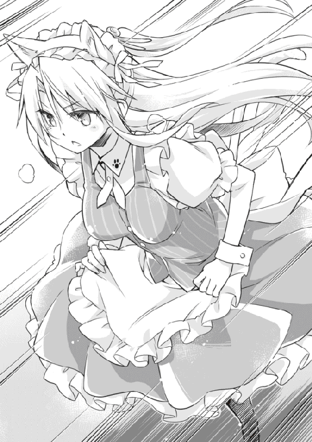
......家に招いた柘榴は、昔と変わらない格式張った態度だった。が、一つだけ以前と大きく異なる点があった。いつもこちらに対して腫れ物に触るような接し方だった彼女が、何故かしきりに交流を持とうとしてきたのだ。しかも話す内容は霊導関係とは程遠い、プライベートなことばかりだった。
これまで瑠璃以外に親しい同世代がいなかった翠にとって、柘榴の態度はとても歓迎すべきものだった。そんな彼女と接しているうちに、翠はかつて瑠璃がこぼしたある言葉を思い出した。
「コーちゃんと柘榴には、凄いお笑いのセンスがあるはずだ。関西人だもの」
当時はどんな偏見だと思っていたが、確かに柘榴は話し上手であり、聞き上手だった。
三塚兄妹のセンスを、瑠璃は昔から気にかけている......あの日、瑠璃が昂大にアドバイスを請おうとしているのを盗み聞きした翠は、即座にそれを利用して先手を打った。
結果は見ての通り。やはり柘榴には豊かなお笑いの才能があるようだった。それはツッコミ大王の孝巳があれだけ盛んに彼女へ突っ込んでいるのを見ても明らかだ。
（紺野くんって、ボケる子にしか興味ないのかしら）
だとしたら困った性癖だ。そういえば柘榴は、「紺野様はＧカップがお好みだと、廃銀行で仰っていました」と言っていた。自分が孝巳の好みに合致しているのは、現状でその一点くらいだ。
真面目一徹な自分には、「ボケる」という行為は結構ハードルが高いのだ。別に孝巳の好みなんて、どうでもいいのだけど......
「それにしても、何て動きづらいの......」
少しだけ速度を落とし、翠はそう呟きながら頭の猫耳ヘアバンドを整え直した。
衣装もサイズが小さいのか、胸周りが少しきつい。バサバサ翻るスカートが足に絡まり、走りにくいことこの上ない。
「こんなことなら、スクール水着喫茶に投票するべきだったわ」
仕方なくスカートの裾をエプロンごと摘まみ上げ、歩調を小刻みにして対応する。次なる生邪魔は体育館の裏側だ、もたもたしてはいられない。
「牙穿。貴方は部室棟の隅にいる生邪魔を始末して」
口笛と共に指示を伝えると、メイド姿の霊導師は後ろ髪をなびかせ、砂利道を疾走していった。
高橋たち三体を除いた全ての生邪魔を一掃すると、異形の骸骨・六黒は霧のように消滅してしまった。
「はあ......もう無理」
瑠璃がフラフラになりながら、空を仰いで音を上げた。小さく咳込み続けたのち、脱力して地面に尻餅をつく。その拍子に後頭部を床にゴチンとぶつけた。
「有働！」
孝巳は慌てて駆け寄ると、引っくり返っている瑠璃を抱き起こした。
「あいたた......」
「大丈夫か？ 結構強く打ってたぞ」
「何とかね。幸い、胸のペンダントが守ってくれた」
「どう作用したんだよ！ ペンダントしてねえし！」
逞しい奴だ。だが、状況を理解して欲しい。
目を向けると、残った三体の生邪魔が揃って身動きを止めていた。どうやらまた《喝破》が効いたようだ。やはりツッコミでの発動は楽だと、改めて実感する。
「煩わしい能力だな」
腕を組んだまま、昂大が腹立たしげに独りごちる。未だ彼に焦りの色はなかった。
「当然だ。紺野くんの《喝破》は、六黒っちや翠の守護霊ズにすら効くんだから」
座り込んだ状態で不遜に言い返し、瑠璃がおもむろに視線を後方に転じた。その先にローファーの足音を響かせ近付いてくる柘榴の姿があった。
「柘榴、バトンタッチだ。あとは君に任せる」
「御意」
頷いた柘榴の両眼が深紅に染まる。続き彼女が指を鳴らすと、その傍らに大柄な初老の男性が現れた。──彼女の父・三塚永堅だ。
「生邪魔、落トソカ」
いつかと同じ呟きののち、柘榴が片手を宙に伸ばし、指先でクルクルと小さく印を切る。すると突如として、永堅の足下が淡く発光した。
地面より噴き出した赤い光の螺旋が、永堅の全身を包む。逆巻く深紅の渦は繭のごとくあっという間に彼を呑み込み、そして程なくして消えた。
「あ......」
光が収束すると、永堅がいなかった。代わりに柘榴の手に、一振りの刀があった。
鞘のない、古ぼけた無骨な日本刀。よく見ると全体がぼんやりと赤く発光していた。白昼の屋外でも爛々と輝くその刀身に、孝巳は昔に観たＳＦ映画の剣を想起した。
「あ、あれは......？」
「【甲霊の儀】だよ。霊導師の中には、自分に憑いた霊を一時的に武器などに転化できる者がいる。中でも三塚家は、例外なく霊導に【甲霊】を使う」
孝巳の腕の中で、瑠璃がそんな説明をよこしてきた。それはつまり【負統合の儀】と同じく、霊を変質させてしまう術式ということか？
「フン。芸がないな柘榴」
霊刀を携えた柘榴を歯牙にもかけず、昂大が嘲るようにせせら笑う。
「お前は【甲霊】一つ取っても、僕の足元にも及ばない......手本を見せてやろう」
前髪を掻き揚げたその指で、彼もまた滑らかに印を切った。
果たして高橋、久米、吉永が逆巻く光に覆われ、姿を掻き消す。強烈な光渦が失せたのちに昂大の手に出現したのは、柘榴のそれの倍はあろうかという大刀だった。
......否、違いはサイズだけではなかった。赤く光る刃に、どす黒い瘴気が絡みついている。刀身が歪に湾曲し、グネグネと独りでにのたくっている。まるで生きているような、意思を持っているかのような、奇怪で不気味な刀だった。
「二儀の合わせ技か。これは驚いた」
昂大の大刀を見るなり、瑠璃がほぅと場違いな感嘆を上げた。
【負統合の儀】と【甲霊の儀】の複合。つまり昂大は高橋たちを一つに統合し、なおかつ刀に変えたということか。
霊能の知識など持たない孝巳でも、それが恐ろしく高度な技であることくらいは想像がつく。......三塚昂大を甘く見過ぎていた。もしあれを廃銀行で、そして瑠璃の家で出されていたら、孝巳は間違いなく頭取さんの犠牲者となっていただろう。
血のごとき赤眼に愉悦を孕ませ、昂大が邪悪に口端を歪める。
「同じ負情念を持つ霊は、一つの意思の下に統合ができる......これが高橋ら三人を選んだ理由さ。ここまで深い因果で繋がった霊など、都合よく見付けられるものじゃない。ならば自分で作ればいい」
だからあれだけの手間をかけて、高橋たちを陥れたのか。そんな武器を得るために。
「作ったとしても、操る才がなければ宝の持ち腐れだ。だが、僕は違う」
昂大が大刀の柄から手を放す。刀は落ちることなく、フワフワと彼の前に浮遊していた。
刹那、いきなり大刀が縦に一回転し、刃が空気を斬った。
斬撃が生んだ吹雪のごとき猛烈な霊圧に、孝巳と瑠璃の体がズルズルと床を数センチ滑る。撒き散らされた霊気の塵が、そこら中で大音量のラップ音を連鎖させ、なお収まらぬ衝撃波が地面に無数の亀裂を刻んだ。
（な、何て刀だ！）
高橋らが融合した凶器は、依然として自我を持つかのように浮遊し続けている。刀身から無尽蔵に湧き立つ瘴気が、黒霧となって屋上を侵食していく。
勝手に動き回る、生きた妖刀──廃銀行で霊導師の首を刎ねたのも、こいつの仕業か。三塚昂大は、あくまで自身の手は汚さないつもりか。
「やるじゃないかコーちゃん。まさか君がこれほどのものだとは」
「仮にも『凶姫』の隣に立つ男だ。それ相応の実力は必要だろう？」
少女の称賛に快哉で応え、昂大が紅蓮に染まった目を剥いて誇るように叫ぶ。
「これが三塚昂大だ！ 俗人どもには及びもつかない天賦の才だ！ 瑠璃、僕と一緒に来い！ 来るべきだ！ 才人の心は、才人にしか分からない！」
その喚声に呼応し、大刀が乱舞を激化させる。床を砕き、金網を裂き、獲物を求めるがごとく刃を波打たせ暴れ回っている。
「全く、何でそこまで私にこだわるかな。ファンクラブの会員じゃ駄目なのかい？」
「僕は、君の強い心を......精神を愛しているんだ！ 君でなければ駄目なんだ！」
「まるで愛の告白だね。まあいい、君が勝ったなら好きにしたまえ。その才とやらで柘榴を見事倒せたら、お尻ぐらい触らせてあげよう」
昂大の心からの叫びにも、瑠璃はいつもの調子を変えない。
もしかしたらこいつは、昔からこんな感じで昂大の想いをかわしてきたのかも。瑠璃はおそらく、昂大を男として見ていない。思えば彼女が語るのは、いつだって霊能者や関西人としての三塚昂大だった。
「紺野様。瑠璃様をお頼み致します」
今まで沈黙を守っていた柘榴が、孝巳に低く告げてきた。
昂大を真っ直ぐに見据えたまま、彼女が大きく深呼吸をする。昂大の圧倒的な力量を目の当たりにし、僅かに気負っているように見えた。
（任せていいのだろうか......）
単純に考えて、敵の刀は三倍の力を有している。因果で繋がった高橋たちの統合体に対し、柘榴の武器は父の魂のみ。
この勝負は明らかに分が悪い。もはや瑠璃が当てにできない今、翠の到着を待つべきではないのか。
「三塚、平気なのか？ じきに鴫原も来るだろうし、ここは少しでも時間を」
「無用です」
進言は氷のような声に冷たく一蹴された。いつしか彼女の気負いは消えていた。
しかし孝巳には、彼女にこの場を任せたくないもう一つの理由があった。実力差など以前に、柘榴にとって三塚昂大は──
「あいつは、お前の兄さんなんだろ」
「その前に三塚柘榴は──霊導師でございます」
５
何度も葛藤したものの、結局のところ孝巳はそれ以上の掣肘をやめた。
おそらく柘榴の決意は揺るがない。《喝破》で援護することも考えたが、そもそも刀と化した霊に通用するのかが分からない。仮に通じたとしても、迂闊な《喝破》は柘榴の足まで引っ張ってしまう恐れがあった。
ここ数日あれだけ特訓に時間を費やしておきながら、この局面で見守ることしかできないとは。昂大を止めると宣言しておいて、それを妹の柘榴に丸投げすることになるとは。
......歩き出した柘榴を見詰めながら、孝巳は己の無力さに唇を噛むしかなかった。
「紺野くん、もう少し下がろう。柘榴の邪魔になる」
瑠璃の提案に忸怩たる思いで従う。彼女が「抱っこ」と両手を伸ばしてきたので、仕方なく抱き上げて距離を取った。
前に部室で抱えたときも思ったが、こいつは軽過ぎる。ちゃんと食べているのだろうか......全て片付いたら、一度飯でも奢ってやろう。
瑠璃を下ろして前方を窺うと、三塚兄妹が数メートルの間合いを空けて対峙していた。ここから見えるのは柘榴の背中のみで、その表情は分からなかった。
「次期当主が決定した日──父さんは僕に言った」
浮遊する大刀の後ろで、昂大が憎々しげに柘榴の刀を、父を睨んでいる。
「お前は才はあるが、心が弱いと。無念だろうが、分かれと。しかしそれは順番が違う」
怨念に満ちた炯眼が、次いで柘榴を射抜く。
「今の僕が道を外したと言うなら、そうさせたのは父さんだ！ 僕は何としても三塚の当主にならなければいけなかった！ 霊導家という居場所が必要だった！ そのための充分な才もあった！ なのに......僕の失望と屈辱が、お前に分かるか！」
猛り狂う激情を受け止め、柘榴が悲しげに答える。
「それは父様のせめてもの愛情でした。裏目に出てしまいましたが、兄様を気遣っての発言だったのです」
「何だと......？」
「父様は、私にはこう仰いました。『もうずっと前から、当主は柘榴に決まっていた』と」
「ど、どういうことだ」
妹の述懐に、兄がにわかに揺らぎを見せる。
中天の太陽に雲がかかり、戦場が明度を下げた。
「──理由は単純です。『当主とは、最も強き者に継がすもの』だからです」
刹那、柘榴が地を蹴った。
そのあまりの緩急の変化に、孝巳が事態を認識できたのは、昂大が派手に吹き飛んだあとだった。
昂大の長躯が、後方のフェンスに叩きつけられる。攻撃に反応した大刀に辛うじて助けられたようだが、衝撃までは防ぎ切れなかったらしい。
追撃を避けるため横に飛び退き、昂大がすぐさま体勢を立て直す。柘榴のスピードに驚愕した彼は、視線の先にあった光景にさらに驚くことになった。
「な......」
柘榴が、片手に小柄な女を捕らえていた。
乱暴に髪を掴まれ、喉元に緋色の刃を押し当てられながらも、その女・久米美知恵はただ虚ろな目を宙に漂わせているだけだった。そして──
「生邪魔、首一ツ」
囁きと共に、柘榴が久米の首を掻き斬った。寸毫の躊躇もなく、一切の容赦なく、彼女は久米美知恵の頸部を切断した。──頭取さんのように。
直後、久米が凄まじい形相を浮かべ、無音の断末魔を上げたような気がした。みるみる胴体が消滅し、残った首がゴトリと地面に落ちる。首は鞠のごとく数度転がると、やがて体と同じく煙のように消えた。
「ぼ、僕の生邪魔を......！」
あり得ぬとばかりに息を呑んだ昂大に、再び柘榴が詰め寄る。
「貴様ァ！」
彼の怒号と共に大刀が回転し、歪な刃が逆袈裟に振り上げられた。
瘴気をまとって飛んできたその切っ先をギリギリで見切ると同時に、柘榴のつま先が昂大の腹部へ突き立てられた。
堪らず昂大の膝が折れる。這いつくばって呻いた彼は、すぐに自身の凶器の異変を悟りハッと顔を上げた。
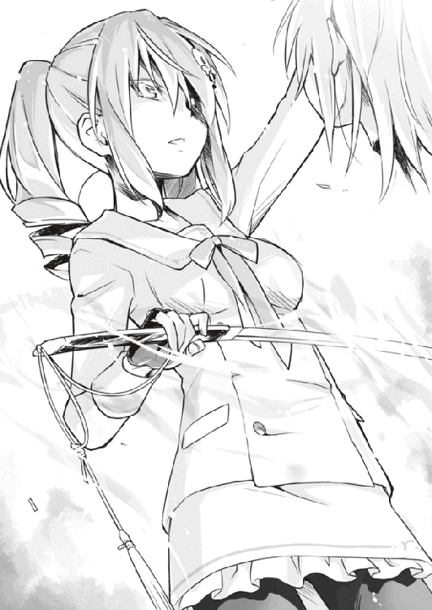
「刀が──」
昂大の大刀が、今や柘榴のそれと変わらないサイズに縮小していた。湧き出る瘴気が激減し、刀身がうねりを止めていた。
その理由は一目瞭然だ。柘榴の手が、また新たな生邪魔を捕らえていたのだ。
ヨレヨレのロングコートを着た中年男、吉永透だった。
「生邪魔、首二ツ」
久米と同様に、美貌の霊導師が生邪魔を処刑する。斬首された吉永はまるで痛みを感じているかのように全身を激しく痙攣させ、数拍後に蒸気のごとくその姿を消した。
（何だ、これ......）
孝巳の体が、恐怖に凍りつく。首筋を冷たい汗が伝う。
これは霊導なのか？ こんな残酷な、殺人のような斬首が......本当に魂の救済なのか？
「前に言ったよね？ 生邪魔屋の霊導は少し特殊だって」
絶句している孝巳の横で、瑠璃がのんびりと語り出した。
「死霊とは、生者によってこの世に引き留められ、存在理由を与えられた霊だ。言うなれば、被害者たる魂だ」
知っている。死者の霊は意思を持たない。それを与えるのは、生者の独断と偏見だ。
「でも生霊は違う。一方的な被害者じゃない。彼らは基本的に、自分自身の意思で霊となっている自業自得の存在だ。そんな生邪魔を霊導するには、厳しく、手荒に、問答無用に対処する必要がある。同情や哀れみは、時として逆効果ですらある」
人は生きている限り、自分自身を霊導できるもの。
抱える負情念は、謂わば不浄念......それを浄化するのは他の誰でもない、本人であるべきなのだ。死者と違い、生者にはまだその機会が与えられている。同情などするべきじゃない。哀れみは不浄念を肯定することにも繋がってしまう。そういうことか。
かつて昂大は言った。「僕が彼らを哀れに思っているのは本当だよ。この三人は、同情すべき存在だ」と。ならばやはり、三塚昂大という男には......生邪魔屋としての資質はないのかもしれない。
「それにしたって......」
上ずった声を漏らし、孝巳は寒慄しつつ柘榴を見た。
昂大が生邪魔屋に相応しくないのは分かる。が、それでも彼が比類なき天稟を持っていることに変わりはない。その昂大をここまで圧倒できるなら、すなわち柘榴は兄をも超える才能を持っているということだ。
「柘榴にはコーちゃんほどの霊感はないよ」
「な、何？」
「フォローするわけじゃないけど、コーちゃんの霊感は業界でもトップクラスに近い。私や翠が相手なら、あそこまで一方的な展開にはならなかっただろうね」
「それなら何で......」
困惑して尋ねると、瑠璃は鼻をすすりながら「相性の問題だよ」と言った。
「コーちゃんみたいな天才にとって、柘榴は最も相性の悪い相手だ。コーちゃんってば、あんな高等技術を使いこなせるばっかりに、それに溺れてしまったんだろうね。でも柘榴みたいな人間は、天才にとって天敵なんだ」
「天才の、天敵......」
孝巳の脳裏に、かつてのチームメートの顔が去来した。
天才投手と騒がれていた孝巳を、決して才能があったわけでもないのに常に脅かし続けてきた、今はもうこの世にいないライバルの顔。
「天才を脅かすのは、得てして努力の人間だ」
孝巳の追憶を肯定するように、瑠璃の澄んだ声が耳を突く。
紺野孝巳と小田切和人。三塚昂大と三塚柘榴。
自分になぞらえれば明確に分かる。もし孝巳が才に溺れて練習を怠っていたら、きっと小田切に負けていた。彼を侮り見下していたら、間違いなく立場は逆転していた。その姿が......あそこにある。
「それに、【負統合】と【甲霊】の合わせ技は確かに凄いけど、あんな使い方は駄目だよ」
今や浮遊することなく、昂大の手に握られている刀。その刀を手庇で窺いながら、瑠璃が苦笑混じりに解説を続けた。
「せっかくの武器をリモートコントロールするなんて、愚の骨頂だ。刀なんて直接手に持って振るう方が使いやすいに決まってる。いくら操れるからって、理解に苦しむよ」
......それは、昂大が自身の手を汚さないためだ。
これまで彼は一貫してそうしてきた。高橋たちを陥れたときも、頭取さんとして人を殺めたときも、昂大は現実の法に触れる行為を頑なに避けてきた。呪殺師となってからも、殺しは全て生邪魔にさせると公言していた。
決して犯罪者にはならないというこだわりと、天才であることの矜持。ここにきて、それら全てが彼の裏目に出た。
孝巳が呆然としている間にも、柘榴が昂大を追い詰めていく。
「兄様、【甲霊】を活かすものは霊感ではありません。鍛えられた霊力です」
「ぐ......」
「確かに私には兄様ほどの霊感はありません。ですが、鍛練は時として才を超えることもあります。今の兄様では、いずれ紺野様にも及ばなくなりましょう」
「ふ、ふざけるな！」
意地と気力で立ち上がった昂大が、憤怒に任せて大上段から刀を振り下ろす。柘榴が半歩下がったことで斬撃は虚しく空振りし、コンクリートの床を粉砕した。
「お前が、お前が僕に勝てるはずがない！」
返す刀を振り上げようとしたとき、柘榴の爪先がその切っ先の峰を蹴りつけた。予期せぬ反動に、昂大の手から刀が放れる。
地面に転がった刀を、素早く柘榴が先に拾い上げる。彼女の手中で刀はゆっくりと形を変え、青年の姿に戻った。
最後の生邪魔、高橋晴一郎。妹のために人生を捨て、望まぬ殺人者となった兄。
「生邪魔、首三ツ」
高橋の首が落とされた。先の二人と同じく、斬首された彼はその身を消失させた。
丸腰となった昂大の喉元に、柘榴の刀が静かに突きつけられる。
「残りの生邪魔は、どうなさりましたか」
「あ、ぁ......」
「呼べませんか？ ならば翠様がすでに始末してしまったのでしょう」
「お前......いつからこんなに強く......」
「三年前、兄様と再び暮らし始めた頃には──すでにこの差が」
昂大の端正な顔が、絶望に彩られる。唇をわななかせ、喘ぐように呼吸をしている。
「手合わせでは、いつも手を抜いていたということか......」
「思えばそれは侮辱でした。でも、あの頃の愚かな私には......それくらいしか兄様を当主に導く手段が見付けられなくて」
昂大の全身が力を失い、崩れ落ちる。彼はがっくりと項垂れたまま、やがて声を殺して弱々しく笑い出した。
彼の心は折れた。勝負が決したのだ。
「心のどこかで、予感はしていた。だがそんなことがあるはずはないと、無理に思い込んでいた。それでも父さんは、きっと僕を選んでくれると」
「............」
「お前さえいなければ......そう思ったことは何度もあった。どこかに消えてくれれば、いっそ殺してしまおうか......よくそう思ったよ」
「............」
「でもそんなこと、できるわけがない。お前はやっぱり──妹なんだから」
「兄様......」
柘榴の声が、初めて迷いの色を帯びた。突きつけた刀の切っ先が下ろされる。
長い沈黙ののち、昂大が哀願を込めた瞳で妹を見上げた。
「柘榴。僕を殺してくれ」
「な......」
「僕はもう、三塚には戻れない。もうお前の兄でもいられない。このまま無様に生き続けたところで......また同じ過ちを犯すだけだ」
「そ、そんなことはありません！ 私はまだ諦めてはいません。また築き上げましょう。罪を償って、もう一度やり直しましょう。私は、私は知っています、兄様がどうして当主に固執したのか......」
悲痛に言葉を紡ぎつつ、柘榴の足が一歩踏み出される。
その様子を不安げに見守る孝巳に、ふと瑠璃が耳打ちをよこしてきた。
「──紺野くん。ようやく君の出番だ」
「え？」
「私は疲れて動けない。君しかいない」
「それは、どういう......」
孝巳の問いかけが終わるより早く、昂大が一気に動いた。
長い足で柘榴の靴を払い、そのまま猛然と飛びかかる。バランスを崩した彼女の腹部に膝を突き入れると、昂大はその手から素早く刀を、三塚永堅を奪い取った。
「ぐっ！」
転倒した柘榴はすかさず身を起こそうとしたが、迫った斬撃に再び後方へ転がることになった。間一髪でその凶刃を避けたものの、純白の制服がブラウスごと真一文字に切り裂かれてしまう。
「やはりお前は甘いよ、柘榴。とても当主たる器じゃない」
「兄、様......」
うずくまる妹に、形勢逆転とばかりに切っ先を突きつけ、昂大が口角を上げた。
「今さら【甲霊】を解いても無駄だ。僕とお前には霊感において天地の隔たりがある。僕の【甲霊】に、お前の術が勝る道理はない」
刃が翻り、柘榴の前髪が跳ね上げられる。三日月型の傷痕が露出すると共に、寸断された髪の毛が数本宙を舞った。
「さあ、もう一度かかってこいよ。僕より優れた力を持っているんだろう？ その霊力と体術で、もう一度僕を圧倒してみろ。この体勢、間合いからそれができるならね」
柘榴は動けない。地に膝をついたまま、脇腹を押さえて苦しげに息をしている。
（まずい......！）
窮地に陥った柘榴の姿に、孝巳の心臓が拍動を早めた。
駄目だ。ここから走っても遅い。その前に昂大は柘榴の首を落とすだろう。ならば孝巳に残された手段は──
緊張がピークに至った瞬間、右腕が急激に熱を帯び始めるのを感じ、孝巳は咄嗟に右肩を押さえた。
──落ち着け。暴走させるな。必死に自分を叱咤し、荒れ狂う霊力の制御に努める。
もはや掻き集めるまでもなく、膨大な霊力が右腕に充満している。努力の甲斐あって、溶岩のような熱さが少しだけ引いてくれた。
「ほう、前回より形になってるじゃないか。相方を蔑ろにしてまで特訓しただけあるね」
瑠璃の呑気な言葉に視線のみで応えると、孝巳は大きく息を吸い、意を決して前方に大音声を張り上げた。
「待てコラ昂大！」
こちらを一瞥した昂大に向け、さらに精一杯の啖呵を切る。
「テメェは俺の力を見るんじゃなかったのか！ 相手してやるからかかってこい！」
「......君の相手はすぐにしてあげるよ。柘榴を始末したらね」
「ふざけんな！ 小汚ねぇ手を使った時点でその勝負はテメェの負けだ！ 次は俺と勝負しろ！ グダグダ言ってやがると、有働は俺が貰っちまうぞ！」
その言葉に昂大が反応する。同時に隣で瑠璃が「はあ？」と間抜けな声を上げたが、構ってなどいられなかった。
咆哮を続けつつも、意識を右肩から腕、そして掌へと集中する。ここからはぶっつけ本番だ。これまでの一連の出来事を丹念に、しかし迅速に、一つずつ反芻していく。
やがて脳内に幾重もの声が響き始めた。
──死んでお詫びする。許して下さい。
──許して下さい。
──許して下さい。
折り重なる声。それは高橋、久米、吉永の思いだ。
彼らは復讐よりも贖罪を選んだ。ならばこれが彼らの意思のはず。
──兄は、私の自慢でしたから。
次に聞こえたのは、柘榴の声。
──結局のところ、私は兄様のことが一番大事なのかもしれません。
──もう一度やり直せたら......関係を築き直せたら......
彼女はずっと、そして今も、兄を案じ続けている。やっぱり彼女は、何よりもまず昂大を救いたかったのだろう。兄の失望と屈辱を、妹は分かっていたのだろう。
──瑠璃だけは認めてくれた。
最後に聞こえたのは、昂大の声だった。
──彼女の隣こそが、僕のいるべき場所なんだ。
──彼女だけが、僕を笑顔にしてくれるんだ。
山彦のような重唱。それが渦巻く霊力と絡み合い、掌の中で化学反応のごとく収斂していく。
すると、掌に感触が生まれた。灼熱に煮え滾る──眩しい光のボールがそこにあった。
孝巳が腕を振りかぶると同時に、異変を察知した昂大が直ちに動く。柘榴に手を下す暇はないと悟ったのか、彼は舌打ちと共に孝巳へと駆け出した。
「いいだろう紺野孝巳！ お前の力を見せてみろ！」
「三塚昂大、俺がお前を霊導してやる！」
一球入魂！
突進してくる昂大へ光球を投げ放つ。全盛期以上の剛球が、光の尾を引いて流星のごとく走った。
「！」
予想外の球速に仰天し、昂大が回避を諦め刀をかざした。飛来した光球を、疾走しながら薙ぎ払う。驚くべき動体視力と反射神経だった。
が、球は弾き返されることはなかった。刀身に衝突した刹那──《言霊球》が爆発した。
驚愕を浮かべた昂大の顔が、光と爆風の中に掻き消え、たちまち屋上が白一色の世界に呑み込まれる。
（くっ、前より威力が凄ぇ......！）
瑠璃の前に庇うように立ち、風圧に吹き飛ばされまいと踏ん張る孝巳の鼓膜を、突然聞き覚えのない男の声がかすめた。
──昂大。無念だろうが、分かれ。分かってくれ。
──お前の刃、甘んじて受けよう。だから......
低く野太いこの声は、もしや昂大と柘榴の父・三塚永堅のものか。霊刀となった彼の魂が、《言霊球》に取り込まれ解き放たれたのか。
と、そこにまぎれ、馴染みのある少女の声も微かに聞こえた気がした。
──コーちゃんは凄い。
やがて光が収束して視界が蘇ると、昂大はうつ伏せになって地面に横たわっていた。
そんな彼を一旦置いて、孝巳は全身の気だるい重さを感じつつ柘榴へ駆け寄った。
「三塚！ 大丈夫か！」
ヨロヨロと身を起こした彼女に、慌てて肩を貸す。寄りかかってきた体は、瑠璃ほどではないが異常に軽かった。
「おい、怪我は──」
胸の辺りを確認したところで、孝巳は瞬く間に石化してしまった。切り裂かれた上着とブラウスの奥から、形の良い大きな乳房が片方、露に顔を覗かせていたのだ。
「ぎゃあああぁぁ！」
絹を裂くような孝巳の悲鳴にも、柘榴はほとんど反応を示さなかった。
一言「大丈夫です」と告げてくると、胸を隠そうともせず孝巳を置いて歩き出す。生邪魔のごとく覚束ない足取りで進むその先には、倒れている昂大がいた。
「兄様......」
ピクリとも動かない兄を見下ろし、柘榴が吐息のごとく囁く。最後の最後で、昂大はまた彼女を裏切った。その胸中はいかばかりのものか......到底推し量れなかった。
いたたまれなくなり、その背中に向けて遠慮がちに声をかける。
「出しゃばった真似だったのは分かってる。でも」
「......いえ。危ないところをお助け頂き、ありがとうございます。稽古の紺野様とは別人のようでありました」
昂大を見詰めたまま、柘榴が返事をよこしてきた。
苦笑しつつ、とりあえずブレザーを脱いで彼女に羽織らせる。触れた両肩はか細く、とてもあれだけの大立ち回りを演じた人間のものとは思えなかった。
「──兄様はずっと、瑠璃様を心配しておられました」
風に乗って届く地上の喧騒に混じり、柘榴が独白のように語り出す。
「お父上を亡くし、幽鬼に囚われたまま、霊導界を追放された瑠璃様を」
もしかして、柘榴も知っていたのか。昂大の想いを。だからこそ彼女は、それをよすがに瑠璃のいるこの町へやってきたのか。
「当主になったら瑠璃様を妻にしたいと、新しい家族になってやりたいと......兄様はそのための場所が、家が欲しかったのです。でも、それは叶わなかった」
それが、昂大が当主にこだわった理由。しかし、彼は諦めなかった。否、瑠璃と同じ立場に墜ちたことで、ますます彼女を求めるようになった。
「兄様は、瑠璃様の孤独を癒してあげたかったのです。そして......自身の孤独を癒して欲しかったのでしょう」
柘榴の指先がそっと額の傷に触れる。泣き黒子を伝う涙を、続きその指が一つ拭った。
「でも瑠璃様は、兄様のように弱くはなかったのですね。傷口を舐め合う相手など──『凶姫』は必要としていなかった」
見ると、瑠璃はいつの間にやら猫のように体を丸めて寝入ってしまっていた。よほど《怨団化製作》が堪えたのだろう。
各自の思いが交錯した今回の事件の中でも、結局彼女はいつも通りの彼女だった。ブレることなく一貫して、「笑い」のみを行動原理としていた。「私がコーちゃんに期待するのは、笑いのセンスだけだ。極めてドライな利害関係だよ」と言い放ち、実際に何の躊躇もなく昂大の敵に回った。
（──いや、違う）
孝巳は何となく理解している。瑠璃は三塚昂大に対し、何の感情も持っていなかったわけではない。彼女は決して、利害だけで昂大を見ていたわけではない。
（昂大。お前はここへ来るのが早過ぎた）
彼との本当の待ち合わせ時間は、ステージのあと。予定より早く現れた昂大に、瑠璃はやけに苦い顔をしていた。
それを思い出したとき、分かったのだ。
瑠璃はきっと、自分の漫才を──自分の霊導を彼に見せたかったのだと。
最後にほんの一時だけでも、笑顔にしてやりたかったのだと。
６
「えーんえーん」
「......む？ 無駄に人相の悪い子供が泣いている。どうしたんだいボク、ＦＸの投資で大損こいたのかい？」
「違うよぉ。ママがいなくなったんだよぉ」
「ふむ。これすなわち迷子というわけか。よし、ここは私が解決してあげよう。ジッちゃんのナニにかけて」
「えーんえーん、下ネタは嫌だよぉ」
「まずいくつか確認しておこう。君の名前は？」
「紺野孝巳だよぉ」
「ミドルネームは？」
「そんなのないよぉ」
「コードネームは？」
「別にミッションは負ってないよぉ！」
「年はいくつ？」
「四つだよぉ」
「お父さんは会社？」
「うん、多分......」
「お父さんの年収は？ 二時間以内にいくら用意できる？」
「それ聞いてどうするんだよぉ！」
「冗談だってば。君を和ませようと、あえてジョークを披露したのさ」
「えーんえーん。いたずらに不安を煽られただけだよぉ」
「とりあえず、泣くのはやめたまえ。ポカ！」
「うわーん！ 何でぶつんだよぉ！」
「ムシャクシャしたからだ。相手は子供だし、やり返してこないだろうと踏んだからだ」
「発想がゴミクズだよぉ！」
「いいかい紺野孝巳くん、男は簡単に涙を見せてはいけない。どんな不条理にも、歯を食い縛りぐっと耐えねばならない。たとえ涙を流すにしても......それは自分のためじゃなく、他人のために流すものだ」
「四才児に求めるハードルじゃないよぉ！」
「じゃあ、これが最後の質問だ。最後にして一番重要な問いだ」
「う、うん」
「佐々岡さんのお宅を知らないかな？ 地図だけじゃよく分からなくて......」
「お前も迷子かよ！」
「わっ、大人になった」
「もうコントはやめだ！ お前ダメダメじゃないか！ 全くなってねぇ！」
「む、言ってくれるね。なら見せてもらおうか、君の手際を......えーんえーん」
「ぐっ、まだやるのかよ......え～と、どうしたのかな？ お嬢ちゃん」
「迷子だ。察したまえ」
「偉そうだな......年はいくつだい？」
「セクハラはやめたまえ」
「そんなつもりはねぇよ！ ......お名前は言えるかな？」
「瑠璃。瑠璃の『瑠』に、瑠璃の『璃』で、瑠璃だ」
「何の説明にもなってねぇ......えっと、お父さんの年収は？」
「四百万だ」
「突っ込めよ！」
「愛人は総務課の美紀さんだ」
「訊いてない！」
「一方で母の愛人は、何と美紀さんの彼氏の佐々岡くんだ」
「ドロドロじゃねぇか！」
「しかも佐々岡くんはバイセクシャルで、私の父とも関係を持っている」
「何だそりゃ！」
「美紀さんは美紀さんでさらに浮気をしていて、それが私の祖父だ。その祖父もまた、私の母と不適切な関係にある」
「もうよく分からん！ お前の家庭どんだけカオスなんだ！ もういい、交番行くぞ！」
「駄目だ！ あそこの警官は美紀さんの兄で、私と不倫関係に......」
「お前もかよ！ 狭いコミュニティーで何やってんだお前ら！」
「ああっ、私には佐々岡くんの弟という夫がいるのに！」
「もう俺の思考が迷子だよ！」
地獄のような時間がやっと終幕すると、拍手を浴びながらステージ袖へと引っ込む。
観衆の目から逃れるなり、特大の溜息と共に虚脱してしゃがみ込んだ孝巳の耳に、瑠璃と辻早苗の談笑が届いてきた。
「やだ、結構ウケてたね！ さっすがルリポン！」
「ウフ、ウフフフフフ」
「やだ、怖い！ ルリポンってばサイケデリック！」
「総選挙の際は是非とも私に票を入れたまえ」
意味の分からない会話を一通り終えると、瑠璃が猫っ毛を揺らして戻ってきた。
こいつは漫才のあとは、決まって上機嫌だ。お笑いをやっている間、彼女は孤独感から解放されるのかもしれない。たった一人の寂しさから。
「柘榴、観てたかな」
「どうだろうな。鴫原についてったのかもしれないぞ」
──屋上での決着のあと。駆けつけた翠は、急病人と称して昏睡した昂大を病院へ搬送する手配を行ってくれた。
戦いの詳細を知っても、彼女が驚くことはなかった。昂大が生邪魔の群れを校内に放つことも読んでいたらしく、まとめてかかってこられては面倒だったその物量を分散させることも、今日を選んだ理由だったらしい。念の入ったことだ。
病院へ同行しようとした柘榴に「あとは私の役目よ。貴女は契約の結果を見届けなさい」と、制服姿の翠はキリリと言い放った。頭の猫耳バンドを取り忘れていたお陰で、いまいち威厳に欠けていたが。
「ふう」
重い腰を上げ、ゆっくりと歩き出す。とにかく外の空気を吸いたかった。
裏口を目指しつつ、隣で上下しているショートカットにチラリと視線を送ると、ご機嫌にフンフンと鼻歌を唄っていた。風邪を押しての《怨団化製作》ですっかり力尽きたと思っていたのだが、彼女はステージに立つ頃にはいつも以上に元気になっていた。何とも無駄なバイタリティーだ。
「......なあ有働。今日、飯でも奢ってやろうか？」
思い切ってそんな言葉をかけてみると、瑠璃がキョトンと目を丸めて見上げてきた。
「どういう暴風の吹き回しだい？」
「いやまあ、たまにはな」
誰もいない家で一人で食事するのも味気ないだろう。これからは極力誘ってやろうと思う。翠にもそう頼んでおこう。
瑠璃が嬉しそうに笑ったので、孝巳も釣られて笑った。が、その直後。
「そういうことなら、私がご馳走してあげるよ。まとまったお金が入ることだし」
「まとまった金？」
眉をひそめて訝しんだ孝巳に、瑠璃がコクリと頷く。
「家の借り手が見付かったんだ」
「家の、借り手？」
「うん。実は私、実家には住んでないんだ。あそこは一人暮らしには広過ぎるから、近所のマンションに引っ越した」
「ひ、引っ越した？」
「二年ほど前にね。先日やっと借り手が見付かったらしくて、鍵も開けてあるんだけど」
じゃあ、家がやけにガランとしていたのは......
唖然と口を開けたままの孝巳に、瑠璃が自慢げに指で鼻の下をこすった。
「今の部屋はいいよ？ 八階だから眺めもいいし、内装も私好みに変えた」
「......家賃とか大丈夫なのか」
「そんなものはない。私のマンションだもの」
「お、お前のマンションだと!?」
狭い通路に孝巳の叫びがこだました。
「正確にはパパのマンションを相続したんだ。意外と固定資産税というのが馬鹿にならなくてね。でもまあ、隣人との関係も良好だ。みんなからよく晩のおかずを貰う」
「な、な......」
こいつの逞しさを甘く見ていた。
そういえば、「有働壮馬は資産家だった」と昂大が言っていた。孤独な一人暮らしという孝巳の中のイメージが、悠々自適な極楽生活へと上書きされていく。
「君も入居するかい？ コーポ・ルリポンに」
「俺の同情を返せ！」
涙目になって怒鳴りつつ、何て親馬鹿なマンション名だと孝巳は思った。
７
「大変面白うございました」
文化祭の二日後。柘榴が関西へと帰ることになった。
見送るために瑠璃と連れ立って鴫原邸へやってきた孝巳は、門前に翠と並んで立っていた彼女にドキリとしてしまった。
いつもの純白の制服ではなく、柘榴は私服姿だった。
濃紺を基調とした、飾らないシックな出で立ち......これまでとは少しイメージが違って、何だか新鮮だった。右手の真っ赤な手袋は相変わらず浮いていたが。
（確かに、制服は切り裂かれて駄目になっちまったもんな......）
あの時の白い乳房が頭の片隅によぎり、孝巳は少しだけ幸せな気持ちになった。あれがＦカップ。後学のためにも覚えておこう。
「私、お二人の武器は掛け合いにこそあると睨んでおりました。ですのでコント漫才の形式を提案させて頂きました」
「英断だった。さすが柘榴だ」
瑠璃が柘榴に抱きつき、キャッキャとじゃれ合っている。
恐ろしき『凶姫』と『首斬小町』の姿は、今はどこにもなかった。
......三塚昂大は、あれ以来ずっと昏睡状態にあるらしい。別に命に関わる怪我をしたわけではない。彼が目を覚まさないのは──魂を抜かれたからだ。
道を外れ、法では裁けない犯罪を働いた霊能者に対し、組織は時としてそんな処断を下すことがあるという。今回、鴫原家の決定により、昂大は魂を無期限に抜かれることとなった。彼の生邪魔は、柘榴が管理するらしい。
「兄様の所業を考えれば、寛大に過ぎる沙汰です。翠様、ありがとうございます」
胸を揉みしだいてくるカッパ少女をさりげなく引き剥がし、柘榴が深く頭を下げる。
腕を組みながら謝礼を受け止めた翠は、肩の髪を一つ払い「スーちゃんでいいわ」と言った。が、それは柘榴に流された。
高橋、久米、吉永の三人は、昨日同時に意識を取り戻した。きっと手駒にされていた他の生邪魔たちも同じだろう。彼らの未来が今後どうなるのか、孝巳には分からない。願わくば、どうか死以外の道を探して欲しい。もう二度と生邪魔などにならないように──
しばらくすると、一台の車がやってくるのが見えた。翠が知り合いの霊導師に、柘榴を新幹線の駅まで送るよう頼んだそうだ。黒塗りのベンツだった。
「またこちらへいらっしゃい。遊びに行きましょう」
「はい、是非」
翠が柔らかく微笑み、柘榴と握手をした。色々とあったが、この二人が友達になれたのは万々歳だ。
これがきっかけになればいい。翠もこうやって霊導師以外の時間を多く過ごせば、きっと学校で友達が出来るだろう。噂では、彼女のメイド姿を隠し撮りした写真が高額で取引されているらしいし、クラスに溶け込む下地は充分にあるのだ。
停車したベンツへと歩いていく柘榴に、瑠璃がニコニコと手を振った。
「またネタをメールするから、アドバイスよろしく！」
「承知致しました」
「敬語はいらないよ。契約が続く限り、私はいつでも君の力になる。柘榴は先生であり友達だ。紺野くん、君も頭を下げたまえ。翠、君もだ」
「な、何で私まで......」
有無を言わさず促され、翠と一緒に頭を下げる羽目になる。柘榴が慌てふためいたのが分かった。
「またな、三塚」
後部座席のドアを開いた柘榴に、そんな声をかける。最後に振り向いて笑った彼女は霊導師ではなく、瑠璃と翠の、そして孝巳の友人としての三塚柘榴だった。
「──ほな、またね」
振替休日を経て、文化祭から十日ほどが過ぎた月曜日の朝。
孝巳は初めてランニングでの登校に挑戦した。
もっと早くに行うつもりだったが、つい昨日までずっと右肩痛に悩まされていたのだ。前回より痛みはマシだったが、それでも全力投球による肩への負担は軽いものではなかった。こんな使い方をしていたら、いずれ肩がもげるかもしれない。
（霊力以前に、本当は基礎体力を鍛え直すべきなんだろうな）
そう思い、満を持してランニング通学に踏み切ったのだが、やってみるとこれが結構きつい。もう十一月だというのに、学校が見えてくる頃には体中が汗だくになっていた。
替えのカッターシャツを持ってくるべきだったと後悔しながら、速度を上げてラストスパートをかける。そのまま校門を潜ろうとしたとき──不意に後ろから声をかけられた。
「おはようございます。紺野様」
「え？」
足を止めて振り向くと、門柱の脇に一人の女生徒が立っていた。
青鶴高校の制服を乱れなく着こなした、ツインテールの美しい少女。腰の前で行儀よく鞄を両手に提げ、スカートからは黒ストッキングに包まれた足がスラリと伸びている。風に流れた前髪を赤い右手で押さえつつ、その少女・三塚柘榴はにっこりと微笑んでいた。
「............」
事態が把握できなかった。
関西に帰った彼女が、何故ここに？ それもこの学校の制服姿で......
「もしかして、間違えてしまいましたか？」
立ち尽くす孝巳に、柘榴が最初の出会いを再現するように、小首を傾げて悪戯っぽく笑う。その左目尻には本物であることを物語るように、小さな泣き黒子があった。
放課後。研究会の部室には四人の姿があった。
「父様に言われたのです。『確かに次期当主は決めたが、自分はまだ隠居する気はない。これを機会にお前はしばし家を離れ、当主となるべく見聞を広めてこい』と」
長机を挟んだ向こう側で、柘榴がそう説明する。彼女の前には、入部祝いの缶ジュースが一つ置かれていた。
柘榴の父・三塚永堅は、意識を取り戻したらしい。療養の甲斐あって、常人を超えた回復力を見せているという。
孝巳は生邪魔の永堅しか知らないが、確かに彼は体が大きく筋肉質で、かなり頑健そうな人物だった。......今さらだが、柘榴と昂大にあの厳めしい禿頭入道の遺伝子が受け継がれているとは、とても思えなかった。
「で、どうしてここを選んだんだ？」
「私はまだ、世間知らずの子供でございます。一人での生活には色々と不安も多く......だからまずは、親しき方々のいる土地にしようと」
彼女の言葉を継いで、いつもの指定席から瑠璃が会話に参加してきた。
「我らがザックローニ監督は現在、コーポ・ルリポンの五階に入居している。私の先生なので、家賃は格安にした」
「私の家に来れば、家賃の心配はなかったのに」
続いて、向かいの柘榴から椅子を一つ飛ばした横で、翠がそう言った。彼女はパフェの代わりとばかりに、隅の冷蔵庫から三本目のジュースを取り出したところだった。
「い、いえ、そこまで翠様にご迷惑をおかけするわけには......すでに編入手続きで、多大な便宜を図って頂きましたし」
柘榴のこの急な転校には、どうやら鴫原家が一枚噛んでいるらしい。霊導業界のトップとは、そんな力まであるのか......
「とにかく、今後ともよろしくお願い致します。紺野様」
「あ、ああ」
この学校に来た以上、当然と言えば当然なのだが、三塚柘榴もやっぱり『お笑い研究会』に入部してきた。「鴫原翠と肩を並べる美少女が転入してきた！」と、今日の校内は柘榴の噂で持ちきりだった。まさかその彼女が、先日まで噂の中心だった頭取さんの妹だとは、みんな夢にも思うまい。
（しかし、賑やかになったもんだ）
ついこの前まで瑠璃一人だった『お笑い研究会』は、今や部員が四人にまで増えた。それは結構なことなのだが、面子に明らかな偏りがある。
男一人に、女が三人。一般人一人に、霊能者が三人。ツッコミ一人に、ボケが三人。
早急に一般常識を持った男子生徒の入部が待たれる。そしてそいつと仲良くなりたい......孝巳だって友達が欲しいのだ。
そんなことを考えていると、柘榴と視線が合わさった。彼女はこちらの心中を読んだように、嫣然と微笑みながらウィンクを一つよこしてきた。
「大丈夫です紺野様。私はツッコミもたしなんでおります」
「だといいけど......」
「ちなみに紺野様は先日、私の胸を直にご覧になりました」
「！」
何の脈絡もなく発された突然の爆弾発言に、瑠璃と翠が揃って顔を上げた。
「ど、どういうこと？ 柘榴」
「この三塚柘榴、実は屋上の一戦でポロリをしてしまいまして」
柘榴が手を胸に当て、頬を赤く染める。
孝巳の脳裏にファミレスでの顛末が去来した。またこのパターンか。
「違うだろ三塚！ あれは不可抗力──」
「柘榴、どこまで見られたんだい」
孝巳の抗議を退け、瑠璃が刑事のごとく尋問する。風邪はもうすっかり良いようだ。
「恥ずかしながら、先っぽまでがっつりと......私、そのあと少し泣いてしまいました」
「おいやめろ！」
「被告は黙っていたまえ」
瑠璃と翠が殺気立っているのが分かった。物凄い剣幕でこちらを鋭く睨んでくる。
──孝巳はこれまで、散々学んできた。人は意外と見掛けによらないものだと。瑠璃も翠も、昂大もそうだった。その中でもこのツインテールは......もしかしたら一番タチが悪いかもしれない。
「そのあと紺野様は、私の体に、その......ご自身のアレをお掛けになってこられて。それがとても生温かくて、独特の臭いがして......」
「素直にブレザーと言え！ そして俺はそこまで体臭きつくねぇ！」
孝巳が叫ぶと同時に、翠がヒュッと息を吸った。
たちまち茶褐色の荒ぶる巨鳥が、孝巳の頭上に舞い降りる。次いで禽踊はその鋭いクチバシで、孝巳の無造作ヘアーを一所懸命についばみ始めた。
「うわ！ や、やめろこの馬鹿！」
「構うな禽踊くん！ その男をハゲボウズにしたまえ！」
「せめてどっちかにしろ！」
「Ｇが好きだと聞いていたのに......嘘つきカッパ！」
「俺の話を聞け！」
悲鳴を上げつつ、堪らず椅子から転げ落ちる。
そんな孝巳の耳に、柘榴の「ホンマ、いじられ上手な人やわぁ」という楽しげな、悪魔のような呟きが聞こえた。
あとがき
皆様、ご機嫌いかがでしょうか。
この度は『瑠璃色にボケた日常２』を手に取って頂きまして、まことにありがとうございます。伊達康です。
一巻を読んで頂いた皆様、お久し振りです。こうして再びお目にかかることができ、とても嬉しく思っています。
そして、あまりいらっしゃらないかもしれませんが、二巻からお読み頂いた皆様。初めまして、どうぞ宜しくお願い致します。これより先、末永くお付き合い頂ければ幸いでございます。
さて、最初に申し上げます。今回は何と、あとがきが８ページもございます。一巻も割と多めで、まさかそれ以上のページ数は今後ないだろうと思っていたのですが......担当さんから「今回のあとがき、８ページあるよ」と知らされたとき、「フヒッ」と変な声が出てしまいました。
正直、気の利いた面白いことなど何も書けません......作中でキャラクターがスベるのは平気なのですが、自分自身がスベることだけは何としても阻止したい......そんなビクビクとした思いでこの文章を書いております。
正直、筆者自身があとがきをまともに読んだことのない人間なので、そんな作家さんたちの読者サービスを無下にしてきたバチが当たっているのかもしれません。今度からはちゃんと読もう......
それでは、まず今回の二巻の話を少しさせて頂こうと思います。
ネタバレを含む箇所がごさいますので、あとがきから読まれている方を考慮して少し改行を......
今回は、三塚柘榴という新キャラクターを登場させることになりました。
初稿ではスーツ姿をした、もっと大人っぽい人物でした。性格も若干違っていたように思います。彼女はラストで主人公・孝巳の学校に転校してくるのですが、最初の段階ではそのまま関西に帰ってしまう予定でした。その処遇も含めて、担当さんとの打ち合わせの中で少しずつ今の形になっていきました。
頻繁に下ネタを口にする柘榴ですが、もしかしたら筆者の抑え込んだ感情によって生まれたキャラクターだったのかもしれません。他のヒロイン二人には、あまり下品なネタは言わせられないし......と思って一巻を読み返してみると、彼女たちも結構下ネタを連発していました。抑え込んだ感情、すでにだだ漏れでした。
瑠璃や翠に食われてしまわないよう、キャラクター造形には注意しましたが、如何でしたでしょうか。皆様に気に入って頂けたらとても嬉しいです。
柘榴もまたイラストレーターのえれっと様が可愛らしく描いて下さり、良い感じで下ネタキャラとのギャップが出たのではないかと思っています。鴫原翠より先に表紙を飾ることになったのは、思いがけない快挙でした。
ライトノベルにおいては、イラストの力が読者の方の目を引くとても重要な要素となります。えれっと先生に担当して頂けている当作は、そういう意味でも本当に恵まれたシリーズなのだとつくづく身に沁みています。
ちなみに、全ての関西人がボケに卓越しているわけではないことを、改めてここで弁解させて下さい。もちろん筆者もその中に含まれております。人を笑わせるのは、本当に難しいです。
また、二巻では霊のバリエーションとして「生邪魔」という存在をメインにさせて頂きました。
実際に沖縄に伝わる「生邪魔」とは若干異なる設定になっておりますが、独自解釈の生霊として楽しんで頂けたらと考えています。
本来の「生邪魔」は、ニンニクやラッキョウをプレゼントしようとしてくる、なかなか個性的な霊らしいです（それを受け取ってはいけないそうですが）。人間だけでなく動物にも取り憑くそうですが、「生邪魔」は悪口を言い続けることで追い払うことができるとか。その意外な打たれ弱さに、何だか親近感を抱いてしまいます。
しかし一方で、世の中には罵られることが大好きな人間もいたりします。そんな「生邪魔」に対しても、やっぱり悪口は有効なのでしょうか......逆に生き生きしたりして......霊の世界は興味が尽きません。
一巻から登場している瑠璃と翠のヒロイン二人は、ストーリーへの絡ませ方に少し四苦八苦しました。彼女たちはあくまでストーリーの軸ですので、それぞれの見せ場の作り方に頭を悩ませました。
瑠璃はずっとクシャミばかりしていたような......
翠はずっと守護霊で遊んでいたような......
孝巳は......まあいいか。
もともと続編を想定していた作品ではなく、さらに執筆歴が浅い故に引き出しも少ないので、二巻を書くという作業はとても勉強になりました。この経験をこれからの糧にできればと、まだまだ未熟ながら考えております。
ところで、このように「幽霊」を題材としている小説を書いているにも拘わらず、当の筆者には全く霊感がありません。
今までによく分からない不思議な体験をしたことは僅かにあるのですが、それらはやっぱり心霊現象とは少し違っていたような気がします。
例えば、一人で部屋の机に向かっていたとき、いきなり頭に結構な量の「粉」がバラバラと降ってきたことがありました。石灰のような白い粉で、塊も混じっていたのですが、天井に異常はなく結局その正体は分からないままです。というか、明らかに室内にはありようのない材質でした。迷った挙げ句、捨ててしまいました。
また例えば、深夜の帰宅途中、シーツを頭からスッポリ被った方に出会ったことがありました。リアル・オバＱと言うのでしょうか。走ってきた彼はそのまますぐに駆け去ってしまいましたが、結局その正体は分からないままです。どうしてあんなに急いでいたのか、彼の視界はちゃんと見えていたのか......謎のままです。
また例えば、九州の旅館に泊まったとき、すりガラスの窓の外を横切る人影がありました。「三階なんだから、人が通るわけがない！」と窓を開けると、オジサンが建物の細い縁を慎重に歩いていました。正体は判明しましたが、やっぱりオジサンの意図は分からないままです。泥棒には見えなかったのですが......
霊感ゼロの人間の不思議譚など、残念ながらこの程度のものです。もし旅館で窓を開けていなければ、正体のオジサンを見ていなければ、心霊現象ということにできていたのに......余計なことをしてしまいました。
実際に幽霊が見えてしまうとそれはそれで大変なのかもしれませんが、正直ネタに悩んでしまったときは「どこかにいないか？」と探したくなることがあります。物書きにとってネタ探しに窮するということは、ともすれば心霊現象にも劣らない恐怖体験なのかもしれません。
深夜、やつれた顔で墓地や路地裏を徘徊している幽霊っぽい何かがいたら、それは筆者の可能性があります。見かけたら気軽に声をかけて下さいね。
......ダラダラと書いているうちに、いつの間にかページの終わりが見えて参りました。ここまでお付き合い頂いた皆様、お疲れ様でございました。
今後も少しでも楽しんで頂けるものをお届けできるよう、ひたすら精進していく所存です。
では、月並みながら最後に謝辞を。
担当さんをはじめとするＭＦ編集部の皆様。お世話になりっぱなしですが、どうぞこれからもお願いします。
一巻に引き続き素敵なイラストを描いて下さった、えれっと様。ぼんやりとしたまま筆者の中にあるキャラクターや情景のイメージをいつも明確に形として頂き、本当に感謝しております。
今回もまた忙しい中、様々なアドバイスをして下さった溝口ケージ様。まことにありがとうございます。よろしければこれからもご指導ご鞭撻のほど、どうぞ宜しくお願い致します。
出版に携わって頂いた関係者の方々。作品を支えて頂き、頭が上がらない思いです。こうして本が出せるのは、皆様のお陰です。
そして読者の皆様。「面白かった」と言ってもらえることが、こんなにも幸福なことであるのだと改めて身に沁みております。皆様の声が、何よりの活力になっています。頂いたお手紙は大切に保管して、何度も読み返させて頂こうと思います。
全ての方たちへの感謝を忘れず、これからも頑張っていきます。
ありがとうございました。
伊達 康
著者
伊達康（だて・やすし）
兵庫県出身。
第八回ＭＦ文庫Ｊライトノベル新人賞にて佳作を受賞。
ゲームに白熱すると、よく肩が外れます。
イラスト
えれっと
群馬出身、埼玉在住。２月19日生まれ。
うちで犬と戯れつつ絵や漫画を描いてます。
パソコン壊れることもあるけれど、僕は元気です！
瑠璃色にボケた日常２
著者名......伊達康
発行者......三坂泰二
発行所......株式会社メディアファクトリー
http://www.mediafactory.co.jp/
２０１３年２月28日 電子書籍版 ver.1.0.1
無断で複製・複写・放送・データ配信などをすることは、かたくお断りいたします。
©2013 Yasushi Date